ВЕДОМСТВЕННЫЕ СТРОИТЕЛЬНЫЕ НОРМЫ
МЕЛИОРАТИВНЫЕ СИСТЕМЫ
И СООРУЖЕНИЯ.
НАСОСНЫЕ СТАНЦИИ.
НОРМЫ ПРОЕКТИРОВАНИЯ
ВСН 33-2.2.12-87
МИНИСТЕРСТВО МЕЛИОРАЦИИ И ВОДНОГО ХОЗЯЙСТВА СССР
МОСКВА 1988
РАЗРАБОТАНЫ организациями Минводхоза СССР: В/О «Союзводпроект» (А.Л. Половец - руководитель темы, И.В. Басов, И.А. Игнатов), институтом «Союзгипроводхоз» (В.В. Кондратьев) и ВНПО «Прогресс» (А.С. Щербаков)
ВНЕСЕНЫ В/О «Союзводпроект» Минводхоза СССР
ПОДГОТОВЛЕНЫ К УТВЕРЖДЕНИЮ Главтехупром Минводхоза СССР (С.А. Савченко)
С введением в действие ВСН 33-2.2.12-87 «Мелиоративные системы и сооружения. Насосные станции. Нормы проектирования» утрачивает силу «Инструкция по проектированию мелиоративных насосных станций» ВСН П-18-76.
СОГЛАСОВАНЫ: с Госстроем СССР (письмо от 24.02.87 № АЧ-910-8), с Госагропромом СССР (письмо от 25.08.87 № 302-50/81).
При пользовании нормативным документом следует учитывать утвержденные изменения строительных норм и правил, ведомственных строительных норм, государственных и отраслевых стандартов, публикуемых в журнале «Бюллетень строительной техники» Госстроя СССР, информационном указателе «Государственные стандарты СССР» Госстандарта СССР и приказах Минводхоза СССР.
|
Министерство мелиорации и водного хозяйства СССР |
Ведомственные строительные нормы |
ВСН 33-2.2.12-87 Взамен |
|
Мелиоративные системы и сооружения. Насосные станции. Нормы проектирования |
Настоящие Нормы распространяются на проектирование сооружений стационарных и плавучих насосных станций мелиоративных систем с водозабором из поверхностных источников.
Нормы не распространяются на порядок отвода земель, внешнее электроснабжение, проекты организации и производства работ, которые регламентируются специальными нормативными документами.
При проектировании насосных станций в районах с сейсмичностью 7, 8 и 9 баллов, а также на просадочных, набухающих, водонасыщенных, заторфованных, эллювиальных, засоленных или насыпных грунтах, на илах и на подрабатываемых территориях следует учитывать требования СНиП II-7-81, СНиП 2.02.01-83, СНиП 2.04.02-84, СНиП 2.02.02-85, ВСН 33-2.2.06-86, ВСН 33-2.2.07-86.
1.1. Настоящие Нормы разработаны в развитие глав СНиП 2.06.03-85, СНиП 2.04.02-84, СНиП 2.06.01-86, СНиП 2.02.02.85 и СНиП 2.02.01-83.
1.2. Сооружения насосных станций делятся на классы в соответствии с требованиями СНиП 2.06.01-86.
Класс основных и второстепенных гидротехнических сооружений насосных станций следует принимать по наибольшему значению, определяемому в зависимости от высоты сооружения или площади орошения (осушения), обслуживаемой данной насосной станцией. Класс сооружений может быть повышен или понижен на единицу при наличии признаков, оговоренных в СНиП 2.06.01-86.
Примечание. Для удобства пользования принята следующая классификация насосных станций:
по подаче: малые насосные станции - до 1 м3/с вне зависимости от назначения и напора; средние - 1-10 м3/с; крупные - 10-100 м3/с и уникальные - свыше 100 м3/с;
по напору: низконапорные - при напоре до 20 м; средненапорные - от 21 до 60 м; высоконапорные - более 60 м.
|
Внесены |
Утверждены приказом Министерства мелиорации и
водного хозяйства СССР |
Дата введения в действие |
1.3. К основным следует относить сооружения, разрушение или повреждение которых приводит к нарушению нормальной работы насосных станций - рыбозащитные и водозаборные сооружения, здания насосных станций, подпорные стены и дамбы обвалования, всасывающие и напорные трубопроводы, подводящие и отводящие каналы, водовыпускные и сбросные сооружения.
К второстепенным следует относить сооружения, разрушение или повреждение которых не влечет нарушения нормальной работы насосных станций - ледозащитные сооружения, струенаправляющие и раздельные стенки (дамбы), берегоукрепительные сооружения, служебные мостики, дороги, нагорные каналы и т.д.
1.4. Надежность подачи или откачки воды мелиоративными насосными станциями следует принимать согласно СНиП 2.06.03-85.
1.5. Технико-экономические показатели (стоимость строительства и эксплуатации, показатели надежности, степень автоматизации, материало- и трудоемкость производства и др.) вновь проектируемых насосных станций, а также существующих насосных станций после реконструкции и перевооружения должны соответствовать новейшим достижениям мировой и отечественной науки и техники.
- сооружения гидромелиоративной системы, в том числе насосные станции, должны рассматриваться как единое целое;
- способы управления и степень автоматизации насосных станций следует принимать в зависимости от их назначения, величины подачи, состава основного оборудования и вспомогательных систем (степень автоматизации сооружений системы должна быть примерно одинаковой);
- в проектах насосных станций следует предусматривать возможность последующего совершенствования технологического процесса;
- насосные станции осушительных систем, а также насосные станции, работающие на закрытую оросительную сеть, следует, как правило, проектировать автоматическими, остальные - автоматизированными;
- передвижные насосные станции, обычно применяемые для орошения небольших площадей (до 300 га), разрешается проектировать неавтоматизированными, с ручным управлением.
Примечания. 1. Автоматическими насосными станциями называются станции, пуск и остановка которых происходит без вмешательства человека, например, от уровня воды в нижнем или верхнем бьефе, или по расходу, давлению и т.д.
2. Автоматизированными насосными станциями называются станции, на которых нормальный пуск и остановка основных агрегатов производится дежурным персоналом, а аварийная остановка основных агрегатов и работа вспомогательных систем, обеспечивающих нормальную эксплуатацию насосной станции, происходит автоматически.
1.7. Сооружения насосных станций, возводимых на насыпях, набухающих и просадочных грунтах, должны быть запроектированы в соответствии с требованиями специальных нормативных документов.
1.8. При проектировании насосных станций и отдельных гидротехнических сооружений, как правило, должны использоваться типовые проекты и проекты, рекомендованные для повторного применения.
1.9. Исходные данные, необходимые для проектирования насосных станций, определяются в каждом конкретном случае с учетом класса сооружений, стадии проектирования и природных условий.
В общем случае в исходные данные должны входить:
назначение насосной станции;
наименование водоисточника (водоприемника), место расположения водозабора (сбросного сооружения), режимы уровней и расходов, объем твердого стока, ледовый режим, требования по рыбозащите, наличие в районе водозабора других водопотребителей;
укомплектованный график водопотребления по расчетному году для оросительных систем и график откачки для осушительных насосных станций, а для насосных станций, работающих в закрытую оросительную сеть, - график максимальных и минимальных напоров в зависимости от места и числа подключенных дождевальных машин, а также данные по максимальному и минимальному давлению при гидравлическом ударе;
особые условия эксплуатации (форсировка подачи воды, требования к регулированию водоподачи, объем автоматизации и телемеханизации, данные о ремонтных базах и т.д.);
ситуационный план по створу водоподъема;
технические условия на присоединение насосной станции к источнику электроснабжения и внешним инженерным сетям и коммуникациям;
сроки строительства и очередность ввода земель;
оформленные и утвержденные материалы по выбору площадки (трассы) строительства сооружений.
1.10. Для проектирования насосных станций должны быть представлены следующие материалы:
топографические (планшеты масштаба 1:500, 1:1000, 1:2000 или продольные профили с поперечниками. Для модельных исследований водозаборных сооружений может потребоваться съемка участка реки или водохранилища масштабом 1:5000 с промерами глубин);
инженерно-геологические (продольный профиль по трассе линейных сооружений, блок-диаграмма в местах расположения ответственных сооружений, физико-технические свойства грунтов, данные по грунтовым водам и т.д.);
гидрологические (расчетные уровни воды в верхнем и нижнем бьефах насосной станции). Для естественных открытых водоисточников должны быть даны минимальные и максимальные уровни для годов различной обеспеченности, гидрографы, прогноз использования источника во времени и связанные с этим изменения режима расходов и уровней. Одновременно должны быть даны уровни при сгоне и нагоне воды, характеристика твердого стока, прогноз деформаций русла и берегов источника, ледовый режим и т.д. Для открытых каналов должны быть даны расчетные расходы и уровни воды в канале, уровни воды при аварии выше или ниже расположенных сооружений при отключении электроэнергии, отказе регулирующих устройств, статические уровни воды);
климатические данные (температура, осадки, запыленность воздуха), сейсмичность районов строительства.
1.11. В зависимости от топографических условий и высоты подъема подача воды на орошение может осуществляться в одну или несколько ступеней. Количество ступеней подъема следует устанавливать на основании технико-экономического сравнения вариантов, при этом зональные каналы должны делить орошаемый массив на участки, удобные для организации сельскохозяйственных работ, а количество насосных станций должно быть минимальным. Целесообразно предусматривать объединение близлежащих насосных станций, если это подтверждается технико-экономическими расчетами.
1.12. Насосные станции должны быть расположены как можно ближе к орошаемой территории. Местоположение сооружений на трассе водоподачи и длину линейных сооружений, особенно напорных трубопроводов, определяют технико-экономическим расчетом.
1.13. Насосные станции, как правило, следует проектировать электрифицированные. Использование в качестве приводов насосов двигателей внутреннего сгорания допускается при надлежащем технико-экономическом обосновании преимущественно на временных насосных станциях.
1.14. Оборудование насосных станций должно подбираться с учетом условий эксплуатации (химическая активность перекачиваемой воды, содержание твердых включений и климатические условие) и соответствовать государственным стандартам и техническим условиям на данное оборудование.
По согласованию с заводами-изготовителями допускается применение оборудования для условий, отличающихся от регламентированных нормативными документами, предусматривая при этом соответствующие мероприятия (снижение гарантированного технического ресурса, повышение номинальной мощности, подачи, повышенные нормы резервирования и т.д.).
1.15. При проектировании оросительных систем с механическим водоподъемом следует предусматривать сооружения, исключающие непроизводительные сбросы воды.
2.2. Состав и конструктивное исполнение сооружений насосных станций следует устанавливать на основании технико-экономических расчетов с учетом:
инженерно-геологических, топографических и гидрологических условий водозабора;
комплексного использования водоисточника (сельское хозяйство, энергетика, судоходство, рыбоводство и т.д.);
максимальной унификации технических решений и индустриализации строительно-монтажных работ с использованием стандартных изделий и максимально возможной комплектации на заводах;
наиболее полного использования местных строительных материалов и экономии металла, цемента, леса и топливно-энергетических ресурсов;
возможности строительства по очередям и эксплуатации при неполностью законченных сооружениях;
требований к долговечности сооружений и удобства эксплуатации при минимальных эксплуатационных затратах;
централизации управления и автоматизации основных технологических процессов (с учетом требований п. 1.6);
минимальных сроков строительства;
наименьших отчуждений земель, пригодных для сельскохозяйственного использования.
При разнице в приведенных затратах по сопоставимым вариантам до 10 % предпочтение следует отдавать варианту, обеспечивающему наилучшие условия строительства, эксплуатации и долговечности гидротехнических сооружений, минимальную материалоемкость и энергоемкость, а также максимальную производительность труда.
2.3. При выборе схемы компоновки гидротехнических сооружений насосной станции в зависимости от подачи насосной станции и характеристики водоисточника необходимо руководствоваться следующим:
1. Русловой водозабор, совмещенный со зданием насосной станции, как правило, предусматривается при больших колебаниях горизонтов воды в источнике, неустойчивых берегах, затапливаемых поймах шириной более 300 м, недостаточных глубинах у берега и неблагоприятных условиях для строительства береговой насосной станции и подводящего водовода. Применение русловых водозаборов допускается лишь после технико-экономического сравнения с другими типами водозаборов и согласования с соответствующими организациями, комплексно использующими водоисточники при подаче, как правило, не менее 3 м3/с.
2. Русловой водозабор и отдельно стоящую береговую насосную станцию следует предусматривать в том случае, если доказана нецелесообразность увеличения габаритных размеров русловых сооружений при совмещении их со зданием насосной станции, затруднен доступ к ним и есть возможность уложить самотечные водоводы до береговой насосной станции. В этом случае водозаборное сооружение выполняется по типу затопленного оголовка с расходом до 3 м3/с. В случае, если по требованию органов рыбоохраны водозабор заглублен на большую глубину, а опасность его заиления и засорения решеток отсутствует, то затопленные оголовки могут быть запроектированы и на больший расход.
3. Водозаборное сооружение ковшового типа с отдельно стоящей береговой насосной станцией следует проектировать при тяжелых условиях водозабора.
4. Береговой водозабор, совмещенный со зданием насосной станции, следует устраивать при наличии в водоисточнике достаточных глубин, устойчивых берегах и колебании горизонтов воды до 5 м.
5. Плавучие насосные станции, как правило, следует применять для забора воды из рек и водохранилищ при больших колебаниях уровней воды в источнике (обычно более 5 м), размываемых руслах и наличии глубин, достаточных для установки понтона. Применение плавучих насосных станций должно быть обосновано технико-экономическим расчетом.
6. Береговой водозабор и отдельно стоящую береговую насосную станцию следует предусматривать при тех же условиях, что и совмещенный тип, но при поймах шириной более 300 м и неблагоприятных геологических условиях.
7. Упрощенные водозаборы из открытых источников с устойчивыми берегами и небольшими колебаниями горизонтов воды следует устраивать для насосных станций, работающих лишь при положительных температурах наружного воздуха. Водозабор осуществляется из открытого водоисточника непосредственно через всасывающие трубы.
8. Забор воды из открытых источников, имеющих устойчивые берега, посредством передвижных насосных станций, в том числе фуникулерных, рекомендуется для мелиоративных насосных станций, обслуживающих закрытую сеть или участки поверхностного орошения площадью до 500 га при плюсовых температурах.
2.4. При заборе воды из горных рек при небольших глубинах потока и большом количестве перемещаемых донных наносов (галька, валуны) следует применять донные водоприемники с отдельно стоящими зданиями насосных станций. Решетки донного водозабора устанавливаются горизонтально или с уклоном 0,2 по течению реки. При устройстве водоподъемной плотины решетки устанавливают на ее гребне. Подвод воды к насосам следует выполнять открытым каналом, используемым для осаждения наносов. Применять самотечные трубы вместо каналов не допускается.
2.5. При недостаточном поверхностном стоке, недопустимом загрязнении воды или других причинах, препятствующих использованию обычных водозаборных сооружений, допускается применение водозаборных скважин, шахтных колодцев, горизонтальных инфильтрационных и лучевых водозаборов (СНиП 2.04.02-84).
2.6. Насосные станции, забирающие воду из водохранилища или канала и входящие в напорный фронт бетонных сооружений, как правило, устраивают совмещенного типа, а при земляной плотине - раздельного типа с врезкой здания насосной станции в низовой откос плотины.
2.7. Лабораторные исследования сооружений насосных станций следует выполнять в следующих случаях:
водозаборные сооружения крупных и уникальных насосных станций при легких и средних условиях водозабора из рек и водохранилищ (СНиП 2.04.02-84);
то же, средних насосных станций при тяжелых условиях водозабора (СНиП 2.04.02-84);
аванкамеры и водовыпускные сооружения крупных и уникальных насосных станций при асимметричном подходе (отводе) воды.
На основании лабораторных исследований должны быть решены следующие вопросы:
выбрано компоновочное и конструктивное решения водозаборного (водовыпускного) сооружения и связанного с ним водоподводящего (отводящего) тракта;
сделан прогноз влияния проектируемого водозабора на русловые процессы в рассматриваемом створе и в створе близрасположенных существующих водозаборов, а также прогноз изменения режима работы водозаборного сооружения во времени;
определены состав, размещение и размеры руслорегулирующих сооружений, состав и границы русловыправительных и берегоукрепительных мероприятий;
разработаны рекомендации по технической эксплуатации водозаборных (водовыпускных) сооружений.
2.8. При устройстве водозаборных и водоподводящих сооружений необходимо учитывать возможность обрастания омываемых водой поверхностей ракушками и водорослями и предусматривать меры борьбы с ними (хлорирование, промывка горячей водой или окраска специальными красками) в соответствии со СНиП 2.04.02-84.
2.9. Водозаборные сооружения насосных станций должны обеспечивать осветление перекачиваемой воды в пределах, оговоренных ТУ на поставку насосов и условиями незаиляемости оросительной сети. Для этого в составе узла сооружений могут быть предусмотрены наносоперехватывающие и наносоулавливающие сооружения (отстойники, песколовки и т.д.). Отказ от строительства отстойника должен быть обоснован технико-экономическим расчетом (с учетом повышенного износа оборудования и трубопроводов, а также стоимости очистки водоводов оросительной сети).
2.10. Проектирование наносных станций, располагаемых в зоне действия селевых потоков, следует осуществлять в увязке с проектированием селезащитных мероприятий.
Строительство сооружений в зоне селевых потоков до проведения защитных мероприятий не разрешается.
2.11. На насосных станциях, где применяются стальные открытые напорные трубопроводы, следует предусматривать меры по защите нижерасположенных сооружений от последствий внезапного разрушения трубопровода. Участки стальных засыпных трубопроводов, уложенные на откосах с уклоном более 0,10 и примыкающие к зданиям насосных станций, рекомендуется обетонировать.
В качестве защитных мероприятий следует использовать:
размещение зданий насосных станций в стороне от места возможного прохождения сосредоточенного потока воды (в частности, в стороне от трассы напорного трубопровода),
возведение на пути сосредоточенного аварийного потока воды специальных струенаправляющих устройств, защитных дамб, подпорных стен надлежащей высоты и прочности, способных выдержать удар потока, или специальных траншей (каналов) соответствующих габаритов и конструкции.
2.12. Выбор типов сооружений и размещение их в узле должно обеспечить максимальные удобства эксплуатации, высокие эксплуатационные показатели основного силового оборудования, технологичность производства строительно-монтажных работ, эстетический вид отдельных сооружений и узла в целом в увязке с окружающей средой.
При выборе оптимального варианта необходимо учитывать не только их стоимостные показатели, но и технические характеристики, например, удобство строительства и эксплуатации.
При разработке проекта узла сооружений насосной станции необходимо стремиться к максимальной экономии площади застройки, особенно в случаях, когда сооружения располагаются на землях, пригодных для сельскохозяйственного использования.
При составлении генерального плана узла сооружений насосной станции, в том числе планировки, размещении зданий, сооружений и инженерных сетей, благоустройстве территории следует учитывать требования СНиП II-89-80.
2.13. Ограждение территории насосных станций, как правило, не допускается.
2.14. Водозаборное сооружение должно обеспечивать забор из водоисточника расчетного количества воды при заданных ее уровнях и защищать систему от попадания в нее наносов, сора и рыбы.
2.15. При определении расчетной обеспеченности уровней воды, выборе места забора воды, характеристики источника по надежности и условиям забора воды, габаритных размеров и состава водозаборных сооружений следует руководствоваться СНиП 2.04.02-84.
Проектирование рыбозащитных устройств водозаборных сооружений следует осуществлять в соответствии с указаниями СНиП 2.04.02-84 и СНиП 2.06.07-87.
2.16. Водозаборные сооружения на реках и водохранилищах следует проектировать с учетом положений СНиП 2.06.03-85 и СНиП 2.06.01-86 с учетом мероприятий, предохраняющих водозабор от попадания в него донных и взвешенных наносов.
2.17. Бесплотинные речные водозаборные сооружения следует применять во всех случаях, когда обеспечена их надежная эксплуатация, что определяется следующими условиями:
наличие устойчивого русла и достаточных глубин для размещения водоприемных отверстий сооружения;
водоотбор менее 20 % бытового стока (допускается и более высокий процент водоотбора при малых скоростях течения воды и достаточных глубинах);
относительно небольшой объем донных и взвешенных наносов, позволяющих осуществить в приемлемые сроки расчистку наносов в зоне водоприемного сооружения.
2.19. Водозаборные сооружения насосных станций I и II категории надежности следует проектировать стационарными, незатопляемыми. Сооружения III категории надежности (кроме зданий насосных станций) можно проектировать затопляемыми кратковременными паводками, если паводки не совпадают со временем работы насосной станции.
2.20. При неблагоприятных топографических, гидрогеологических и геологических условиях допускается устройство двух водозаборных сооружений.
2.21. Береговые колодцы рекомендуется предусматривать в случаях, когда число самотечных или сифонных трубопроводов меньше числа насосов или длина подводящих водоводов более 80 м. В водоприемных камерах береговых промежуточных колодцев следует предусматривать дополнительный объем для осаждения наносов. Высоту осаждаемого слоя следует принимать равной 0,5 - 1 м.
2.22. Глубину заложения фундамента водозаборных сооружений на речных аллювиальных отложениях следует принимать не менее 2 м, считая от уровня возможного размыва, при свайном основании - не менее 1 м; при скальном, неразмываемом основании - удалять разрушенную скалу. При слабых грунтах основание сооружения допускается ограждать шпунтами.
2.23. Дно реки или водохранилища, примыкающее к водозаборному сооружению, должно быть защищено от размыва.
2.24. Водозаборные сооружения на водоисточниках, имеющих рыбохозяйственное значение, необходимо оборудовать по согласованию с органами рыбоохраны рыбозащитными сооружениями.
2.25. Водозаборные сооружения, как правило, следует оборудовать сороудерживающими решетками и ремонтными затворами. Их размер определяют по СНиП 2.04.02.84. Для очистки решеток следует предусматривать специальные механизмы, если глубина решеток свыше 2,5 м или скорость движения воды через решетки превышает 0,6 м/с.
В тех случаях, когда отверстия всасывающих труб насосов или водоприемные отверстия расположены на глубине более 2,5 м, необходимо проверять целесообразность строительства отдельно стоящего сороудерживающего сооружения (СУС). Как правило, СУС рекомендуется применять на водотоках и, особенно, на тупиковых каналах, несущих значительное количество плавающего мусора (очистка решеток более трех раз в сутки определяется по аналогии с ранее построенными на данном водотоке сооружениями), а также в случаях, когда отдельно стоящие СУС позволяют отказаться от механической очистки воды.
Отдельно стоящие СУС, как правило, располагаются или на подводящем канале или в начале аванкамеры. Расстояние между СУС и водоприемными оголовками необходимо принимать не менее 2∙В, где В - ширина камеры (водоприемного отверстия).
При наличии отдельно стоящего СУС на входе в камеры насосов устанавливаются только предохранительные решетки.
2.26. Водозаборные сооружения автоматических насосных станций, эксплуатируемых без обслуживающего персонала, следует оборудовать вращающимися сетками с механизмами очистки, действующими автоматически в зависимости от перепада уровней воды на решетках.
Расположение водоприемных отверстий и состав оборудования должны обеспечивать независимое управление сороудерживающими решетками и затворами любого отверстия.
2.27. При водозаборе из шугоносных источников необходимы специальные мероприятия для борьбы с шугой: обогрев решеток, промывка обратным током воды, устройство шугосбросов, специальные запани и т.д.
2.28. Расположение и конструктивное исполнение водозаборных сооружений на реках, озерах и водохранилищах необходимо согласовывать с органами санитарно-эпидемиологической службы, рыбоохраны, водного транспорта и инспекции водоохраны.
2.29. При выборе места водозаборного сооружения на предгорных участках рек следует руководствоваться следующими положениями:
водозабор следует располагать в пределах устойчивого участка русла криволинейного очертания, на вогнутом берегу, ниже вершины кривой, в зоне наибольших глубин;
водозаборное сооружение, работающее в зимнее время, не следует располагать ниже шугоносных притоков, порожистых мест и незамерзающих быстрин;
водозаборное сооружение не должно способствовать деформации русла, образованию ледовых заторов; должно обеспечивать забор воды с минимальным захватом взвешенных и влекомых наносов;
не следует выбирать участки реки ниже притоков, несущих большое количество наносов, а также в районе сбросов сточных вод химических предприятий, нерестилищ и мест скопления промысловой рыбы.
Водозаборы следует располагать на устойчивых участках русел.
2.30. При выборе и обосновании места размещения водозаборного сооружения необходимо производить оценку устойчивости берегов и русла реки или водохранилища.
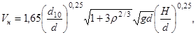
Vн - неразмывающая скорость, м/с;
d - средний диаметр отложений на дне или каменного крепления, м;
d10 - наибольший диаметр отложений на дне, содержащихся в смеси не более 10 %, м;
ρ - величина мутности от руслоформирующих функций, кг/м3;
Н - глубина потока, м.
В реках крупность материала, из которого сложено русло, находится в прямой зависимости от уклона.
Речные потоки можно разделить на пять категорий:
приустьевые участки i ≤ 0,00003 - мелкий песок;
равнинные i ≤ 0,0003 - крупные и средние пески;
предгорные i ≤ 0,003 - гравийно-галечные отложения;
горные i ≤ 0,03 - валунно-галечные отложения;
высокогорные i ≤ 0,03 - скальные породы и крупные глыбы.
В зависимости от соотношения крупности русловых отложений и уклона русла могут быть устойчивые (Пy > 1), равновесные (Пy = 1 ÷ 0,8) и неустойчивые (Пy < 0,8).
Пу - безразмерный параметр устойчивости русла, определяемый отношением средней гидравлической крупности отложений (σ) к динамической скорости и по формуле
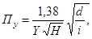
где H - глубина потока, м;
d - средняя крупность отложений, м;
i - уклон потока;
Y - параметр турбулентности по табл. В.Н. Гончарова
d∙103 м = 1,5 1,3 1,2 1,0 0,8 0,6 0,4 0,2 0,1
Y = 1,0 1,04 1,18 1,29 1,48 1,76 2,27 3,95 9,75
2.31. При проектировании следует учитывать изменения в режиме водоисточника, которые произойдут после строительства и во время эксплуатации водозаборного сооружения.
2.32. При бесплотинном водозаборе с боковым отводом рекомендуется предусматривать отвод воды из реки под острым углом к течению (водозабор с лобовым питанием), разделение входа в канал бычками на несколько пролетов для уменьшения водоворотных зон на входе в канал, при большом объеме наносов (ρ ≥ 1,5 кг/м3) - установку струенаправляющих систем, наносоуправляющих сооружений и шпор. Компоновку и тип сооружения рекомендуется устанавливать при проведении модельных гидравлических исследований в соответствии с п. 2.7.
2.33. При больших деформациях русла в районе водозаборного сооружения необходимо производить регулирование русла реки. Рекомендуемые виды регуляционных работ:
поддержание стержня потока у водозаборного сооружения путем дноуглубительных расчисток и устройства специальных шпор и струенаправляющих дамб;
отклонение потока донных наносов струенаправляющими системами и наносоудерживающими сооружениями;
берегоукрепительные работы;
создание сосредоточенного русла на разветвленных участках реки (перекрытие рукавов).
2.34. При выборе места для водозаборного сооружения на водохранилищах необходимо руководствоваться следующими положениями:
не допускается располагать водозаборное сооружение в верховьях водохранилищ, где наблюдается интенсивное отложение наносов, а также в местах, которые могут быть отделены от водохранилищ косами наносов;
не допускается располагать водозаборы на судоходном фарватере, а также в мелководной прибрежной зоне, с глубиной менее (0,3 + 0,4)L, где L - наибольшая длина волны. Предпочтение следует отдавать местам, где воздействие волны минимальное;
необходимо учитывать силу и направление ветра и наличие вдольбереговых течений, а также возможность переформирования берегов водохранилища в период эксплуатации сооружений.
Не допускается располагать водозаборы в районе стержня берегового течения.
2.35. При нахождении орошаемого массива рядом с плотиной водоприемник следует располагать в зоне действия промывных отверстий. При компоновке сооружений следует рассматривать варианты размещения здания насосной станции в створе плотины, в бычках (устье) плотины или в нижнем бьефе. В последнем случае всасывающие трубы насосов должны подключаться к донному водовыпуску или специальному водоводу, забирающему воду из верхнего бьефа плотины.
2.36. При больших колебаниях горизонтов воды в источнике забор воды надлежит осуществлять с двух и более горизонтов. При этом водоприемные устройства нижнего яруса следует выносить за пределы образующихся при переработке берегов прибрежной отмели и зоны повышенной мутности.
Водоприемные отверстия верхних ярусов следует располагать вне пределов образования прибойных волн (при глубине воды менее полуторной высоты волны с учетом размыва берега).
2.37. Затопленные русловые водозаборы следует применять двух типов:
облегченные в виде косого или симметричного раструба (применяются при отсутствии опасности повреждения льдом, топляками, якорями и лотами проходящих судов).
массивные - из деревянных ряжей или железобетона.
2.38. Размеры водоприемных отверстий следует выбирать в соответствии с указаниями СНиП 2.04.02-84 и СНиП 2.06.01-86.
2.39. В основании затопленных водозаборов, как правило, устраивается постель из каменно-щебеночной наброски. При скальном основании вместо каменной постели допускается применение выравнивающего слоя бетона. Верх постели из каменной наброски должен располагаться на глубине не менее 1,5∙Н (где Н - расчетная высота волны), и из условия затопления верха водозабора под отметку минимального уровня ледостава в водоисточнике на глубину hл + 0,2 м, где hл - расчетная толщина льда.
2.40. Размер постели в плане должен определяться габаритными размерами основания водозабора и возможной величины размыва русла после его постройки. Для предупреждения размыва русла вокруг постели и ее подмыва укладывают камень. Крупность его определяется расчетом в зависимости от величины придонных скоростей потока.
2.41. Русловое водозаборное сооружение следует выполнять в виде пустотелого бычка или круглым. Внешние очертания сооружения и его расположение в русле должны обеспечить благоприятные условия для обтекания потока. Между сооружением и обоими берегами следует оставлять проходы, размеры которых должны соответствовать требованиям СНиП 2.06.01-86 и СНиП 2.06.07-87. Сооружения, расположенные на реках, где толщина льда достигается 30-40 см, должны иметь ледорезы, совмещенные с основным сооружением. Режущее ребро следует покрывать металлической обшивкой толщиной 12-16 мм или естественным камнем.
2.42. Компоновка водоприемных отверстий должна обеспечить забор воды из наиболее осветленных слоев. При расположении водоприемных отверстий в два и более рядов или при заборе воды на нужды водоснабжения перед насосами (входными сечениями труб) необходимо предусматривать мокрые колодцы объемом не менее 15-20 Q (Q - секундный расход насоса).
2.43. Насосные станции русловых водозаборов следует проектировать в соответствии со СНиП 2.04.02-84 и настоящими Нормами.
2.44. Для водозаборов первой категории надежности при тяжелых условиях водозабора следует рассматривать возможность применения водоприемных ковшей. Выбор схемы ковша зависит от местных условий.
При большом количестве влекомых (донных) наносов следует применять ковши с верхним питанием; при тяжелых шуговых и ледовых условиях, но при небольшом твердом стоке - ковши с низовым питанием, при особо тяжелых условиях водозабора (наносы, шуга, лед) - ковши с комбинированным питанием.
Как правило, на вогнутых участках рек следует применять ковши с полной или частичной врезкой в берег, а на прямолинейных участках - полностью выдвинутых в бытовое русло реки.
Угол отвода воды в ковшах верхнего питания принимают в пределах 0 - 20˚. При специальном обосновании допускается его увеличение до 60˚.
2.45. Габаритные размеры ковша определяют из условия допустимых скоростей, всплывания шуги и осаждения наносов. Скорость воды при входе в ковш принимают не более 25 % от скорости речного потока.
Отметку дна ковша и его размеры следует назначать из условия водозабора или при минимальных горизонтах воды с учетом объема для аккумулирования осаждаемых наносов, но не менее 0,7 м. Ширину ковша необходимо увязывать с габаритными размерами механизмов, применяемых для его очистки от наносов.
2.46. Речным берегам и ограждающей дамбе, особенно ее головной части, следует придавать плавные, удобообтекаемые формы. Для лучшего обтекания ковшей и отклонения донных наносов от входных отверстий в ковшах с верховым питанием следует предусматривать струенаправляющие сооружения и, при необходимости, шугоотбойные запани.
2.47. Откосы ковша и ограждающей дамбы следует крепить в соответствии с расчетными скоростями течения воды: в ковше - максимальная скорость воды при опорожнении, со стороны реки - двойная скорость речного потока.
Для крепления откосов следует использовать со стороны ковша каменную отсыпку, со стороны реки - каменную отсыпку, бетонные и железобетонные плиты. При этом наиболее тщательно необходимо закреплять головную часть дамбы. При специальном обосновании ограждающую дамбу или ее головную часть допускается выполнять в виде подпорных стенок.
2.48. Речные дамбы необходимо выполнять незатопляемыми, в соответствии с нормами на проектирование земляных плотин.
2.49. При большом объеме наносов (ρ ≥ 5 кг/м3) и относительно небольших глубинах на входе в ковш необходимо предусматривать шлюз-регулятор, который позволяет при установке шандор создавать дополнительный порог.
При расположении ковша на перекатах для подвода воды к нему необходимо проводить дноуглубление при устойчивых грунтах или устройство регулирующих сооружений при слабых грунтах русла реки. В первом случае для борьбы с донными наносами допускается также устройство прорезей. Применять донные полузапруды для отжима донных наносов не допускается.
2.50. Береговые водозаборные сооружения, как правило, применяют трех типов: шлюзы-регуляторы, водоприемники камерного типа и забор воды всасывающими трубами из открытых источников.
Шлюзы-регуляторы используют на входе в открытые каналы (проектируются по нормам обычных гидротехнических сооружений). Эти шлюзы открытого или трубчатого типов обычно врезают в коренной берег или совмещают с дамбами обвалования.
Водоприемники камерного типа расположены отдельно от здания насосной станции или совмещены с ним. Число камер, как правило, равно числу всасывающих или самотечных труб. Отдельно стоящие водоприемники камерного типа применяют при колебаниях горизонтов воды до 5 м.
Забор воды всасывающими трубами из общей камеры или из водоисточника применяют на насосных станциях с подачей до 1,5 м3/с.
Выбор оптимального типа и конструкции водозаборного сооружения должен решаться на основе технико-экономического расчета с учетом обеспечения наилучших условий эксплуатации.
2.51. Береговые водоприемные сооружения, совмещенные с насосной станцией первого подъема, следует применять, когда:
отметки заложения фундамента водозаборного сооружения и здания насосной станции практически одинаковы;
нет необходимости в сокращении водоприемного фронта и аванкамеры, что может быть при установке в здании станции вертикальных насосов или при непосредственном водозаборе из открытого водоисточника.
2.52. Отдельно стоящие береговые водоприемные сооружения следует применять, если:
площадь фундамента водозаборного сооружения меньше площади фундамента здания станции в два и более раза или есть возможность существенно уменьшить глубину заложения фундамента здания станции;
конструктивное использование камеры полузаглубленного здания насосной станции требует равномерной засыпки ее со всех сторон;
требуется значительное сокращение ширины аванкамеры.
2.53. Водоприемники всасывающих трубопроводов насосов должны обеспечивать надежный забор воды, независимость работы всасывающих трубопроводов, возможность отключения насосов без перерыва подачи воды другими насосами, а также исключать возможность засасывания воздуха, плавающих предметов и мусора.
2.54. Заглубление верхней кромки входного сечения всасывающего или самотечного трубопровода под минимальный горизонт воды в водоприемнике при скорости входа 0,8 м/с и расходом менее 2 м3/с следует принимать 0,6∙Д (где Д - гидравлический диаметр входного сечения) над верхней точкой входного сечения при острых кромках (расположение входного сечения перпендикулярно потоку); 0,4∙Д - при плавно закругленных кромках, но не менее 0,4 м; 0,8×Д, но не менее 0,5 м для вертикально погруженных всасывающих трубопроводов (входное сечение параллельно поверхности воды, кромки острые).
Минимальное заглубление верхней кромки входного отверстия всасывающих труб насосов на подачу более 2 м3/с следует принимать по формуле
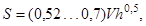
где 0,52 - при фронтальном подводе воды;
0,7 - при косом подводе воды;
V - средняя скорость в сжатом сечении всасывающей трубы насоса, м/с;
H - высота сжатого сечения, м.
При необходимости снижения величины заглубления входных отверстий всасывающих труб следует предусматривать одно из мероприятий:
установку успокоительных решеток, высота стержней которых должна быть не менее 3∙а (где а - величина просвета между стержнями);
установку горизонтальных разделительных балок.
Минимальное расстояние между днищем водоприемной камеры и входным сечением вертикальных всасывающих труб должно быть не менее 0,4∙Д.
2.55. Минимальное расстояние между входными сечениями всасывающих трубопроводов, устанавливаемых без бычков, следует принимать не менее 2 Д (в осях) для горизонтальных трубопроводов и не менее 3∙Д для вертикальных трубопроводов, если обеспечен свободный, без помех, подвод воды к каждой всасывающей трубе. В том случае, если всасывающие трубы расположены на одной оси, совпадающей с направлением потока, расстояние между ними следует увеличивать до 10∙Д.
2.56. Габаритные размеры и форма камеры водоприемника должны обеспечивать благоприятные гидравлические условия входа во всасывающие трубы. Рекомендуемая ширина камеры не более 1,5∙Д, глубина - в соответствии с п. 2.54. Минимальная длина раздельных бычков должна быть не менее 2∙Д (от внешней кромки всасывающей трубы до начала бычка).
Вертикальная всасывающая труба должна быть максимально придвинута к задней стенке камеры.
2.57. В качестве водоподводящих сооружений могут быть применены саморегулирующиеся или несаморегулирующиеся каналы, а также самотечные или сифонные трубопроводы.
2.58. Габаритные размеры и конструкции водоподводящих сооружений следует обосновывать технико-экономическим расчетом с учетом общей компоновки узла сооружений, природных условий, производства работ и удобства эксплуатации.
2.59. Открытые и закрытые водоводы должны проектироваться с учетом требований СНиП 2.06.03-85.
2.60. Проектирование каналов следует вести в соответствии с указаниями СНиП 2.06.03-85 и настоящего раздела.
2.61. Подводящие каналы следует, как правило, проектировать саморегулирующимися.
Несаморегулирующиеся каналы допускается применять только в том случае, если по тем или иным условиям необходимо ограничить амплитуду колебаний уровня воды в канале, а применение закрытого водовода нецелесообразно. При этом обязательным условием является устройство головного шлюза-регулятора, оборудованного дистанционно или автоматически управляемыми затворами. Необходимость в аварийном сбросе и его расход следует устанавливать расчетом неустановившихся процессов в канале.
2.62. Длину подводящего канала, его тип, габаритные размеры, уклон, облицовку, способ пересечения препятствий (акведук, дюкер, мост-водовод и т.д.) необходимо устанавливать на основе технико-экономических сравнений вариантов.
2.63. Гидравлический режим работы подводящего канала следует увязывать с режимом работы насосной станции и уровнями воды в источнике. Все каналы, как правило, должны работать в равномерном режиме или с небольшим подпором. Работа канала в режиме спада требует специального обоснования. При использовании подводящих каналов насосных станций в качестве регулирующей емкости скорость опорожнения следует подбирать так, чтобы не вызвать разрушения откосов канала гидродинамическим воздействием воды.
2.64. Эксплуатационные дороги в зоне сооружений насосных станций должны быть запроектированы в соответствии с указаниями СНиП 2.06.03-85 и СНиП 2.05.11-83.
2.65. Закрытые водоводы (самотечные безнапорные, самотечные напорные и сифонные) следует применять только в том случае, если нецелесообразно строительство открытых каналов.
Самотечные и сифонные водоводы надлежит проектировать в соответствии со СНиП 2.04.02-84 и настоящими Нормами.
2.66. Безнапорные водоводы допускается применять для подачи расходов воды более 5 м3/с при небольших колебаниях горизонтов воды. Форма водовода - круглая, прямоугольная или овальная в зависимости от расходов и внешних нагрузок. Водовод следует укладывать с постоянным уклоном в сторону насосной станции. При любых режимах эксплуатации между максимально возможной поверхности воды и верхней точкой свода водовода должна быть воздушная прослойка не менее 0,2 м.
2.67. Напорные водоводы, как правило, применяют для подачи любых расходов при любых колебаниях уровней воды в водоисточнике.
Форма водоводов - круглая, при небольших напорах (до 20 м) - прямоугольная или овальная. Самотечные напорные трубопроводы следует применять с постоянным уклоном не менее 0,001, чтобы исключить возможность образования воздушных мешков и мест скопления наносов.
2.68. Сифонные трубопроводы допускается применять в водозаборах II и III категорий надежности в том случае, если установка всех других типов водоводов не экономична. Сифонные водоводы следует проектировать стальными. Расчетный вакуум не должен превышать 6 м вод. ст. Сифонные водоводы следует укладывать с непрерывным подъемом от водоисточника.
2.69. Расчет сечений водоводов следует производить по допускаемой скорости воды для самотечных трубопроводов 0,7 ÷ 1,5 м/с, для сифонных 1,2 ÷ 2 м/с. Принятые сечения водоводов необходимо проверять на незаиление. При возможности биологического обрастания расчет потерь в водоводе следует производить при значении коэффициента шероховатости 0,02 - 0,04.
2.70. Если отложения наносов в трубопроводах нельзя избежать, следует предусматривать возможность их очистки или промывки.
2.71. Укладку водоводов следует предусматривать с заглублением в грунт на 0,5 - 1 м ниже возможного размыва дна, но не менее глубины промерзания. Водоводы должны быть уложены на основание, исключающее возможность просадки. При строительстве на слабых грунтах необходимо предусматривать уплотнение или искусственное основание. Особое внимание следует обращать на защиту водоводов в зоне волнового воздействия. Водоводы, уложенные в русле водоисточника, должны проверяться на всплытие.
2.72. Для осмотра, ремонта и механической очистки самотечных трубопроводов следует предусматривать смотровые люки и колодцы. Устройство люков на сифонных водоводах должно быть обосновано.
2.73. Для насосных станций I и II категорий надежности при специальном обосновании допускается предусматривать установку водоводов в специальных галереях. Размеры галереи принимать: от оболочки труб и до стенок и днища галереи 0,5 м, проходы не менее 0,7 м, минимальная высота 1,7 м. Выход из галереи в здание насосной станции должен быть закрыт водонепроницаемой дверью.
2.74. Напорные трубопроводы русловых насосных станций следует устанавливать так, чтобы был обеспечен доступ для их осмотра и ремонта.
Примечания. 1. При технико-экономических расчетах оптимального диаметра трубопровода необходимо учитывать стоимость галереи или моста для установки трубопровода.
2. Стальные трубопроводы русловых насосных станций допускается использовать в качестве пролетных конструкций мостовых строений.
2.75. Всасывающие трубопроводы насосов следует выполнять из стальных труб. При длине трубопровода более 30 м и диаметре свыше 500 мм экономичный диаметр трубопровода необходимо определять на основании технико-экономических расчетов, при меньших длинах и диаметрах - по допускаемым скоростям (СНиП 2.04.02-84).
2.76. Конструкция и компоновка элементов всасывающих трубопроводов насосов должны исключать возможность засасывания воздуха и образования воздушных мешков. Для этого всасывающий трубопровод должен иметь непрерывный подъем к насосу с уклоном не менее 0,005.
Все соединения всасывающего трубопровода должны быть герметичными. На всасывающих трубопроводах (с положительной высотой всасывания) не следует применять компенсаторы, не способные сохранять герметичность в условиях расчетного вакуума.
2.77. В малых и средних насосных станциях допускается устройство всасывающих трубопроводов по типу «приподнятого колена».
2.78. Всасывающие трубопроводы следует устраивать по возможности короткими (до 30 м), без резких переходов, с минимальным количеством стыков (особенно фланцевых) и колен. Перед насосом должен быть прямолинейный участок трубы длиной не менее 2∙Д (Д - диаметр трубы).
2.79. При изменении диаметра всасывающей трубы на горизонтальных участках следует применять несимметричные переходы с горизонтальной верхней образующей.
2.80. При длине всасывающего трубопровода более 30 м и скоростях, превышающих указанные в п. 2.75, необходимо выполнять специальный расчет по определению возможности пуска агрегата. В этих случаях, как правило, требуется предусматривать мероприятия для замедления процесса пуска насоса (замедленное открытие задвижки).
Особенно тщательно расчет должен быть выполнен в тех случаях, когда основной насос, установленный с положительной высотой всасывания, должен быть пущен на опорожненный трубопровод.
2.81. Число всасывающих трубопроводов должно быть равно числу насосов, при поочередной работе агрегатов допускается устройство общего всасывающего трубопровода.
2.82. Приемные клапаны диаметром до 250 мм допускается устанавливать на оголовках всасывающих трубопроводов насосных станций III категории надежности подачи.
Применение более крупных приемных клапанов должно быть обосновано.
2.83. Конструктивное исполнение напорных и всасывающих трубопроводов должно исключать передачу на насос вибрации и температурных изменений длины труб.
2.84. Сопряжение подводящего канала с водоприемным сооружением, как правило, выполняют симметрично расширяющейся аванкамерой.
2.85. Для улучшения растекания потока в аванкамере и уменьшения объема отложения наносов рекомендуется предусматривать специальные мероприятия: аванкамеры с обратным уклоном дна или с криволинейными откосами (в плане), установку направляющих продольных или поперечных стен и др. Выбор мероприятий осуществляется на основании технико-экономических расчетов с проведением в необходимых случаях для крупных и уникальных насосных станций модельных гидравлических исследований.
2.86. Аванкамеры с обратным уклоном следует применять для вновь строящихся насосных станций. Основные положения при проектировании: участок с обратным уклоном (не круче 0,10) располагать в начальной части аванкамеры, наивысшая отметка дна (гребня) аванкамеры должна быть выбрана таким образом, чтобы при любых уровнях воды в подводящем канале и любых режимах работы станции скорость воды на гребне дна аванкамеры была бы на 20 ÷ 30 % меньше средних скоростей течения воды в подводящем канале при соответствующем режиме; участок сопряжения гребня дна аванкамеры с водоприемными отверстиями не должен быть круче 0,4, откосы должны быть плоскими, без изломов.
2.87. Для улучшения растекания потока в расширяющейся аванкамере (при γ > 4, где γ - степень расширения аванкамеры: отношение длины водоприемного фронта к средней ширине канала), допускается установка продольных стен. Основные рекомендации: высоту стен в начале аванкамеры следует принимать равной 1/3 глубины воды в канале, расстояние конечной части стен от бычков водоприемных оголовков - 1,6∙b (где b - ширина входа в камеру), верх стен - горизонтальный.
2.88. Для улучшения растекания потока в аванкамерах построенных насосных станций, а также в случаях, если насосная станция используется для полного опорожнения канала, допускается применение одной или двух поперечных стенок или одной поперечной стенки с короткими продольными стенками-растекателями.
2.89. Поперечную стенку,
как правило, следует применять при соотношении 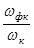
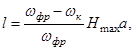
где Нmax - максимальная глубина воды у водоприемника при пропуске Qmax;
ωфр - площадь воды в створе водоприемных отверстий при Qmax;
а = 1,8 ... 2,5 - коэффициент;
ωк - площадь сечения канала при Qmax.
2.90. Аванкамеры перед отдельно стоящими сороудерживающими сооружениями (СУС), как правило, выполняются с горизонтальным дном при угле конусности до 45˚. Место размещения СУС определяется из условия сопряжения подводящего канала с шириной фронта СУС. За СУС стенки аванкамеры могут быть откосными или вертикальными, что с гидравлической точки зрения предпочтительнее.
Примечания. 1. В тех случаях, когда участок аванкамеры перед СУС имеет γ > 2, следует рассмотреть технико-экономическую целесообразность строительства СУС на гребне дна аванкамеры с обратным уклоном.
2. При перекачке воды с большим содержанием наносов следует рассматривать вариант установки за СУС продольных разделительных стенок, чтобы уменьшить объем отложения наносов перед неработающими насосами.
2.91. Сопряжение водоприемного сооружения (оголовка) с откосами аванкамеры следует выполнять подпорными стенками, расположенными под углом не более 70° к оси аванкамеры (оптимальный угол 45°).
2.92. Дно и откосы аванкамеры не должны иметь впадин, способствующих образованию мертвых зон и встречных течений. Наиболее эффективно применение водоприемников с криволинейным фронтом водозабора, когда направление движения воды к каждому водозаборному отверстию перпендикулярно.
2.93. Откосы аванкамеры и концевой части канала (на длине 3-5h, где h - наполнение канала) следует крепить каменной отмосткой или железобетонными плитами. Дно аванкамеры, примыкающее к водоприемным отверстиям, а также к стенкам-растекателям, должно быть закреплено на длине не менее пяти диаметров (высоты) входного отверстия. При специальном обосновании может быть облицован переломный участок дна (гребень - место перехода от обратного уклона дна к прямому). Остальные участки дна аванкамеры не следует крепить, чтобы не создавать трудности при механизированной очистке дна канала от наносов.
2.94. В зависимости от назначения, типа выбранного оборудования и характеристики водоисточника, как правило, принимают следующие типы зданий насосных станций:
наземный - при водозаборе из каналов, водохранилищ, озер и рек с устойчивыми берегами (колебания горизонтов воды в водоисточнике в пределах допустимой высоты всасывания основных насосов и размещение пола насосного помещения выше максимального уровня воды в источнике); при специальном обосновании разрешается применение блочно-комплектных зданий насосных станций на подачу до 10 м3/с;
полузаглубленный и заглубленный - с совмещенным или отдельно стоящим водозаборным сооружением; при водозаборе из каналов, водохранилищ и рек; колебании горизонтов воды, превышающих всасывающую способность насоса. Как правило, в здании полузаглубленного типа основные насосы устанавливают ниже минимального горизонта воды в источнике. При амплитуде колебаний горизонтов воды в источнике более 3 м следует проводить технико-экономическое сравнение с плавучими насосными станциями или полузаглубленными, в которых оборудование установлено выше минимального горизонта воды в источнике (с использованием всасывающей способности насосов);
блочный - при установке вертикальных насосов. Водозаборное сооружение совмещается со зданием станции, но при широких затопляемых поймах и больших колебаниях горизонтов воды допускается применять русловые или береговые водозаборные сооружения с подводом воды к насосам самотечными трубами;
плавучие - при неустойчивых берегах и больших колебаниях горизонта воды (свыше 5 м);
поплавковый - при водозаборе из водоисточников с большими колебаниями горизонтов воды (свыше 4-5 м) и производительности насосной станции до 800 л/с;
передвижной - при водозаборе из открытых водоисточников для орошения небольших участков и водоотлива при строительстве;
фуникулерный - при водозаборе из открытых водоисточников с амплитудой колебания горизонтов воды, превышающей допустимую высоту всасывания. Этот тип зданий допускается применять для подачи воды до 500 л/с.
2.95. Здание насосной станции должно обеспечивать оптимальный режим работы оборудования, защиту обслуживающего персонала и оборудования от атмосферных воздействий, а также наибольшие удобства и надежность эксплуатации при минимальных капиталовложениях и сроках строительства.
2.96. Высотная компоновка здания насосной станции зависит от размера и конструкции агрегата и его положения относительно минимального горизонта воды в нижнем бьефе. Насосы должны быть расположены так, чтобы их проектная высота всасывания была бы меньше допустимой, гарантированной заводом-изготовителем. Максимальную высоту всасывания не следует принимать более 5 м. При определении положения насосов по отношению к минимальному уровню воды в нижнем бьефе необходимо учитывать: снижение горизонтов воды в аванкамере при работе насосов, потери напора в подводящих водоводах, сороудерживающих решетках или сетках.
2.97. Высоту верхнего строения здания, оборудованного подъемно-транспортными механизмами, как правило, следует определять с учетом возможности погрузки оборудования на транспортную платформу. При этом должны быть обеспечены следующие запасы: при проносе над оборудованием с помощью гибких строп - 0,5 ÷ 0,7 м и при применении жесткого крепления - 0,25 ÷ 0,35 м; при проносе оборудования над перекрытиями, при установке на транспортную платформу, а также между проносимым оборудованием и выступающими частями здания - 0,3 ... 0,5 м. Для насосных станций с подачей до 1000 л/с, оборудованных насосом или электродвигателем весом до 1 т, с целью уменьшения высоты верхнего строения здания необходимо рассматривать возможность выноса оборудования с монтажной площадки здания такелажными средствами.
2.98. Как правило, принимают однорядную компоновку основных агрегатов. При наличии на станции более четырех основных агрегатов горизонтального исполнения допускается двухрядная компоновка оборудования с насосами левого и правого вращения.
2.99. В соответствии с рекомендациями ПУЭ-86 и СНиП 2.04.02-84 в зданиях и сооружениях насосных станций должны быть обеспечены минимально допустимые проходы:
также между рядами агрегатов и строительными конструкциями не менее 1 м. Допускаются местные сужения проходов между выступающими частями машин и строительными конструкциями до 0,6 на длине не более 0,5 м;
между компрессорами - не менее 1,5 м, между ними и стеной - 1 м;
между агрегатами и фасадом (лицевая сторона оборудования) пульта управления или щита управления - не менее 2 м;
между торцом щита и агрегатами - не менее 1,0 м;
между подвижными частями тепловых двигателей - не менее 1,2 м;
между рядами щитов с электрооборудованием и частями здания не менее 1,0 м при однорядном расположении шкафов, не менее 1,2 м при двухрядном и не менее 0,6 м при открытой дверце; ширина коридоров управления, где находятся привода выключателей или разъединителей, соответственно увеличиваются до 1,5 и 2 м, при установке КРУ и КТП в отдельных помещениях проходы должны быть не менее 0,6 м плюс длина выкатной тележки для однорядного исполнения и 0,8 м плюс длина выкатной тележки - для двухрядного. При этом должен быть сохранен проход между щитом и выкаченной тележкой. Во всех случаях ширина прохода не должна быть менее размера тележки по диагонали.
2.100. При специальном обосновании (возможность ремонта и обслуживания) проходы между агрегатами, а также между агрегатами и строительными конструкциями здания могут быть сокращены:
до 0,3 м при высоте машин до 1 м от уровня пола и не менее 0,6 м при высоте машин более 1,0 м при наличии прохода с другой стороны машины;
агрегаты мощностью до 10 кВт разрешается устанавливать у стен здания или на кронштейнах;
разрешается устанавливать на одном фундаменте два агрегата малой мощности (напряжением до 660 В и диаметром нагнетательного патрубка до 100 мм) при условии, что вокруг фундамента будет оставлен проход не менее 1,0 м, а расстояние между выступающими частями агрегатов будет не менее 0,3 м;
2.101. Проходы между насосными агрегатами следует увеличивать: для горизонтальных агрегатов - по условию демонтажа ротора электродвигателя без разбора статора (если это требуется по ТУ на ремонт электродвигателя);
для вертикальных агрегатов - по условию компоновки изогнутых всасывающих труб или камерных подводов с учетом минимально допустимых толщин разделительных бычков и рекомендованных СНиП 2.06.01-86 пролетов водоприемных отверстий;
при длине зданий насосных станций более 100 м рекомендуется предусматривать проезды для электрокар или транспортных тележек.
2.102. В случаях, когда верхняя отметка фундаментной плиты машины находится выше или ниже отметки пола более чем на 400 мм, вокруг машины должна быть предусмотрена несгораемая площадка шириной не менее 0,6 м. Площадка, расположенная на высоте 0,4-2 м над уровнем пола, должна ограждаться перилами, а при большей высоте - перилами и бортовыми барьерами. Для выхода на площадку обслуживания следует предусматривать лестницы.
2.103. У блочно-комплектных насосных станций распределительные и электрощитовые устройства располагаются, как правило, в отдельно стоящих электротехнических блок-боксах.
2.104. Помещения для аккумуляторных установок следует проектировать в соответствии с требованиями ПУЭ-86.
2.105. Для насосных станций со сложным кабельным хозяйством под помещением распределительного устройства допускается предусматривать двойной пол или кабельный этаж высотой не менее 1,8 м.
Во всех остальных случаях следует предусматривать кабельные каналы.
2.106. При компоновке здания насосной станции основное оборудование следует размешать в зоне действия крана. Если вспомогательное оборудование массой более 100 кг будет установлено вне зоны действия крана, следует предусматривать приспособления для его монтажа.
2.107. Установка оборудования в зданиях насосных станций или на открытых площадках должна производиться в зависимости от требований, предъявляемых к нему в части воздействия климатических факторов внешней среды.
Оборудование, предназначенное для наружной установки, должно, как правило, размешаться на открытых площадках или под навесами; размещение его в здании допускается только при специальном обосновании.
Оборудование, предназначенное для внутренней установки, должно размешаться в здании или под специальными колпаками.
2.108. Для временных насосных станций сезонного действия, особенно при сроке действия их до двух лет, следует, как правило, использовать оборудование для открытой установки.
При проектировании временных насосных станций с оборудованием, предназначенным для внутренней установки, следует, как правило, размешать его в зданиях наземного типа облегченной сборно-разборной конструкции. Применение для временных насосных станций сроком действия до 5 лет капитальных зданий полузаглубленного и заглубленного типа, а также со стеновым заполнением из штучных материалов требует специального обоснования.
2.109. При обосновании допускается строительство насосных станций полузаглубленного, заглубленного и блочного типов с пониженной наземной частью, а также установка основного оборудования под колпаками. В этом случае монтаж оборудования предусматривают козловыми или автомобильными кранами через съемные люки или раздвижные перекрытия.
2.110. При проектировании зданий насосных станций следует учитывать требования СНиП 2.04.02-84 и настоящих Норм.
На малых мелиоративных насосных станциях допускается не предусматривать санузлы и специальные помещения для дежурного персонала. При наличии свободной площади (без увеличения здания) разрешается выгородить комнату площадью не менее 6 м2 для дежурного и ремонтного персонала.
2.111. Габаритные размеры подземной части здания должны быть наименьшими из условия размещения и удобств эксплуатации оборудования, а также прочности и устойчивости самого сооружения. Вспомогательное оборудование, не связанное технологическим процессом с определенным местом, подсобные помещения, в том числе монтажные площадки по возможности следует выносить в наземную часть здания.
2.112. Во всасывающих трубах, особенно вблизи колен, не рекомендуется располагать приямков, скоб, люков и других узлов, влияющих на правильное формирование потока.
2.113. В зданиях насосных станций допускается устраивать две монтажные площадки, если длина здания более 40 м и в нем установлено более пяти вертикальных насосов производительностью более 5 м3/с каждый. При этом необходимость второй площадки должна быть обоснована возможностью ремонта одновременно по двум агрегатам. Вторая монтажная площадка обязательна, если здание имеет длину более 60 м и в нем установлено восемь и более насосов.
2.114. Монтажные площадки допускается не предусматривать, если для проведения монтажа и ремонтов оборудования можно использовать проходы между агрегатами. По возможности громоздкие части оборудования следует размешать вне здания насосной станции.
2.115. Напорные и всасывающие трубопроводы следует прокладывать через стены зданий следующим образом:
жесткая заделка при установке осевых насосов и в том случае, если стена здания (сооружения) используется в качестве анкерной опоры. Возможны два типа жесткой заделки: омоноличивание оболочки трубы в специально предусмотренной штрабе и пропуск трубы через стальную обойму. В этих случаях обечайка трубы и стальная обойма должны иметь противофильтрационные ребра и привариваться к основной арматуре сооружения. После усадки бетона рекомендуется производить дополнительную инъекцию в местах фильтрации;
гибкая заделка во всех остальных случаях, особенно в сейсмических районах. Зазоры между стенами и трубопроводами рекомендуется принимать не менее 50 мм. При пропуске трубопроводов через стены ниже уровня грунтовых вод следует предусматривать сальники.
2.116. Трубопроводы вспомогательных систем допускается укладывать в проходных и непроходных каналах, за исключением вентиляционных, а также замоноличивать в бетонную подготовку полов. Закладывать трубопроводы в железобетонные несущие конструкции, как правило, не следует, так как это снижает их прочность.
Запрещается прокладка трубопроводов через помещения аккумуляторных батарей.
Следует избегать прокладки трубопроводов в электротехнических помещениях. Если это указание не выполнимо, трубопроводы должны быть покрыты теплоизоляцией и уложены в специальный кожух.
2.117. Понтоны плавучих насосных станций следует конструировать как сухогрузные несамоходные суда по правилам Речного регистра РСФСР с учетом нормалей Минсудпрома СССР.
Технический проект понтона необходимо согласовывать с Речным регистром, если длина понтона превышает 20 м.
2.118. Корпуса понтонов плавучих насосных станций, как правило, изготовляют стальными (сварной конструкции) или железобетонными (монолитными или сборно-монолитными). Железобетонные понтоны, как правило, необходимо изготавливать на специализированной судоверфи.
2.119. Основная несущая система набора понтона поперечная со шпангоутным расстоянием (шпация) 600 мм для судов разрядов «Р» и «Д» и 550 мм для всех остальных. В форпике расстояние между шпангоутами должно быть не более 500 мм для судов разрядов «М» и не более 550 мм для остальных разрядов.
В понтонах шириной более 6000 мм или осадкой более 1000 мм следует предусматривать установку шпангоутов повышенной жесткости или поперечных балок-растяжек на уровне палубы. Их назначение увеличить жесткость днища понтона, исключить раскрытие бортов и скручивание фундаментов основных агрегатов.
2.120. Основные агрегаты следует размещать в трюме на днище понтона. Фундаменты под насосы и двигатели должны быть достаточно жесткими, чтобы деформации фундаментов и днища понтона при любых режимах работы понтона и оборудования не могли вызвать расцентровки агрегата. Для повышения жесткости фундаментов агрегатов мощностью 500 кВт и более продольные и поперечные балки фундаментных рам необходимо совмещать с днищевым набором. Конструкции фундаментов не должны препятствовать ремонту облицовки.
Оборудование судовых систем (насосы осушительной и балластной систем, противопожарные устройства, вентиляция) желательно устанавливать на служебных мостиках или кронштейнах не ниже 0,6 м над настилом.
2.121. Для предотвращения расцентровки агрегатов при деформациях корпуса понтона на всасывающих и напорных трубопроводах должны быть предусмотрены компенсаторы.
2.122. Понтон во всех режимах работы должен быть удифферентован на «0» с помощью балластной системы, поэтому для уменьшения объема балластных камер допускается размещение наиболее тяжелого оборудования у борта, противоположного напорным трубопроводам таким образом, чтобы величины крена и дифферента были бы одинаковы (но разного знака) в транспортном и рабочем положениях понтона.
Предельные допустимые величины крена и дифферента должны быть согласованы с заводами-изготовителями оборудования.
2.123. Установка водонепроницаемых перегородок за счет увеличения габаритных размеров понтона или удобств эксплуатации не рекомендуется.
2.124. Борта понтона и пики следует делать двойными, используя это пространство для размещения балласта, водозаборных коробок и шаровых шарниров напорных трубопроводов.
2.125. Забор воды следует производить со стороны днища. Водозаборные коробки должны быть оборудованы сороудерживающими решетками или рыбозащитными устройствами, герметичными люками, горловины которых необходимо выводить на уровень бортов (но не менее 0,3 м над горизонтом воды при максимальной осадке) и затворами для прекращения доступа воды в коробки при ремонтах насосов и зимней консервации.
2.126. Надстройку понтона следует выполнять облегченной конструкции.
2.127. Дренажная осушительная система понтона должна состоять не менее, чем из двух насосов и кольцевой магистрали с установленными по четырем углам каждого отсека водозаборными воронками. Кроме того, необходимо предусматривать сигнализацию состояния уровня воды в понтоне.
2.128. Для заполнения балластных камер необходим специальный насос и система трубопроводов. При специальном обосновании следует использовать в качестве балластного противопожарный насос. Запрещается использование дренажных насосов в качестве балластных систем.
Если понтон насосной станции разделен на самостоятельные отсеки, в каждом из них должны быть предусмотрены автономные дренажные и балластные системы.
2.129. Если в зоне расположения плавучей насосной станции на водоисточнике возможны ледовые явления (ледоходы, зажоры и т.д.), понтоны следует укрывать в специальных затонах.
2.130. На водохранилищах, где наблюдается переработка берегов или сильное волнение, плавучие насосные станции следует размещать в защищенных от волн естественных заливах. При отсутствии последних следует определить целесообразность размещения понтона во врезанном в берег ковше или за волнозащитными дамбами.
Для уменьшения длины соединительного трубопровода понтон плавучей насосной станции должен располагаться у крутого берега в зоне наибольших глубин.
2.131. Положение понтона должно быть зафиксировано по отношению к береговой анкерной опоре. Применяют два вида крепления: на якорях или жесткую расчалку соединительных трубопроводов.
Установка понтона на трех якорях применяется на реках с четко выраженным течением. В этом случае два якоря ставятся со стороны берега и один - со стороны реки. Якоря устанавливаются под углом 45˚ к понтону.
Крепление понтона соединительными трубопроводами, превращенными в статически неизменяемую систему, применяется для легких условий работы при наличии не менее двух однопролетных соединительных трубопроводов и шаровых соединений. Статически неизменяемая система достигается стяжками, установленными крест-накрест снизу и сверху соединительных труб.
2.132. Сообщение между понтоном и берегом, как правило, предусматривается по специальному служебному мостику, обеспечивающему транспортировку оборудования.
Для доставки на понтон тяжелого оборудования следует предусматривать плавучие средства и подъемно-транспортное оборудование для его разгрузки и погрузки как на берегу, так и на понтоне. Как правило, понтон оборудуется ручными мостовыми кранами грузоподъемностью до 10 т. В случае необходимости в монтаже более тяжелого оборудования применяют спаренные ручные мостовые краны. При специальном обосновании допускается применение козловых кранов.
2.133. Число линий соединительного трубопровода следует принимать равным числу насосных агрегатов. При установке на понтонах агрегатов с подачей менее 500 л/с допускается работа двух насосов на один соединительный трубопровод. При подаче одного насоса более 3 м3/с при специальном обосновании допускается работа одного насоса на два соединительных трубопровода.
2.134. Конструкция соединительных трубопроводов должна обеспечивать подвижность понтона в пределах колебаний горизонтов воды в водоисточнике с учетом 10 % запаса при максимальных кренах понтона, а также прочность при нагрузках от собственной массы труб и заключенной в них воды, гидродинамического давления воды и усилий от навала понтона.
2.135. Соединительные трубопроводы должны быть стальными, однопролетными с шарнирными соединениями на концах. Пролет ограничивается прочностью и жесткостью трубы (шарнирного соединения) и допустимой нагрузкой на борт понтона. В тех случаях, когда однопролетные соединительные трубопроводы невыполнимы, разрешается применение соединительных трубопроводов наплавного типа, состоящих из нескольких пролетов. В этом случае промежуточные шарниры устанавливаются на специальных понтонах. Для правильной посадки промежуточных понтонов на дно следует предусматривать искусственные основания.
2.136. В качестве гибких стыков трубопроводов диаметром 300-1000 мм рекомендуется применять шаровые соединения. Для трубопроводов диаметром до 500 мм допускается применение гибких резиновых шлангов, армированных стальной проволокой.
Гибкие стыки соединительных трубопроводов должны допускать люфт по длине трубопровода, способный компенсировать все неточности, допущенные при монтаже опорных конструкций и подвижной части труб.
2.137. При проектировании напорных трубопроводов следует руководствоваться положениями СНиП 2.06.03-85 и СНиП 2.06.01-86. Выбор материала и класса прочности труб для водоводов следует принимать на основании технико-экономических и статических расчетов с учетом агрессивности грунта и транспортируемой воды, а также геологических условий. Для напорных водоводов, как правило, следует применять неметаллические трубы.
2.138. Область применения различных типов труб стальные трубопроводы любых диаметров могут быть применены на участках при рабочем давлении более 1,5 МПа, для переходов под железными и автомобильными дорогами, через водные преграды и овраги; при прокладке трубопроводов по опорам эстакад и в туннелях;
железобетонные трубопроводы диаметром 1700 мм и выше, изготовляемые на месте из монолитного железобетона, при давлении до 0,5 МПа. При возможности изготовления железобетонных труб с предварительно напряженной арматурой, стальным сердечником, а также стальным сердечником, усиленным предварительно напряженной арматурой, расчетное давление может быть увеличено до 3 МПа;
сборные железобетонные виброгидропрессованные трубы могут быть применены на рабочее давление 1,5; 1 и 0,5 МПа при Ду 500 ... 1600 мм, данный тип труб предназначен для подземной установки;
сборные тонкостенные железобетонные трубы со стальным сердечником могут быть применены на рабочее давление 1,0 и 1,5 МПа при Ду 250 ... 800 мм; данный тип труб предназначен для подземной установки;
сборные железобетонные виброгидропрессованные трубы со стальным сердечником могут быть применены на давление 1,0 и 1,5 МПа при Ду 500 ... 1000 мм; данный тип труб предназначен для подземной установки;
сборные железобетонные центрифугированные трубы могут быть применены на давление 1,5; 1 и 0,5 МПа при Ду 500 ... 1600 мм; данный тип труб предназначен для подземной установки;
трубы напорные асбестоцементные класса ВТ-6, ВТ-9 и ВТ-12 при Ду 100 ... 500 мм;
трубы напорные пластмассовые из полиэтилена и полипропиленовые на давление от 0,25 до 1 МПа при Ду 10 ... 600 мм. Пластмассовые трубопроводы могут быть рекомендованы для применения в качестве напорных трубопроводов, укладываемых в агрессивных грунтах, а также в качестве водоводов вспомогательных систем.
2.139. Трубы напорные чугунные и трубы напорные стальные тонкостенные со спиральным или продольным сварным швом на насосных станциях, как правило, применять не следует.
2.140. Толщину стенок стальных и асбестоцементных труб, а также армирование железобетонных труб следует определять расчетом, если они не регламентируются ГОСТ, ТУ или иным официальным документом, в зависимости от внутреннего давления и условий прокладки трубопроводов.
2.141. При проектировании напорных трубопроводов мелиоративных насосных станций следует учитывать следующие требования:
указания по прокладке трубопроводов (подготовка основания, глубина заложения, параллельная прокладка нескольких ниток трубопроводов, прокладка трубопроводов в туннелях, переходы трубопроводов под дорогами, конструирование колодцев;
установка трубопроводной арматуры;
защита от гидравлических ударов;
расчеты (прочностные, гидравлические, технико-экономические);
строительство трубопроводов в сейсмических районах;
строительство трубопроводов на просадочных грунтах, на подрабатываемой территории и на вечномерзлых грунтах.
2.142. Напорные, всасывающие и самотечные трубопроводы мелиоративных насосных станций, не работающие в зимнее время, должны быть, как правило, опорожнены, для этого необходимо предусматривать сбросные устройства.
2.143. Число ниток напорного трубопровода длиной менее 100 м следует, как правило, принимать равным числу насосов. При длине трубопровода 100-300 м объединение нескольких ниток в одну должно быть обосновано технико-экономическими расчетами, а при длине более 300 м такое объединение обязательно.
2.144. На насосных станциях следует предусматривать, как правило, не менее двух ниток напорных трубопроводов. Для насосных станций III категории надежности по подаче воды допускается одна нитка напорного трубопровода при условии, что время ее ремонта при аварии не превышает допустимого перерыва в водоподаче.
2.145. Переключения на напорных трубопроводах предусматриваются только для насосных станций I категории надежности подачи при условии, что время ликвидации аварии на трубопроводах не превышает одних суток.
2.146. При объединении напорных трубопроводов диаметры труб должны быть подобраны так, чтобы скорости движения воды изменялись, как правило, плавно. Переход от одного диаметра трубы к другому должен осуществляться конусной вставкой с углом не более 8˚.
2.147. Все элементы стальных трубопроводов (тройники, развилки, колена), сечения которых отклоняются от замкнутых окружностей, следует усиливать специальными конструкциями (эллиптическими полукольцами, круговыми кольцами, распорными стержнями, тягами круглого или каплевидного сечения и т.д.). Необходимость увеличения толщин стенок трубопроводов в местах разветвления труб устанавливается расчетом.
При специальном обосновании вместо эллиптических полуколец и круговых колец допускается обетонирование тройников и развилок. В этом случае стальные трубы выполняют роль облицовки, а все нагрузки воспринимает бетонный массив, усиленный кольцевой арматурой.
2.148. Лазы для периодического осмотра внутренних поверхностей засыпных трубопроводов разрешается не предусматривать. Установка лазов обязательна на стальных наземных трубопроводах диаметром 800 мм и более (через 200 м), а также на трубопроводах диаметром более 800 мм для ревизии запорной арматуры. Как правило, такие лазы изготавливаются диаметром 450-550 мм с прижимом крышек изнутри давлением воды. В том случае, если в трубопроводе может возникнуть вакуум, крышки лаза следует крепить на болтах.
2.149. Внутренние и наружные поверхности стальных трубопроводов (кроме обетонируемых) должны быть защищены от коррозии специальными покрытиями в соответствии со СНиП 2.03.11-85 и ГОСТ 9.015-74. Как правило, можно применять следующие типы покрытий:
наружные и внутренние поверхности открытых стальных трубопроводов - очистка поверхности от ржавчины, два слоя грунтовки из ХС-010 или ХС-068 (или их заменители) и три слоя покровного лака ХВ 1100 (срок службы до 8 лет); более долговечно покрытие из алюминиевой краски ЭП-00-10 (до 20 лет);
наружные поверхности стальных трубопроводов, уложенных в земле, необходимо защищать от коррозионной активности грунтов и блуждающих токов. В соответствии с ГОСТ 9.015.74 п. 3.2.10 подземные стальные трубопроводы диаметром 1020 мм и более должны иметь усиленную гидроизоляцию независимо от удельного электросопротивления грунта в следующих случаях: при установке в Казахстане, Средней Азии и юге Европейской части СССР (южнее 50-й параллели северной широты); в засоленных, болотистых и поливных почвах любого района страны, на подводных переходах и поймах рек, на переходах через железные и автомобильные дороги, на участках промышленных и бытовых стоков, на участках блуждающих токов. В качестве усиленных покрытий могут быть применены битумно-полимерные, битумно-минеральные, этиленовые и другие.
2.150. Для защиты от обрастания дрейссеной окрашенных поверхностей механического оборудования и металлоконструкций, длительное время работающих в воде, их следует покрывать дополнительно двумя слоями необрастающих красок.
2.151. Открытые поверхности наземных железобетонных трубопроводов должны защищаться лакокрасочными покрытиями или, при специальном обосновании, - штукатуркой на основе полимерных материалов или оклейкой из рулонных и пленочных химически стойких материалов.
2.152. Область применения напорных трубопроводов из асбестоцементных и сборных железобетонных труб должна определяться с учетом требований СНиП 2.06.03-85.
2.153. Напорные трубопроводы из асбестоцементных и сборных железобетонных труб рекомендуется применять засыпными. При прокладке трубопровода в зоне отрицательных температур материал стыковых элементов должен быть морозостойким.
2.154. Укладка асбестоцементных и сборных железобетонных труб в пучинистых грунтах в зимнее время, как правило, не допускается, а в просадочных грунтах допускается при условии устранения возможности просадок.
2.155. Присоединение фасонных частей к трубам следует выполнять при помощи асбестоцементных, железобетонных или чугунных фланцевых муфт. Для асбестоцементных труб марки ВТ-12 предпочтительно применение чугунных муфт. Присоединение отводов можно выполнять с помощью стандартных чугунных изделий или стальных сварных деталей.
2.156. При наличии в основаниях напорных трубопроводов связных (суглинки, глины), крупнообломочных и скальных грунтов трубы необходимо устанавливать на песчаную подушку толщиной не менее 10 см.
При несущей способности грунтов основания менее 0,1 МПа, а также при залегании в основаниях грунтов с различными модулями сжатия необходимо предусматривать на этих участках искусственные основания (железобетонные плиты, сваи и т.д.).
В зависимости от грунтовых условий, расчетных напоров и характеристик труб могут, приниматься следующие типы опирания:
на песчаную подушку - плоское или спрофилированное по форме трубы с углом охвата 75 или 90˚;
на бетонный фундамент с углом охвата 120˚.
2.157. Трубопроводы из монолитного железобетона следует проектировать засыпными. С целью снижения напряжений, вызываемых температурно-усадочными деформациями и неравномерностью осадок основания, железобетонные трубопроводы необходимо разрезать деформационными швами на секции. Рекомендуемая длина секции - 25-50 м.
2.158. Конструкция деформационного шва должна обеспечивать свободное перемещение торцов труб соседних секций без нарушения прочности и водонепроницаемости трубопроводов. Рекомендуемые конструкции деформационных швов: подвижные компенсаторы с сальниковой набивкой или с уплотнением из профилированной резины.
В случае малой сжимаемости грунтов основания и колебаний температуры оболочки трубы не более 15 °С допускается применение глухих железобетонных муфт. Уплотнение швов достигается инъектированием цементного раствора и применением стальных листов.
2.159. Трубы следует устанавливать на сплошной подготовке из монолитного бетона класса В 7:5 (М 100) и толщиной не менее 100 мм или асфальтобетонной подготовке толщиной 50 мм.
2.160. Форма поперечного сечения напорных железобетонных трубопроводов, как правило, должна приниматься круглой. При высоте засыпки более 2 м необходимо проверять технико-экономическую целесообразность применения труб овального сечения.
Для упрощения опалубки и увеличения устойчивости трубы ее опорную часть рекомендуется расширять до 0,5 - 0,8 Дч.
2.161. Для напорных трубопроводов следует применять бетон класса не ниже В 15 (М 200) по водонепроницаемости не ниже W-6. Назначение класса производят на основании расчета прочности и величины градиента напора. Сечение стенки трубы следует проверять на трещиностойкость.
Для трубопроводов круглого сечения при наличии внутренней стальной облицовки толщиной более 5 мм при подборе кольцевой арматуры следует вводить в расчет несущую способность облицовки.
2.162. При наличии агрессивной среды (воды) необходимо применять бетон на специальных цементах, устойчивых по отношению к агрессии. В тех случаях, когда применение специальных бетонов недостаточно, необходимо предусматривать гидроизоляцию (см. СНиП 2.03.11-85).
2.163. Для повышения водонепроницаемости железобетонных трубопроводов внутренние поверхности труб необходимо торкретировать и покрывать водонепроницаемыми шпаклевками на основе эпоксидных смол или водонепроницаемыми полиэтиленовыми облицовками.
2.164. Стальные засыпные трубопроводы следует проектировать с учетом указаний СТП 34-02-73 Теплоэнергопроекта и настоящих Норм.
Как правило, засыпные стальные трубопроводы применяются при диаметрах труб до 1600 мм включительно. Д > 1600 мм стальные засыпные трубопроводы могут быть применены при условии высокого качества строительства, особенно при выполнении обратной засыпки и противокоррозийных покрытий. Применение засыпных трубопроводов в тяжелых гидрогеологических условиях (сооружение траншеи в скальных или полускальных грунтах, сильная агрессивность грунтовых вод и т.д.) должно быть обосновано технико-экономическими расчетами.
2.165. Уложенные в земле стальные трубопроводы необходимо выполнять цельносварными, без компенсаторов, анкерных и промежуточных опор.
При специальном обосновании компенсаторы допускается устанавливать в местах резких изменений температурных и грунтовых условий, а также по условиям производства работ. В последнем случае после завершения строительства компенсаторы следует заваривать.
Примечание. Упоры на стальных трубопроводах следует предусматривать при расположении угла поворота в колодце и при резких поворотах в вертикальной плоскости на 30° и более. Не следует предусматривать анкерные опоры и упоры, если углы поворота более 15° выполнены рассредоточенными или радиусом R ³ 5∙Дтр.
2.166. Предельные заложения откосов укладки засыпных трубопроводов следует определять по формуле
m = K : f,
где K - коэффициент запаса на устойчивость, К = 1,1-1,3;
f - коэффициент трения материала стенки трубы по грунту с учетом смачивания водой.
2.167. Не следует, как правило, укладывать трубопроводы вдоль косогорных участков с поперечным уклоном более 0,5∙tgφ (φ - угол внутреннего трения грунта), тем более на оползневых участках.
2.168. Сальники для пропуска труб через стены сооружений должны обеспечивать свободу продольных и радиальных перемещений трубопровода в пределах не менее ± 4 мм.
2.169. Наземные стальные напорные трубопроводы насосных станций следует проектировать в соответствии с требованиями «Указаний по проектированию стальных напорных трубопроводов гидротехнических сооружений» (М-11245) и настоящих Норм. Как правило, открытая установка стальных трубопроводов рекомендуется при диаметрах 1700 мм и более.
2.170. Неразрезные трубопроводы с криволинейной осью следует применять при пересечении железных дорог, оврагов и рек, шириной до 100 м, когда экономически невыгодно применение акведуков или дюкеров.
2.171. Анкерные опоры следует предусматривать в местах изменения направления оси трубопроводов, а также на прямолинейных участках, если их длина превышает 200 м. При малом угле наклона трубопровода, когда компенсатор целесообразно располагать в середине анкерного пролета, расстояния между анкерными опорами можно увеличивать до 400 м.
2.172. Расстояние между промежуточными опорами следует определять расчетом. Рекомендуется три типа промежуточных опор: седловые для трубопроводов диаметром до 1000 мм, кольцевые со скользящими опорными устройствами для трубопроводов диаметром до 1500 мм и кольцевые с катковыми опорными устройствами для трубопроводов диаметром 1600 мм и более.
2.173. В конструкции промежуточных опор должно быть предусмотрено регулирование положения трубопровода регулировочными прокладками или клиновыми устройствами.
2.174. Опорные кольца промежуточных опор должны опираться в двух точках. В катковых опорах обязательны противоугонные устройства для катков и упоры против перемещения трубопровода в поперечном направлении.
2.175. Для удобства монтажных работ трубопровод следует располагать так, чтобы расстояние между низом трубы и поверхностью площадки было не менее 600 мм. Расстояние между параллельно уложенными трубопроводами рекомендуется принимать равным их диаметру, но не менее 600 мм между выступающими элементами.
2.176. На каждый участок напорного трубопровода следует устанавливать лишь один температурный компенсатор. Если напорный трубопровод возводится на слабых или просадочных грунтах, допускается установка двух компенсаторов (по обе стороны анкерной опоры) осадочного и температурно-осадочного.
2.177. Компенсаторы необходимо принимать сальникового типа, при специальном обосновании - тарельчатые или волнистые.
2.178. Разработка водовыпускных сооружений должна выполняться с учетом требований СНиП 2.06.03-85.
2.179. В зависимости от способа автоматического отключения напорных трубопроводов (предотвращения обратного тока воды) рекомендуется применять следующие типы водовыпускных сооружений:
сифонный при максимальном вакууме до 5 м (от минимального горизонта воды до наивысшей точки сифона), если нет ограничения высоты подъема воды при запуске насоса;
прямоточный башенный или камерный при вакууме более 5 м, оборудованный аварийно-ремонтными затворами - при диаметре трубопровода до 1200 мм клапаном-хлопушкой, при больших диаметрах быстропадающими затворами. Применение дроссельных затворов должно быть обосновано;
сливной (полигональный) при малых колебаниях горизонтов воды в канале.
2.180. Проточную часть водовыпускных сооружений сифонного типа следует проектировать круглого (из стальных труб) или прямоугольного сечения с облицовкой вакуумной зоны листовой сталью толщиной не менее 12 мм при напорных трубопроводах диаметром 1700 мм и более.
2.181. Ширину водовыпускного сооружения следует принимать минимальной.
2.182. Компоновка узла сооружений мелиоративных насосных станций должна приниматься в соответствии с технологическими требованиями, СНиП 2.04.02-84, СНиП 2.06.03-85 и СНиП 2.06.01-86.
2.183. Для обеспечения благоприятных условий эксплуатации производственных зданий и сооружений насосных станций необходимо:
обеспечить свободный проход к оборудованию, удобные переходы и лестницы, простоту уборки помещений и остекления надежную вентиляцию;
при проектировании помещений производств категорий А, Б и В учитывать требования СНиП 2.01.02-85 и ОНТП-24-86 МВД СССР, компрессоры и вентиляторы большой мощности рекомендуется размещать в отдельных помещениях. Для уменьшения шума в производственных помещениях при специальном обосновании разрешается применять виброизолирующие основания и прокладки, специальные оклеечные материалы;
в южных районах страны, как правило, предусматривать рациональное размещение оконных проемов или устройство солнцезащитных козырьков. Для уникальных зданий, при специальном обосновании, допускается устройство водонаполненных кровель;
все помещения насосных станций, где устанавливаются электрические машины, следует проектировать в соответствии с «Правилами устройств электроустановок» (ПУЭ) Минэнерго СССР;
обеспечить санитарно-гигиенические требования к производственным помещениям в соответствии с рекомендациями подразделов «Вентиляция» и «Отопление».
2.184. Планировочные отметки площадок гидротехнических сооружений, размещаемых на прибрежных участках водотоков и водоемов, должны приниматься не менее чем на 0,5 м выше расчетного максимального уровня воды, обеспеченность которого принимается по СНиП 2.06.03-85 с учетом ветрового нагона волны и высоты наката ветровой волны на откос, определяемых согласно СНиП 2.06.04-32.
2.185. Расчетную обеспеченность максимальных расходов и минимальных уровней воды в поверхностных источниках следует принимать в зависимости от класса сооружения насосной станции, по СНиП 2.04.02-84 и СНиП 2.06.01-86.
2.186. Водозаборные сооружения, расположенные ниже плотинных гидроузлов, должны учитывать возможность снижения уровней воды вследствие размыва нижнего бьефа.
2.187. Максимальные и минимальные уровни воды в источнике, как правило, определяются с учетом:
класса или категории надежности подачи;
общего повышения и понижения отметок дна источника и уровня воды вследствие смещения плесов и перекатов;
возможности свала потока к противоположному берегу и снижения уровня воды перед входом в водозаборное сооружение или подводящее русло;
возможности навала основного потока на берег, в пределах которого расположено водозаборное сооружение.
2.188. Расчетную обеспеченность высот волн (%) при расчете устойчивости, прочности и превышения стен сооружений следует принимать по приложению 1 СНиП 2.06.04.82.
2.189. Объемно-планировочные и конструктивные решения зданий следует принимать в соответствии со СНиП 2.09.02-85, СНиП II-92-76, СНиП 2-04.02-84 и СНиП 2.01.02-85.
2.190. Заглубленные помещения должны сообщаться с наземными частями и выходами из зданий по открытым лестницам шириной не менее 0,7 м и углом наклона не более 45°. Для помещений длиной 12 м и менее допускается устройство лестниц с углом наклона до 60˚.
2.191. Для переходов через трубы, а также для подъема к отдельным площадкам у задвижек, к кабинам мостовых кранов и т.д. допускается применение лестниц шириной 0,6 м с углом наклона 60° и более, а также стремянок.
2.192. При проектировании ограждающих конструкций (наружных и внутренних стен, перекрытий, покрытий, перегородок, полов, заполнений проемов) следует учитывать требования СНиП II-3-79**.
2.193. Для помещений длиной более 18 м, полы которых заглублены ниже уровня пола первого этажа более чем на 1,8 м, должны предусматриваться не менее двух эвакуационных выходов.
При меньшем заглублении или меньшей длине помещения независимо от заглубления допускается предусматривать один эвакуационный выход.
2.194. Размеры прямоугольных и диаметры круглых в плане сооружений, как правило, принимаются кратными 3 м, а по высоте - 0,6 м. При длине или диаметре сооружения до 9 м допускается принимать размеры прямоугольных сооружений кратными 1,5 м, круглых - 1 м.
2.195. Открытые емкостные сооружения, в том числе аванкамеры и каналы, расположенные вблизи населенных пунктов, должны иметь по внешнему периметру ограждение, если стены или дамбы сооружений возвышаются над отметкой планировки менее чем на 0,6 м. Ограждение каналов и бассейнов, расположенных на расстоянии более 1 км от населенных пунктов, можно не предусматривать.
2.196. Внутреннюю отделку помещений выполнять в соответствии с указаниями СНиП 2.04.02-84.
2.197. Рекомендуемая отделка фасадов: расшивка швов панельных стен, штукатурка цоколей и откосов проемов кирпичных стен, окраска водоустойчивыми красками, заполнение дверных и оконных проемов (металлические переплеты, листовое стекло, стекло-профилит, стеклоблоки).
Применение декоративных решеток, панно, облицовок камнем или алюминием должно быть обосновано и согласовано с утверждающей организацией. Стеновые панели зданий, как правило, должны поставляться повышенной готовности - с декоративным фактурным слоем.
2.198. Гидротехнические сооружения, длина которых превышает величины, приведенные ниже, должны быть разрезаны на секции, исходя из следующих зависимостей:
6 - 25 м - при размещении сооружения на скальном основании;
до 60 м - на несвязанных грунтах (пески);
до 80 м - на связанных сжимаемых грунтах (глины).
При специальном обосновании (надежные грунты основания, сооружения большой жесткости и т.д.) предельные расстояния между температурно-осадочными швами секций могут быть увеличены до 100 м.
Количество деформационных швов должно быть минимальным.
В подземных блоках зданий насосных станций (ниже уровня грунтовых вод), расположенных на слабых основаниях или в районах с сейсмичностью 7 баллов и более допускается предусматривать двойные стены, рассчитанные на давление воды и внешнюю нагрузку от строительных конструкций и оборудования.
Конструктивное исполнение деформационных швов производственных зданий (выше уровня грунтовых вод) принимать по типовым проектам.
2.199. В надводной части здания деформационные швы должны совмещаться со швами подводного блока.
2.200. Конструкции подводной части здания следует разрезать строительными швами на блоки бетонирования с назначением последовательности укладки бетона в них, обеспечивающей свободу деформаций отдельных блоков в раннем возрасте бетона (7-10 дней).
2.201. Швы между соседними блоками, особенно при бетонировании конструкции в один ярус, должны назначаться в менее напряженных сечениях. Не допускается назначать сквозной межблочный шов в сечениях, где действуют большие перерезывающие силы.
При бетонировании массивной конструкции в два яруса и более швы соседних ярусов следует назначать в разбежку или с перекрытием не менее 0,5-1,0 м.
2.202. На вертикальных гранях и на верхней грани блока (при многоярусном их размещении) необходимо предусматривать устройство шпоночных выступов высотой 15-20 см.
Размер шпоночного выступа должен быть таким, чтобы обеспечивать равнопрочность сечений бетона соседних блоков на срез в плоскости шва, считая по монолитному бетону.
2.203. Бетонные гидротехнические сооружения следует выполнять в качественной опалубке. Запрещается дополнительная штукатурка или облицовка бетонных поверхностей.
2.204. Антикоррозионная защита строительных конструкций должна предусматриваться в соответствии со СНиП 2.03.11-85. Увеличение сечений элементов конструкций, в том числе и металлоконструкций с учетом коррозии и поражения железобактериями не допускается. При проектировании гидроизоляции механического оборудования рекомендуется пользоваться «Руководящими указаниями по защите механического оборудования и металлоконструкций гидротехнических сооружений лакокрасочными покрытиями» (М., Информэнерго, 1976).
2.205. При нормативной продолжительности строительства мелиоративной насосной станции свыше двух лет следует, как правило, выделить один или несколько пусковых комплексов (пуск основной станции по временной схеме при недостроенных сооружениях) либо рассматривать вопрос о временной водоподаче с помощью передвижных или плавучих насосных станций с максимальным использованием построенных постоянных сооружений.
2.206. Очередность возведения сооружений насосных станций устанавливается технико-экономическим расчетом с учетом продолжительности освоения объекта, конструктивных особенностей сооружений и условий производства строительно-монтажных работ. Во всех случаях необходимо обеспечить условия для нормальной эксплуатации первой и всех последующих очередей строительства объекта.
2.207. Строительные площадки под сооружения узла насосной станции должны выбираться преимущественно на землях, не пригодных для сельскохозяйственного использования и не занятых лесами первой группы.
2.208. Проектом должно предусматриваться возвращение всех земельных участков, переданных во временное пользование строительным организациям, основным землепользователям в состоянии, пригодном для сельскохозяйственного использования, за исключением земель, занятых сооружениями.
2.209. Для сокращения ущерба от использования земель, пригодных для сельскохозяйственного использования, необходимо предусматривать следующее:
максимальное совмещение сооружений;
сооружения должны занимать минимальные площади, обоснованные технико-экономическими расчетами с учетом стоимости земли (если подобная стоимость определялась республиканскими организациями) или стоимости продукции за расчетный период;
земельные участки, занятые временными сооружениями строительства, должны быть минимальными;
снятие почвенного слоя в пределах контуров котлованов, отвалов и промышленных площадок со складированием его для последующего использования при восстановлении земель.
Складированный почвенный слой должен быть защищен от загрязнения и выдувания путем закрепления поверхности отвалов посевом трав или другими способами.
После окончания строительства отвалы грунта должны быть спланированы и подготовлены для сельскохозяйственного использования.
Земельные участки, подготавливаемые для лесохозяйственного использования, должны быть спланированы, иметь продольный уклон не более 10° и поперечный не более 4°. Ширина земельной полосы под лесопосадки должна быть не менее 10 м.
2.210. Режим работы каскада насосных станций (станции перекачки) необходимо увязывать с режимом работы оросительной сети в соответствии со способом водораспределения, принятом на системе. Возможны две системы водораспределения оросительных систем:
«по запросу» потребителя, когда насосная станция должна поддерживать заданные уровни (расходы) в отводящем канале;
нормированная, когда насосная станция подает заданный расход и местные водопользователи не могут без согласия с диспетчером объекта или руководством станции изменить ее подачу.
2.211. Режимы водоподачи перекаченных насосных станций в каскадах без специальных регулирующих емкостей следует подчинять режиму водоподачи головной насосной станции.
При проектировании каскадов без промежуточных отборов воды рекомендуется устанавливать на них одинаковое количество насосных агрегатов.
2.212. При проектировании насосных станций, работающих в каскаде, необходимо учитывать несоответствие между подачей воды насосной станцией и водозабором. Для компенсации этого несоответствия рекомендуются следующие мероприятия:
использование регулирующих емкостей каналов или строительство специальных водохранилищ;
увеличение количества основных насосов или замена одного из основных агрегатов разменными;
при специальном обосновании применение агрегатов с регулируемой подачей (насосы с поворотнолопастными рабочими колесами, установка муфт скольжения для изменения частоты вращения насоса и т.д.);
регулирование водоподачи насосной станции путем включения (отключения) агрегата при условии, что частота включения агрегатов не будет превышать величин, согласованных с заводами-изготовителями оборудования.
Примечания. 1. Регулирование водоподачи насосной станции путем дросселирования задвижкой не рекомендуется.
2. На предварительных стадиях проектирования величину регулирующей емкости (м3) можно определить по формуле
W = Q∙T
где Q - расчетная подача наименьшего насоса, м3/с;
Т - минимально допустимая продолжительность остановки основного агрегата, участвующего в регулировании водоподачи, с.
Допустимая частота пусков электродвигателей, а также расчетные количества циклов (включение-отключение) обратных клапанов и задвижек должны быть согласованы с заводами-поставщиками оборудования.
2.213. На насосных станциях каскада необходимо рассматривать целесообразность устройства автоматического водосброса из верхнего бьефа в нижний, расходом не менее подачи основного насоса.
2.214. При определении незатопляемых отметок сооружений насосных станций (пристанционная площадка, пол машинного зала, гребни сифонов и дамб) необходимо учитывать возможность переполнения бьефов при частичном отключении нижерасположенных потребителей, а также при внезапном отключении насосной станции.
3.1. Оборудование насосной станции должно обеспечивать подачу воды в соответствии с графиком водопотребления на орошение или отвод ее с осушаемой территории при соблюдении требований надежности, определяемых п. 1.4.
3.2. Расчетная подача насосной станции должна определяться в соответствии с положением СНиП 2.06.03-85.
Для сокращения максимальной подачи насосной станции следует рассматривать (с выполнением технико-экономических расчетов) устройство регулирующих емкостей. При специальном обосновании на насосных станциях IV класса допускается снижение нормативных коэффициентов форсировки при расчетной обеспеченности минимальных горизонтов воды менее 95 %.
3.3. При специальном обосновании разрешается предусматривать место для установки дополнительных агрегатов или возможность замены агрегатов более мощными, если в перспективе предусмотрено увеличение орошаемых площадей или замена сельскохозяйственных культур на другие, требующие подачи большего количества воды.
3.4. Для насосных станций мощностью выше 50 тыс. кВт выбор основного оборудования следует увязывать с потребностью энергосистемы в регулировании суточного графика нагрузок и проверять целесообразность работы насосной станции в специальных энергетических режимах (потребитель-регулятор мощности или ГАЭС - гидроаккумулирующая электростанция) - при наличии таких требований со стороны электроснабжающей организации. При этом определяющим режимом во всех случаях должен быть режим гарантированной водоподачи по графику водопотребления.
3.5. Конструкции зданий и сооружений насосных станций должны предусматривать возможность ремонта агрегатов и отдельных элементов систем без нарушения нормальной эксплуатации насосной станции в целом.
3.6. Основные агрегаты мелиоративных насосных станций должны быть выбраны на основании технико-экономических расчетов с учетом графика водопотребления, очередности ввода в действие объекта, совместной работы насосов, водоводов и мелиоративной системы.
Оборудование должно отвечать следующим требованиям:
типоразмер и количество рабочих агрегатов насосных станций следует, как правило, выбирать исходя из условия обеспечения при расчетных уровнях воды в источнике подачи, равной: для оросительной сети при поверхностном поливе - максимальной ординате укомплектованного графика водопотребления расчетного года с учетом форсировки; для оросительной сети при дождевании - максимальной ординате графика полива, учитывающего количество и параметры дождевальной техники (форсировку подачи не предусматривать); для насосных станций осушительных систем - максимальной ординате графика водоотведения с учетом регулирующих емкостей;
выбранные насосы должны обеспечить устойчивую безкавитационную работу во всем расчетном диапазоне подач и напоров, определенном по графику совместной работы насосов, водоводов и регулирующих емкостей;
максимальный КПД установки, как правило, должен устанавливаться при средневзвешенном напоре;
на насосной станции рекомендуется устанавливать однотипное оборудование. Применение разнотипного или неосвоенного (в том числе уникального) оборудования должно быть обосновано технико-экономическими расчетами, согласовано с заводами-изготовителями и увязано со сроками строительства объектов;
при прочих равных условиях предпочтение следует отдавать наиболее простым и надежным в эксплуатации центробежным насосам горизонтального исполнения; применение вертикальных центробежных насосов рекомендуется при подаче насоса свыше 2 м3/с; на понтонах плавучих насосных станций следует устанавливать только горизонтальные агрегаты с центробежными или осевыми насосами;
на мелиоративных насосных станциях желательно устанавливать агрегаты максимальной заводской готовности (массой не более 5 т, чтобы не применять мостовых кранов) на общей фундаментной раме, с установкой трубопроводной арматуры и контрольно-измерительных приборов, обеспечивающих контроль состояния оборудования как при ручном управлении, так и при автоматическом;
основные агрегаты, как правило, должны допускать реверс, величина и продолжительность которого определяются расчетом переходных процессов. В тех случаях, когда насосные агрегаты не допускают реверс, необходимо предусматривать установку автоматически действующей запорной арматуры или специальных тормозов;
основные насосы и электродвигатели следует, как правило, устанавливать без промежуточных опор и трансмиссионных валов. При специальном обосновании допускается применение валов-вставок, длина которых должна быть согласована с заводом-поставщиком насосов.
3.7. Количество основных и резервных насосных агрегатов следует принимать в соответствии с указаниями СНиП 2.06.03-85.
3.8. На оросительных насосных станциях III категории надежности подачи допускается установка одного основного агрегата подачей до 400 л/с мощностью до 150 кВт; при этом на складе насосной станции или на центральной базе должен быть резервный агрегат, который может быть смонтирован в необходимые сроки.
3.9. Количество основных агрегатов, как правило, следует принимать кратным количеству нитей напорных трубопроводов.
3.10. Для насосных станций оросительных и осушительных систем, подающих воду в открытый канал, агрегаты следует принимать однотипными. Если требуется более плавное регулирование подачи, следует предусматривать установку насосных агрегатов, подача и количество которых определяются расчетом, или применять насосные агрегаты с плавным регулированием подачи.
3.11. На насосных станциях, оборудованных крупными центробежными насосами (подача более 2 м3/с, напор более 50 м), допускается применять насосы подачей до 10 % от основного насоса для первого заполнения напорных трубопроводов и отводящих каналов.
3.12. Насосы следует устанавливать так, чтобы их вакуумметрическая высота всасывания не превышала допустимой высоты всасывания для данного типа насосов с учетом потерь напора во всасывающем трубопроводе, температурных условий и барометрического давления.
Для осевых и вертикальных центробежных насосов необходимо обеспечивать требуемый заводом-изготовителем насосов подпор со стороны всасывания.
3.13. Установку осевых вертикальных насосов в «мокрых камерах» в том числе габариты и конфигурация самих «мокрых камер», следует принимать по данным заводов-изготовителей насосов. Подтопление верхних подшипников осевых насосов водой не допускается.
3.14. Геометрическая высота всасывания насоса определяется как расстояние от свободного уровня воды на входе до оси рабочего колеса центробежных и вертикальных осевых насосов или до верхней точки лопастей горизонтальных осевых насосов.
3.15. На насосных станциях, где насосы установлены не под заливом, следует предусматривать установки для заполнения корпусов насосов и всасывающих трубопроводов водой.
3.16. Корпуса насосов должны быть защищены от передачи на них нагрузок от трубопроводов и запорной арматуры.
3.17. Применение насосов с меньшей частотой вращения и обрезанными рабочими колесами допускается в пределах, рекомендованных заводами-изготовителями. Дальнейшее снижение частоты вращения требует специального обоснования; обрезка колес более рекомендованной заводами не допускается.
3.18. Возможность пуска агрегатов с центробежными насосами при открытой задвижке на напорной линии или с осевыми насосами при повышенных напорах (зарядка сифона, перелив воды через сливной порог водовыпускного сооружения, пуск на заполненный трубопровод) необходимо проверять расчетом, учитывающим характеристику насоса и электродвигателя. При заказе насосов и электродвигателей необходимо оговаривать возможность реверса и гидравлического удара при потере привода (частота обратного вращения, его продолжительность, изменения давления при гидравлическом ударе и т.д.).
3.19. При установке на насосной станции крупных насосов (подача более 5 м3/с и мощность более 5 тыс. кВт), а также новых, ранее не выпускавшихся промышленностью, следует предусматривать, по согласованию с заводом-изготовителем, места для установки в рабочих полостях насосов, дисковых затворов и в концевых частях всасывающих труб специальных датчиков, необходимых при проведении натурных испытаний для определения энергетических характеристик, устойчивости работы в переходных режимах и снятия гарантийных показателей насосов.
3.20. Насосные станции, обслуживающие закрытые оросительные системы, должны обеспечивать автоматическую подачу расчетного расхода с заданным расчетным напором при минимальных непроизводительных затратах электроэнергии.
3.21. Насосные станции закрытых сетей, работающие по специальной программе и обслуживающие участки со стационарными поливными механизмами при постоянной подаче, как правило, оборудуют минимальным количеством агрегатов с учетом одного резервного.
Пуск и остановку насосов, как правило, осуществляет диспетчер или специальное программное устройство.
3.22. Насосные станции закрытых систем, работающие в режиме «по потребности» (автоматическая подача воды в сеть для обеспечения произвольного, нерегулируемого водопотребления), должны обеспечить подачу воды при любых предусмотренных комбинациях работы поливных устройств.
Типоразмер и количество основных агрегатов следует определять технико-экономическим расчетом. При этом стоимость потребляемой энергии принимают по году 50-процентной обеспеченности. При прочих равных условиях предпочтение отдают варианту с наименьшим количеством агрегатов.
3.23. Пуск и остановка основных насосов должны быть автоматическими. В качестве импульса для включения первого основного насосного агрегата, как правило, используется падение давления в напорной (трубопроводной) системе при включении дождевальной техники. Последующие насосы пускаются и останавливаются по расходу воды, измеряемому непосредственно расходомером, или косвенно (по активному или полному току, мощности или другим параметрам).
3.24. При использовании на насосной станции насосов с крутыми характеристиками Q - Н и количеством основных насосных агрегатов на станции 3 .... 4 включение и отключение насосов рекомендуется выполнять по изменению давления в закрытой сети.
3.25. Определение подачи вспомогательных насосов необходимо выполнять с учетом требований СНиП 2.06.03-85.
3.26. Насосные станции закрытых сетей, работающие в режиме «по заявке» (подача воды по ранее согласованному графику) или на открытую емкость (водонапорная башня, емкость на близлежащей возвышенности), следует проектировать с учетом требований п.п. 2.1 - 2.18 настоящих Норм. Строительство водонапорных башен должно быть обосновано технико-экономическим расчетом.
Пуск и остановку основных агрегатов при работе в режиме «по заявке», как правило, выполняет диспетчер или дежурный по насосной станции. При работе на открытую емкость пуск и остановка агрегатов - автоматические в зависимости от уровня воды в емкости (башне).
3.27. Для предотвращения захвата насосными станциями закрытых систем плавающих предметов, донных и взвешенных наносов следует применять мелкие сетки или фильтры кассетного типа с принудительной очисткой.
3.28. В целях экономии электроэнергии основные насосы следует выбирать с пологой характеристикой, кроме тех случаев, когда автоматизация насосной станции принята по давлению.
Для обеспечения надежной работы системы «насосная станция - закрытая сеть» пуск насосов следует предусматривать на обратные клапаны. При этом задвижка «нормально» открыта и используется в качестве ремонтной.
3.29. На насосных станциях закрытых систем, работающих в режиме «по потребности», как правило, устанавливают водовоздушные резервуары. Количество водовоздушных баков и их объем следует определять расчетом с учетом продолжительности пуска агрегата (время от подачи импульса на включение до набора агрегатом полной частоты вращения) и допустимого снижения давления в закрытой сети. На предварительных стадиях проектирования допускается принимать следующее количество водовоздушных резервуаров: на насосных станциях подачей до 500 л/с - один резервуар емкостью 10 м3, на станциях подачей более 500 л/с - два резервуара емкостью 10 м3.
3.30. Компоновка сооружений насосных станций зависит от расположения источника чистой воды, сточных вод животноводческих стоков прифермского накопителя и смесительной камеры. Как правило, в оросительную систему с использованием стоков входят насосные станции:
перекачки - обеспечивает подачу сточных вод на орошение и стоков от прифермского накопителя в смесительную камеру (в том случае, если прифермский накопитель расположен выше смесительной камеры, насосная станция перекачки подготовленных стоков может исключаться, и в смесительную камеру стоки подаются самотечными или сифонными водоводами, а также насосными агрегатами, установленными в прифермских накопителях);
чистой воды - обеспечивает подачу чистой воды из источника в смесительную камеру и на промывку системы;
подачи в закрытую сеть;
дренажная насосная станция.
3.31. Насосные станции перекачки, чистой воды и дренажная должны быть автоматическими.
Помещения зданий насосных станций, стоков и смеси, как правило, не следует блокировать с приемным резервуаром и смесительной камерой.
Минимальный объем смесительной камеры насосной станции подачи стоков в оросительную сеть следует определять исходя из условий непрерывной работы станции в течение одного часа при максимальной подаче.
Емкость приемного резервуара насосной станции перекачки следует определять исходя из условия допустимой частоты пусков электродвигателей.
3.32. На насосных станциях, использующих животноводческие стоки, следует предусматривать возможность периодического перемешивания жидкости в приемной и смесительной камерах гидравлическим или механическим способами, а также очистку камер после поливного сезона механическими средствами.
3.33. Для транспортировки сточных вод и подготовленных стоков необходимо устанавливать фекальные насосы по ГОСТ 11379-80Е. Фекальные насосы используются под заливом, без применения вакуум-систем.
3.34. Для транспортировки сточных вод и подготовленных животноводческих стоков (влажность не ниже 98 %, длина волокон не более 10 мм, размер твердых (органических) включений не более 5 мм) применяются центробежные насосы типа «Д» размером входного патрубка не менее 150 мм. Насосы типа «Д» должны быть установлены под заливом. Для обеспечения нормальной работы в узлы сальниковых уплотнений насосов «Д» должна быть подана чистая вода под напором на 5 м выше, чем давление во всасывающем патрубке насоса.
3.35. Выбор основных насосов следует производить также, как и для насосных станций закрытых систем, за исключением назначения резервных насосов: на насосных станциях перекачки сточных вод и подготовленных стоков необходимо предусматривать установку резервного агрегата. При надлежащем технико-экономическом обосновании допускается вместо установки резервного агрегата предусматривать складской резерв.
3.36. Схема соединения водоводов и размещение запорных устройств должны предусматривать возможность промывки водоводов и насосов чистой водой после каждого цикла работы при использовании навозных стоков.
3.37. Для перекачки и подачи в оросительную сеть сточных вод (без навозных стоков) после биологической очистки (искусственной или естественной) могут использоваться типовые проекты насосных станций воды и насосные агрегаты для воды. Насосные агрегаты используются «под заливом», то есть без вакуум-системы.
3.38. На входе во всасывающие трубопроводы насосных станций перекачки сточных вод, подготовленных стоков, чистой воды и смеси необходимо предусматривать установку сороудерживающих решеток с прозором 50-100 мм. Очистку решеток и сеток, как правило, следует производить вручную. На входе в насосы, установленные под заливом, необходимо предусматривать ручные задвижки, на водоприемнике - плоские затворы.
3.39. Приемные и смесительные камеры, как правило, следует проектировать в насыпи, чтобы обеспечить возможность размещения основных насосов «под заливом» в зданиях наземного типа. Применение зданий полузаглубленного и заглубленного типов должно быть обосновано технико-экономическим расчетом.
3.40. В зданиях насосных станций необходимо предусматривать принудительную приточно-вытяжную вентиляцию, которая должна обеспечивать непрерывный гарантированный воздухообмен, исключающий загрязнение воздуха токсическими веществами, а также удовлетворять технологическим требованиям работы оборудования.
В станциях заглубленного и полузаглубленного типа, использующих животноводческие стоки, вытяжные короба вентиляции должны устанавливаться на высоте 0,3 м от пола машинного зала. Включение вентиляторов на этих насосных станциях рекомендуется осуществлять от суточного программного реле времени (типа 2PBM) и одновременно от температурных датчиков.
При установке манометров, расходомеров и сигнализаторов уровня следует учитывать их эксплуатацию на загрязненных водах.
3.41. Насосные станции осушительных систем, как правило, проектируют автоматическими: пуск и остановку основных агрегатов предусматривают в зависимости от уровня воды в каналах.
3.42. Подачу насосных станций следует определять по расчетному модулю стока соответствующей обеспеченности с учетом аккумулирующей способности сбросной сети.
3.43. На насосных станциях в зависимости от подачи, наличия регулирующих емкостей, количество насосных агрегатов должно приниматься в соответствии с указаниями СНиП 2.06.03-85.
3.44. При выборе оборудования следует рассматривать возможность плавного регулирования подачи насосных агрегатов.
3.45. Увеличение количества насосных агрегатов против рекомендуемых СНиП 2.06.03-85 должно быть обосновано технико-экономическим расчетом, с учетом стоимостных показателей не только по насосной станции, но и по системе осушительных каналов и регулирующих емкостей.
3.46. При выборе основных агрегатов следует учитывать, что насосная станция должна обеспечивать такой режим откачки, при котором расчетный режим уровней в каналах и допустимая скорость сработки уровней воды в коллекторах гарантируют устойчивость откосов каналов и регулирующих емкостей.
3.47. На осушительных насосных станциях резервные агрегаты, как правило, не предусматриваются. В особых случаях (при недопустимом затоплении построек и сельскохозяйственных угодий) следует предусматривать установку резервных агрегатов с подачей, равной подаче наибольшего агрегата. При специальном обосновании резервный насос разрешается хранить на складе.
3.48. Целесообразность сооружения искусственных регулирующих бассейнов должна обосновываться технико-экономическим расчетом. Наиболее желательны регулирующие бассейны при коротких каналах длиной до 5 км) и малой глубине (до 2 м), емкость которых обычно недостаточна. Каналы и регулирующие емкости из условия зарастания должны иметь глубину не менее 2 м или облицовываться бетоном.
3.49. Здания насосных станций, предназначенные для осушения обвалованных территорий, как правило, размешают рядом с ограждающей дамбой или совмещают с ней, если по условиям компоновки водовыпускное сооружение целесообразно совместить с блоком здания.
3.50. Верх подземных камер полузаглубленных и блочных зданий насосных станций осушительных систем, а также пол наземных зданий должны быть расположены на незатопляемых отметках (не менее чем на 0,5 м выше максимального расчетного уровня, но не ниже, чем средняя отметка местности, прилегающей к насосной станции).
3.51. В случае применения погружных осевых электронасосов допускается размещение последних в периодически кратковременно затапливаемых сооружениях. Электротехническое оборудование размещается в зданиях и боксах, расположенных на незатопляемых отметках.
3.52. Система технического водоснабжения (ТВС) предназначена для подачи технически чистой воды к подшипникам с лигнофолевыми и резиновыми вкладышами, к сальниковым уплотнениям насосов, масляным ваннам и воздухоохладителям электродвигателей, компрессоров, кондиционеров и других потребителей.
3.53. Смазку и охлаждение резиновых и лигнофолевых подшипников насосов допускается не предусматривать, если они расположены ниже минимального горизонта воды нижнего бьефа и перекачивают воду мутностью менее 50 мг/л (без абразивных частиц).
Если подшипники насосов до пуска агрегата могут находиться в сухом состоянии, следует предусматривать подачу воды для их смазки. При перекачке чистой воды после завершения пуска агрегата допускается прекращать подачу воды на охлаждение и смазку резиновых и лигнофолевых подшипников.
3.54. На насосных станциях применяют следующие схемы ТВС: централизованную, групповую и блочную (поагрегатную). Расчетный расход воды в системе принимается как сумма расходов всех потребителей системы, обеспечивающих нормальную работу насосной станции при максимальном количестве работающих агрегатов и расчетной температуры воды.
Централизованная схема ТВС, как правило, применяется на насосных станциях средней мощности при числе основных агрегатов до четырех и подаче воды в систему ТВС специальными насосами, а также на насосных станциях любой мощности с любым числом агрегатов при подаче воды в систему самотеком из внешнего водопровода или из водонапорной башни. При водоснабжении от внешнего водопровода следует рассматривать надежность этой системы и при необходимости предусматривать резервное питание.
Групповую систему ТВС, как правило, применяют на насосных станциях при числе агрегатов более пяти. В этом случае для повышения надежности системы и уменьшения неравномерности расходов систему ТВС следует разделять на несколько групп, исходя из расчета, что каждая группа обслуживает не более четырех агрегатов. Все группы автономны. Водозаборные оголовки и очистные сооружения выполняют общестанционными.
Блочную схему ТВС с гарантированным резервированием следует, как правило, применять для насосов вертикального исполнения подачей более 5 м3/с.
3.55. На насосной станции следует, как правило, предусматривать не менее двух водозаборов ТВС. Водозаборные оголовки должны быть оборудованы съемными решетками, очистку которых выполняют вручную или обратным током воды. Расположение и конструкция оголовков должны обеспечить возможность отключения системы при аварии.
3.56. Системы ТВС, выполненные по централизованной или групповой схеме, должны быть оборудованы не менее чем двумя центробежными насосами (один резервный) с автоматическим переключением при аварии. При блочной схеме ТВС допускается установка одного насоса на агрегат при условии, что на насосной станции предусмотрен складской резерв в количестве одного-двух комплектов. При групповой и блочной схемах ТВС, как правило, предусматривают возможность быстрого отключения аварийных насосов ТВС и подвод воды к основным агрегатам от соседних систем (при необходимости включаются резервные агрегаты). Переключения следует выполнять вручную. При этом агрегаты переводятся на ручное управление.
3.57. Насосы системы ТВС следует устанавливать ниже минимального уровня воды в водоисточнике. При необходимости установки насосов выше уровня воды предусматривают устройства для автоматического залива.
3.58. Система ТВС насосных станций 1 категории надежности подачи или работающих круглый год должна быть выполнена так, чтобы отдельные ее секции можно было бы отключить для промывки, ремонта и ревизии. На насосных станциях подачей более 20 м3/с магистральные водоводы следует закольцовывать и питание агрегатов осуществлять из обеих ветвей кольца.
3.59. Системы ТВС насосных станций должны работать в автоматическом режиме. Необходимо предусматривать автоматическую сигнализацию засорения водозаборных оголовков, трубопроводов и фильтров. Регулирование производительности, переключение трубопроводов и промывку фильтров автоматизировать не следует.
3.60. В случаях, когда по техническим условиям требования к качеству воды для охлаждения электродвигателей существенно отличаются от требований к качеству воды для смазки подшипников насосов, следует проектировать раздельные системы ТВС с различной степенью очистки воды. Применение объединенной системы допускается при соответствующем технико-экономическом обосновании.
3.61. При содержании в воде взвешенных частиц в количестве, превышающем регламентируемое по ТУ заводов-изготовителей (как правило, более 60 мг/л), в системе ТВС следует предусматривать отстойники или гидроциклоны. В том случае, если вода, подаваемая в системы ТВС, содержит планктон или мелкие водоросли, которые не задерживаются грубыми решетками, на насосных станциях допускается установка горизонтальных медленных фильтров.
3.62. При специальном обосновании для больших мощностей системы ТВС (расход более 200 л/с) и затруднениях при очистке воды допускается предусматривать циркуляционную систему ТВС.
3.63. При использовании в системе ТВС артезианских вод следует предусматривать резервуары-остойники для осаждения песка.
3.64. Вода, поступающая в систему ТВС (кроме водопроводной и артезианской) вне зависимости от степени ее загрязнения, должна проходить через сетчатый фильтр.
Если производительность системы ТВС не превышает 70 л/с при числе основных агрегатов до четырех, следует устанавливать два фильтра, из которых один резервный. При большой мощности систем ТВС и числе основных агрегатов 4-8 устанавливают три фильтра, из которых два рабочих. При числе агрегатов более восьми, как правило, предусматривают две независимые фильтровальные установки.
Фильтры должны быть установлены в легкодоступных местах вблизи водозаборов и резервированы так, чтобы можно было производить очистку и замену любого из них, не нарушая работу систем ТВС.
3.65. Фильтры ТВС должны иметь сетки из коррозионно-стойкого материала с отверстиями диаметром меньше диаметра трубок на любом из установленных в системе теплообменников. Во всех конструкциях фильтров должен быть предусмотрен промыв их обратным током воды. Допускаемые перепады давления на фильтрах 1 ÷ 3 м. При большом содержании в воде волокнистых частиц и водорослей, как правило, используют фильтры с вращающимися сетками и непрерывной промывкой. Следует обращать особое внимание на подбор диаметра сливных труб, так как при завышении диаметра сливные трубы могут работать неполным сечением, что вызывает опасную вибрацию.
3.66. Для системы ТВС следует применять стальные и, при специальном обосновании, пластмассовые трубы. Фасонные части для трубопроводов (тройники, колена и др.), как правило, промышленного изготовления.
3.67. На трубопроводах ТВС для борьбы с засорением и зарастанием трубок масло- и воздухоохладителей электродвигателей следует практиковать периодическое изменение направления движения воды, достигаемое путем устройства специальных переключений.
3.68. Трубопроводы ТВС должны быть покрыты теплоизоляцией для предотвращения конденсации влаги на их поверхностях.
3.69. Диаметры водоводов систем ТВС подбирают по допустимым скоростям, равным для всасывающих трубопроводов 0,6 ÷ 1 л/с при Д ≤ 250 мм и 0,8 ÷ 1,5 л/с при 250 ≤ Д ≤ 800 мм, а для напорных систем 0,8 ÷ 2 м/с при Д ≤ 250 мм и 1-3 м/с при 250 ≤ Д ≤ 800 мм.
3.70. Управление и контроль за работой системы технического водоснабжения должны быть автоматизированы. Автоматическому контролю подлежит: наличие протока воды после прохождения через маслоохладители и воздухоохладители насосных агрегатов, а также через подшипники насосов с водяной смазкой из системы ТВС. Визуально контролируется давление на напорном и сливных коллекторах, до и после насосов ТВС и водозаборных трубопроводах, а также температура воды на входе в теплообменники и на выходе из них
3.71. Вода из здания насосной станции, расположенного выше максимальных горизонтов воды нижнего бьефа, удаляется самотеком.
Для удаления дренажной воды из подвальных помещений и откачки воды из мокрых камер самотечных и всасывающих труб насосов, расположенных ниже максимального уровня воды нижнего бьефа, необходимо предусматривать стационарные насосные установки.
3.72. Для малых и средних насосных станций, как правило, применяется совмещенная система дренажа и откачки воды из мокрых камер. В случае опасности затопления здания станции при неплотной посадке затвора, а также для крупных насосных станций следует предусматривать раздельную систему дренажа и откачки.
На плавучих насосных станциях систему дренажа и откачки балластных камер надлежит выполнять в соответствии с нормами Речного регистра РСФСР и настоящих Норм.
3.73. Для сбора фильтрационных вод следует предусматривать дренажные колодцы. Рабочая емкость колодцев и подача дренажных насосов должны быть подобраны так, чтобы соотношение времени работы насоса к нерабочему времени (затопление регулирующей емкости колодца) было не более 1:10. Во всех случаях время работы дренажного насоса должно быть не менее 2 мин.
3.74. Расчетную подачу насосов для дренажа следует определять как сумму ожидаемой фильтрации воды через стены и днище здания, а также через фланцевые соединения трубопроводов и сальниковые уплотнения насосов. Удельные показатели этих расходов необходимо принимать по аналогии с ранее построенными насосными станциями. Для дренажной системы необходимо предусматривать не менее двух насосов (один - резервный).
3.75. Дренажные системы зданий насосных станций, как правило, оборудуют самовсасывающими и погружными моноблочными насосами типа ГНОМ. При специальном обосновании дренажно-осушительные системы могут быть оборудованы вертикальными фекальными насосами, горизонтальными центробежными насосами типа К и Д. Для крупных насосных станций, оборудованных вертикальными насосами допускается применение артезианских насосов.
3.76. Включение и отключение насосов дренажной системы должно быть автоматическим в зависимости от уровня воды в дренажном колодце. При включении резервного насоса должен быть подан сигнал дежурному. Кроме того, подается сигнал «авария», если горизонт воды в дренажном колодце достигает отметки, угрожающей затоплением зданию насосной станции.
На всех заглубленных автоматизированных насосных станциях надлежит предусматривать устройства, которые при переполнении дренажного колодца (выше аварийного уровня воды в дренажном колодце или опасности затопления здания) подают команду на аварийное отключение всех агрегатов и закрытие всех запорных устройств.
3.77. Если на насосной станции возможны перерывы в подаче электроэнергии, во время которых может произойти подтопление оборудования, необходимо либо обеспечить резервное электроснабжение дренажных насосов, либо предусмотреть резервные дренажные насосы необходимой производительности с приводом от тепловых двигателей.
3.78. Насосы дренажно-осушительных систем следует устанавливать в незатопляемых отсеках или на незатопляемых отметках; если это невозможно, - на высоких фундаментах (не ниже 0,7 м над полом машинного помещения).
3.79. Опорожнение мокрых камер и всасывающих труб насосов следует осуществлять путем сброса воды в потерну (или колодец) с последующей откачкой насосами. Спускные трубы должны быть оборудованы ручными задвижками или специальными запорными тарельчатыми клапанами. Запорные клапаны и задвижки должны иметь колонки управления, выведенные в насосные помещения. Оголовки спускных труб должны иметь сороудерживающие решетки и приспособления для установки ремонтных заглушек.
При специальном обосновании допускается откачивать воду непосредственно из мокрых камер насосов (без сброса в колодец или потерну).
3.80. Расчетную подачу насосов откачки следует принимать без резерва, исходя из условия опорожнения мокрой камеры или всасывающей трубы основного насоса в течение 2-4 ч.
Один из откачивающих насосов должен обеспечить откачку воды, профильтровавшейся через уплотнения ремонтных затворов в объеме 1,5 ... 2 л/с на 1 м затвора.
Для откачки необходимо предусматривать два типа рабочих насосов (без резерва): передвижной самовсасывающий при откачке воды непосредственно из мокрых камер, вертикальный артезианский или центробежный горизонтальный при централизованной системе откачки.
3.81. Включение и отключение насосов при откачке следует предусматривать вручную с местных постов управления, поддержание в режиме дренажа - автоматически.
3.82. В тех случаях, когда в дренажные колодцы и потерны откачки может лопасть масло (протечки из маслонаполненного оборудования и трубопроводов), необходимо предусматривать установку бензомаслоуловителей.
3.83. Размеры водоприемных потерн, дренажных колодцев и спускных устройств должны быть такими, чтобы за счет быстрого снижения уровня воды во всасывающих трубах обеспечить надежное прижатие ремонтных затворов.
3.84. Водоприемные потерны должны иметь два выхода и размеры, позволяющие осуществить их очистку.
3.85. Основные потребители масла: масляные ванны подшипников и подпятников, системы регулирования, компрессоры, гидроподъемники, маслонаполненные аппараты трансформаторных подстанций. Кроме того, на насосных станциях могут применяться различного рода смазки.
3.86. Марки турбинных и трансформаторных масел назначают заводы-изготовители оборудования. Системы маслопроводов и баков для различных сортов масла должны быть раздельными.
3.87. Стационарные масляные хозяйства, как правило, предусматриваются на крупных насосных станциях, оборудованных электродвигателями с масляными ваннами объемом более 60 кг или имеющих маслопривод, или системы регулирования.
3.88. Состав масляного хозяйства насосной станции зависит от двух факторов - объема масла и наличия близ проектируемой насосной станции централизованной базы, на которой может быть выполнена регенерация масла и предусмотрен склад масла. Подобная база может быть расположена в составе ремонтной мастерской или на соответствующем промышленном предприятии.
3.89. Центральная база с мощным маслохозяйством, расположенная близ проектируемой насосной станции должна обеспечить:
прием, очистку и сушку масел, бывших в эксплуатации;
хранение запаса чистых масел (на доливку);
заполнение оборудования чистым сухим маслом и периодическую доливку его;
контроль качества и химического состава масел (систематический анализ масел);
мойку тары из-под масел и смазочных материалов.
3.90. Для выполнения указанных функций стационарное масляное хозяйство должно включать:
систему масляных трубопроводов и арматуры;
аппаратную - комплекс оборудования, аппаратов, арматуры и трубопроводов, обеспечивающих прием, выдачу, очистку и сушку масел (как правило, предусматривают передвижную маслоочистительную аппаратуру);
кладовую инвентаря, верстак с комплектом инструмента, тарную и моечную.
3.91. В тех случаях, когда близ насосной станции нет централизованного маслохозяйства, маслохозяйство насосной станции, перечисленное в предыдущем пункте, должно быть расширено за счет склада масел, склада горюче-смазочных материалов, аппаратуры для дегазации и частичной регенерации масел, маслохимической лаборатории и установки для восстановления адсорбентов.
3.92. В зависимости от высотной компоновки оборудования система маслоснабжения может быть самотечной, принудительной и смешанной. Наиболее рациональна смешанная система, когда слив отработанного масла из маслонаполненных аппаратов в операционный бак происходит самотеком, а их зарядка и отгрузка отработанного масла специальными маслонасосами.
3.93. В зданиях станций следует размещать лишь операционные баки, передвижной фильтр-пресс и два насоса (для чистого и грязного масла). Подачу маслонасосов необходимо подбирать, исходя из условия наполнения транспортной цистерны в течение 2 ÷ 3 ч, но не менее 4 м3/ч при давлении не менее 3 кг/см2.
На насосных станциях с малым объемом масла (до 10 м3) при специальном обосновании, как правило, устанавливается один маслонасос и используются одни и те же маслопроводы для перекачки различных сортов масла. В этом случае необходимо предусматривать устройства, позволяющие организовать быструю промывку маслопроводов и насосов чистым маслом, циркулирующим через маслоочистную аппаратуру.
3.94. Для очистки масла следует предусматривать передвижные установки. Стационарную аппаратуру необходимо применять для уникальных насосных станций. В этом случае аппаратную и лабораторию следует размещать вне здания насосной станции. Полное восстановление масла (регенерацию) производят на центральных базах.
3.95. Масляное хозяйство в зависимости от компоновки насосной станции, объема масла и климатических условий размешается на открытых площадках, в отдельных зданиях или в здании насосной станции.
На открытых площадках, как правило, располагают крупные склады масла: баки «свежего масла», поступающего с заводов; баки «чистого масла» - после очистки и сушки; баки «эксплуатационного масла» - слитого из оборудования. Аппаратура очистки, сушки и другая в этом случае устанавливается в специальном здании. В здании станции устанавливаются операционные баки и соответствующая аппаратура.
На крупных насосных станциях при объеме масла до 10 м3 (реже до 15 м3) маслохозяйства следует размешать в зданиях насосных станций.
3.96. На складе масла необходимо предусматривать следующее количество маслобаков:
для турбинного и трансформаторного масел - три бака, в том числе для свежего, чистого и эксплуатационного (для каждого типа масла). Емкость каждого бака должна быть не меньше 110 % от полного объема масла, заливаемого в агрегат или в наиболее крупный трансформатор; при доставке масла железнодорожными вагонами или автоцистернами, емкость баков должна быть кратной емкости транспортной тары;
для изоляционного масла баковых масляных выключателей - два бака (чистое и эксплуатационное масло) емкостью, равной трем бакам наибольшего выключателя плюс 1 % от всего объема масла, залитого в аппараты и выключатели насосной станции;
для кабельного масла - два бака (чистого и эксплуатационного масла) емкостью не менее емкости одной строительной длины кабеля плюс 1 % от всего объема масла, залитого в маслонаполненные кабели насосной станции.
3.97. На насосных станциях, обслуживаемых центральными масляными хозяйствами энергосистемы, каскада или близлежащими промышленными предприятиями, вместо маслосклада предусматривают операционные баки для доливки турбинного и трансформаторного масла. Емкость этих баков должна обеспечить 45-дневный запас турбинного масла на доливку емкостей всех агрегатов (бак турбинного чистого масла); 10 % от емкости самого крупного трансформатора (бак чистого трансформаторного масла) и слив эксплуатационного масла из максимальной емкости наибольшего маслонаполненного узла агрегата.
3.98. Смазочные масла, как правило, хранят в бочках.
3.99. Операционные баки и маслонасосы должны быть установлены в основном здании насосной станции в изолированном помещении с двумя выходами. Стены, перекрытия и двери должны быть выполнены из огнестойких материалов. Вытяжная, независимая вентиляция должна обеспечивать трехкратный обмен воздуха в час.
Вентиляторы принимают во взрывобезопасном исполнении. При установке в помещении маслохозяйства баков суммарной емкостью до 10 м3, отсутствии стационарной аппаратуры для очистки масла и площади помещения до 100 м2 разрешается использовать помещение с одной дверью, для проветривания помещения предусматривать лишь вытяжную шахту.
Помещение маслохозяйства должно отделяться от других порогом, высота которого должна обеспечивать (в случае аварии) задержку всего объема масла.
3.100. На насосных станциях, где объем масла превышает 10 м3 следует предусматривать аппаратуру для сокращенного анализа масла. Маслохимическая лаборатория должна размещаться в помещении с естественными освещением и вентиляцией. Для всех насосных станций объекта предусматривают одну лабораторию.
3.101. Масляные хозяйства насосных станций следует оборудовать стационарной или передвижной маслоочистительной аппаратурой, которая монтируется стационарно. Передвижную маслоочистительную аппаратуру следует применять только для обработки масла непосредственно на заполненном маслом оборудовании.
3.102. Подача и слив масла из маслонаполненного оборудования, как правило, должны производиться по стальным стационарным маслопроводным магистралям. Соединение труб рекомендуется производить на сварке, монтажные участки собирать на фланцах, арматура - фланцевая. Не рекомендуется использовать закладные трубопроводы в качестве маслопроводов. Маслопроводы прокладываются с возможным уклоном в сторону их опорожнения. Трубы для масла следует применять бесшовные. Диаметры маслопроводов подбирают по допустимым скоростям в зависимости от вязкости масла.
Испытание трубопроводов производить водой; испытательное давление должно превосходить расчетное на 25 %, минимальное испытательное давление 3 кг/см2.
3.103. На насосных станциях, работающих круглый год при отрицательных температурах, необходимо предусматривать обогрев маслобаков для трансформаторного масла при минимальной расчетной температуре (средняя наиболее холодной пятидневки) окружающего воздуха ниже минус 25 °С и для турбинного масла - при минимальной расчетной температуре ниже минус 10 °С.
3.104. Во всех помещениях, где работают с маслом, должны быть установлены пенные огнетушители или пеногонные установки, а также пожарные гидранты. Для пожаротушения водой применяют сопла, создающие распыление струи.
3.105. Контроль уровня масла в баках осуществляется визуально с помощью показывающих уровнемеров. Применение стеклянных трубок для этих целей не допускается.
3.106. Здания насосных станций должны быть оборудованы первичными (передвижными) или стационарными средствами противопожарной защиты в соответствии с указаниями СНиП 2.04.01-85, СНиП 2.04.02-84, СНиП 2.04.09-84, СНиП 2.01.02-85 и правил Речного Регистра РСФСР (понтоны плавучих насосных станций).
Конструктивное исполнение систем пожаротушения (передвижные или стационарные установки) зависит в основном от крупности насосных станций, категории производства по пожарной опасности и степени огнестойкости ограждающих конструкций.
3.107. Перечень зданий и помещений насосных станций с указанием категорий производства по взрывной, взрывопожарной и пожарной опасности принимать по ВНТП-12-87 Минэнерго СССР.
3.108. В зданиях насосных станций, где одновременно могут находиться более 5 человек обслуживающего персонала (в том числе ремонтного), рекомендуется предусматривать хозяйственно-питьевые системы. Качество воды на хозяйственно-питьевые нужды должно удовлетворять требованиям ГОСТ 2874-82. При проектировании хозяйственно-питьевой системы следует учитывать требования СНиП 2.04.01-85; СНиП 2.04.02-84; СНиП II-34-76 и настоящего раздела.
3.109. Подачу питьевой воды на нужды хозяйственно-питьевого водоснабжения, следует предусматривать от ближайшей магистрали районного водоснабжения или от специального автономного водозабора. При этом использование подземных вод для водоснабжения подлежит согласованию с санитарно-эпидемиологической службой и органами по регулированию использования и охране вод. Конструктивное исполнение сооружений водоснабжения должно быть обосновано технико-экономическим расчетом.
Для хозяйственно-питьевых нужд насосных станций при малом количестве обслуживающего персонала (до 5 человек в смену) разрешается использовать привозную воду.
3.110. Нормы расхода воды санитарными приборами принимать согласно указаниям СНиП 2.04.01-85. Вода на поливку зеленых насаждений (4 ... 6 л/м2 на один полив), тротуаров и покрытий (0,5 л/м2) может быть взята как из хозяйственно-питьевой системы, так и из водоисточника с очисткой от механических примесей и сора. Оптимальный вариант системы должен быть выбран на основании технико-экономических расчетов.
3.111. Для создания в сети водопровода здания постоянного напора, как правило, применяют насосные установки с открытыми водонапорными баками емкостью не менее 1 м3 или насосные установки с пневматическими резервуарами.
3.112. Для хозяйственно-питьевых водоводов должны применяться стальные оцинкованные трубы диаметром до 150 мм, а при больших диаметрах - неоцинкованные.
Диаметры труб следует принимать согласно указаниям п. 3.69 настоящих Норм проектирования.
Постоянный свободный напор воды у водозаборных кранов, смесителей санитарных приборов и т.д. должен быть не менее 2 м, величина гидростатического напора - не превышать 60 м.
3.113. Объем и конструктивное исполнение хозяйственно-питьевой системы следует принимать в зависимости от количества персонала, одновременно находящегося на станции, по СНиП 2.04.01-85.
3.114. Устройство внутренней канализации обязательно в тех зданиях насосных станций, в которых предусмотрен внутренний водопровод. При проектировании канализации следует учитывать требования СНиП 2.04.03-85.
3.115. При специальном обосновании и согласовании санэпидемстанции условно «чистые» воды (от душа до умывальника) могут быть сброшены в подводящий канал на 20-30 м ниже забора воды на хозяйственно-питьевые нужды. Сбросы условно «чистых» вод должны быть оборудованы жироуловителями простейшей конструкции емкостью не менее 50 л.
3.116. Сточные воды на насосных станциях малой и средней мощности, как правило, должны быть сброшены в специальный резервуар, откуда вывозятся машинами один-два раза в год.
3.117. Для крупных насосных станций при благоприятных природных условиях и согласовании с санэпидемстанцией допускается весь канализационный сток отводить через септик и поля фильтрации.
3.118. Септики надлежит применять для механической очистки сточных вод, поступающих на поля фильтрации, песчано-гравийные фильтры и т.д. Полный расчетный объем септика следует принимать не менее трехкратного суточного притока. Очистку септиков производить не реже 1 раза в год.
3.119. Поля подземной фильтрации следует применять в песчаных и супесчаных грунтах. Оросительные трубы должны быть уложены не менее чем на 1 м выше уровня грунтовых вод при заглублении не более 1,8 и не менее 0,5 м от поверхности земли. Оросительные трубы рекомендуется укладывать на подсыпку из гравия мелкого, хорошо спекшегося котельного шлака, щебня или крупнозернистого песка толщиной 20-25 см.
3.120. Песчано-гравийные фильтры и фильтрующие траншеи следует принимать в водонепроницаемых и слабопроницаемых грунтах при наивысшем уровне грунтовых вод на 1 м ниже лотка отводящей дрены.
3.121. Фильтрующие колодцы необходимо устраивать только в песчаных и супесчаных грунтах при количестве сточных вод не более 1 м3/сут. Основание колодца должно быть выше уровня грунтовых вод не менее чем на 1 м.
Примечание. При использовании подземных вод для хозяйственно-питьевого водоснабжения возможность устройства фильтрующих колодцев решается в зависимости от гидрогеологических условий и по согласованию с органами Министерства геологии и санитарно-эпидемиологической службы.
3.122. Сети внутренней и наружной канализации для отвода хозяйственно-фекальных сточных вод должны выполняться из пластмассовых, чугунных или асбестоцементных безнапорных труб. При специальном обосновании для сброса условно «чистых» вод могут быть применены стальные трубы. Допускается как открытая, так и скрытая прокладка труб.
3.123. Для залива водой насосов, установленных выше уровня воды, следует применять вакуум-насосы, эжекторы, вакуум-котлы, метод автоподсоса, всасывающие трубы с приподнятым коленом или баки-гидроаккумуляторы.
3.124. Залив основных агрегатов с помощью вакуум-насосов следует применять на насосных станциях любой мощности с относительно редкими пусками основных насосов. При количестве основных насосов более трех, как правило, применяют централизованную вакуум-систему, состоящую из сети трубопроводов и двух вакуум-насосов (один резервный).
3.125. Залив основных агрегатов подачей более 500 л/с, включаемых несколько раз в сутки, следует производить при помощи автоматизированной установки с вакуум-котлом.
3.126. Залив основных агрегатов при помощи эжекторов производится в том случае, когда для их питания можно использовать воду из напорного трубопровода.
3.127. На насосных станциях, где предусмотрена постоянная работа одного или нескольких агрегатов следует применять залив насосов по методу автоподсоса. Для первого пуска агрегата устанавливается один вакуум-насос с ручным управлением.
3.128. Для залива основных агрегатов подачей менее 500 л/с при высоте всасывания до 4 м вод. ст. могут использоваться всасывающие трубы с приподнятым коленом.
3.129. Производительность вакуум-насоса следует определять исходя из условия зарядки основного агрегата в течение 7-10 мин.
3.130. Во время работы к вакуум-насосу должна подводиться технически чистая вода. При перекачке загрязненной воды предусматривать бачек-отстойник, от которого вода самотеком подается к расходным бачкам вакуум-насоса.
3.131. Диаметры вакуумных магистралей (мм) следует определять по формуле
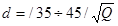
где Q - производительность ваккум-насоса или эжектора, выраженная в м3/мин атмосферного воздуха.
3.132. Скорость воздуха в трубах вакуумных линий принимается равной 10-20 м/с. При длине воздухопровода более 25 м выбранный диаметр следует проверять расчетом сопротивлений (трение по длине и местные потери).
3.133. В качестве воздухопроводов следует применять бесшовные трубы с минимальным количеством фланцев; на прямых участках применять электросварные соединения. Смонтированную систему воздухопроводов следует проверять гидравлическим давлением не менее 2,5 кг/см2. Воздухопроводы монтируются с подъемом в сторону вакуум-котла или вакуум-насоса (уклон 0,002÷0,005).
3.134. Основные потребители сжатого воздуха:
аккумуляторы давления МНУ (зарядка и периодическая подкачка);
расчетное давление 4 МПа, при специальном обосновании 2,5 и 6,4 МПа;
торможение электродвигателей большой мощности (более 50 МВт); расчетное давление до 0,8 МПа;
технические нужды насосной станции (пневматический инструмент, обдувка оборудования, в том числе обмотки электродвигателей и трансформаторов от пыли и грязи, для очистки фильтров и сороудерживающих решеток); расчетное давление 0,3 ÷ 0,8 МПа;
создание полыньи перед затворами плотин и водоприемников; расчетное давление до 0,8 МПа;
пневмогидравлическая аппаратура и другое оборудование с пневмогидроприводом; расчетное давление 0,7-2 МПа;
отжатие воды из камер рабочих колес насоса из условия пуска или для работы электродвигателя в режиме синхронного компенсатора (расчетное давление до 0,8 МПа); для компенсации утечек воздуха из камер рабочих колес насосов в режиме СК рекомендуется применение воздуходувок;
управление пневмоприводами масляных выключателей и разъединителей с рабочим давлением 0,5-1,0 МПа, а также воздушных выключателей с рабочим давлением 2,0; 2,6 и 4 МПа.
Допускается объединение и взаимное резервирование систем с применением автоматических редуцирующих устройств.
3.135. Поддержание давления и контроль за работой компрессорных установок должны быть полностью автоматизированы. Контроль за давлением в системах осуществляется контактными манометрами, присоединенными к соответствующим воздухосборникам. Переключение систем воздуховодов автоматизировать не следует.
3.136. Насосные станции, как правило, необходимо оборудовать двумя компрессорами высокого давления (один резервный) и редукционными клапанами для обеспечения сжатым воздухом потребителей, использующих сжатый воздух меньшего давления.
3.137. Если потребность сжатого воздуха низкого давления более чем в пять раз выше производительности компрессора высокого давления, следует предусматривать специальную компрессорную установку, оборудованную одним или двумя рабочими компрессорами и резервируемую через редукционный клапан компрессором высокого давления.
3.138. На насосных станциях для ремонтных целей следует использовать передвижные компрессоры.
3.139. Производительность компрессоров для зарядки котлов маслонапорных установок назначают по формуле
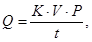
где К = 0,5 ÷ 0,7 - коэффициент заполнения котла МНУ воздухом;
Р - давление в котле МНУ, кг/см2;
t - время зарядки, принимать равным 20-120 мин;
V - емкость воздухосборника.
3.140. Емкость воздухосборников этой системы должна приниматься равной примерно значению минутной производительности работающих компрессоров.
3.141. В системе торможения агрегатов объем воздухосборника должен быть достаточным для осуществления не менее двух циклов торможения всех агрегатов (без включения компрессора), обслуживаемых данным воздухосборником. Расход воздуха на торможение принимается по техническим условиям на поставку электродвигателя. При этом давление в воздухосборнике не должно упасть ниже предела, обеспечивающего надежную работу тормозных устройств.
Использование сжатого воздуха от МНУ для торможения гидроагрегатов не допускается. В системе торможения гидроагрегатов, не соединенной с другими системами, следует предусматривать резервный компрессор.
3.142. Для технических нужд насосной станции производительность компрессоров должна обеспечить одновременную работу расчетного числа пневмоинструментов.
Емкость воздухосборников следует принимать равной не менее V = 1,6∙, где Qк - минутная производительность работающих компрессоров. Резервные компрессоры не предусматриваются. На уникальных насосных станциях, кроме стационарных компрессоров, следует предусматривать передвижной компрессорный агрегат.
3.143. В системе создания полыньи производительность компрессоров должна обеспечить подачу примерно 0,02-0,03 м3/мин воздуха на 1 м длины незамерзающего фронта и 0,2 м3/мин на каждый раз. Емкость воздухосборников этой установки должна равняться значению минутной производительности работающих компрессоров. Независимо от количества работающих компрессоров предусматривается один резервный.
3.144. В системе воздухоснабжения пневмогидравлической аппаратуры следует принимать емкость воздухосборника, которая могла бы обеспечить работу аппаратуры в течение 2-3 ч без включения компрессоров. Питание этой системы рекомендуется осуществлять от системы торможения или от других систем, кроме систем воздушных выключателей. Расход сжатого воздуха 5 ÷ 12 л/ч на каждый пневмогидравлический прибор (датчик).
3.145. Количество компрессоров в системе отжатия воды следует принимать не менее двух, каждый производительностью 70-75 % от полученной по расчету.
3.146. На насосных станциях и подстанциях, где отсутствуют воздушные выключатели, для управления пневмоприводами масляных выключателей и разъединителей предусматривается не менее двух комплектных однокомпрессорных установок, располагаемых вблизи обслуживаемого оборудования.
Для аппаратов, у которых отсутствуют индивидуальные резервуары сжатого воздуха, должны предусматриваться воздухосборники рабочего давления, присоединенные непосредственно к воздухораспределительной сети.
При наличии на насосных станциях и подстанциях воздушных выключателей питание пневмоприводов масляных выключателей и разъединителей следует осуществлять через автоматическое редуцирующее устройство от воздухопроводов, обслуживающих воздушные выключатели.
Для питания пневмоприборов воздушных выключателей с рабочим давлением 2 МПа и номинальной относительной влажностью 50 % применяются компрессоры давлением 4 МПа и более. Емкость воздухосборников при этом должна обеспечить следующие режимы работы:
I режим - покрытие суммарного расхода сжатого воздуха (при неработающих компрессорах) на вентилирование воздушных выключателей и утечки в системе в течение 2 ч;
II режим - восстановление давления воздуха в резервуарах воздушных выключателей при одновременном отключении наибольшего количества выключателей, возможного в результате действия защит и АПВ.
Производительность компрессоров должна обеспечить восстановление давления в воздухосборниках в течение 0,5 ч после двухчасового перерыва в работе при I режиме работы, и в течение 2-2,5 ч при II режиме работы.
Указанные выше условия должны быть обеспечены при следующих давлениях в воздухосборниках: запуск рабочих компрессоров - 3,8 МПа; то же, резервного - 3,7 МПа; остановка рабочих и резервных компрессоров - 4,1 МПа; сигнал понижения давления в воздухосборниках - 3,6 МПа.
Для воздушных выключателей с рабочим давлением 2,6 и 4 МПа и номинальной относительной влажностью 25 % применяются компрессоры с давлением 23 МПа.
3.147. Стационарные автоматизированные компрессорные установки, работающие в прерывистом режиме, а при специальном обосновании и воздухосборники, следует располагать в специальных помещениях. Стены и перекрытия этих помещений должны обладать огнестойкостью 1,5 ч и обеспечивать невозможность их разрушения в случае аварии. В этих помещениях должна поддерживаться температура в пределах, обеспечивающих нормальную работу компрессорного оборудования. В помещениях компрессорных установок и воздухосборников не допускается размешать аппаратуру и оборудование, технологически не связанные с компрессорами. Окна и двери этих помещений должны открываться наружу.
3.148. Воздухосборники, как правило, следует размещать на открытом воздухе, в непосредственной близости к компрессорной установке. Расстояние между воздухосборниками и потребителями следует принимать не более 300 м.
Воздухосборники должны быть защищены от прямых солнечных лучей. В районах с отрицательными температурами на воздухосборниках должны быть предусмотрены электроподогрев днища и спускная труба для сброса конденсата.
С целью более эффективного отделения влаги воздухосборники в количестве шести штук следует соединять последовательно. При большем количестве воздухосборников группы из последовательно соединенных воздухосборников собираются параллельно. В качестве воздухосборников допускается применение труб Ду 500-1600 мм.
3.149. Система воздухопроводов сжатого воздуха для торможения и зарядки котлов МНУ следует выполнять по кольцевой схеме, а для остальных систем - в виде одинарных магистралей с отводами к каждому потребителю. На концевых участках воздуховодов должны быть предусмотрены вентили для периодической продувки и промывки труб.
3.150. Диаметр магистральных воздухопроводов d (мм) определяется по формулам:
а) всасывающие воздухопроводы
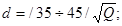
б) напорные воздухопроводы
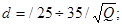
где Q - производительность компрессора, выраженная в м3/мин при атмосферном давлении.
3.151. Воздуховоды значительной длины должны быть проверены расчетом (потери напора по длине и местные).
3.152. Воздухопроводы пневмосистем следует применять из цельнотянутых бесшовных труб, разъемные соединения - на фланцах. На прямых участках труб через 40-50 м следует устанавливать гнутые компенсаторы. В наиболее низких местах следует устанавливать гнутые компенсаторы и водосборники. На воздухопроводах между компрессором и воздухосборником следует устанавливать масловодоотделитель для улавливания масла, уносимого воздухом из компрессора и сбора конденсирующейся из сжатого воздуха влаги. У автоматизированных компрессоров спускной вентиль масловодоотделителя необходимо снабжать дистанционным приводом для периодической продувки и разгрузки компрессора при пуске. Участок воздухопровода между компрессором и ресивером следует собирать на асбестовых прокладках.
3.153. Согласно требованиям Госгортехнадзора СССР воздухосборники и воздуховоды пневмосистем подлежат гидравлическому испытанию (вода температурой от 5 до 40 °С) пробным давлением, величина которого определяется по формуле
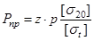
но не менее 0,2 МПа при рабочем давлении Р < 0,5 МПа и не ниже 0,3 МПа при Р ≥ 0,5 МПа;
где z - коэффициент, равный z = 1,5 при P < 0,5 МПа и z = 1,25 - при P ≥ 0,5 МПа;
Р - рабочее давление, МПа;
[σ20] - допускаемое напряжение для материала элемента системы при t = 20 °С;
[σt] - то же, при рабочей температуре.
Время выдержки системы под пробным давлением не менее 10 мин.
3.154. В качестве запорной и регулирующей арматуры необходимо применять вентили и пружинные предохранительные клапаны, диаметры которых должны соответствовать диаметрам воздухопроводов. Редукционные клапаны следует выбирать в зависимости от необходимого перепада давления и пропускной способности. При небольших изменениях давления применяются дроссельные шайбы.
3.155. Напорные линии насосов, как правило, оборудуются затворами (задвижками) и обратными клапанами. Затворы не следует устанавливать на напорных линиях осевых (кроме случаев, оговоренных в п. 3.157) и центробежных насосов, если последние могут быть пущены на опорожненный трубопровод.
Обратные клапаны не следует устанавливать, если допускается опорожнение напорного трубопровода при внезапном отключении электроэнергии, и агрегат допускает реверс.
3.156. В тех случаях, когда пуск насоса осуществляется на обратный клапан, а задвижка на напорной линии выполняет функции ремонтной, обратный клапан следует устанавливать между насосом и задвижкой (см. технические условия заводов-изготовителей центробежных насосов). Если пуск насосов предусмотрен на закрытую задвижку, а обратный клапан предназначен для предотвращения или ограничения во времени обратного вращения ротора насосного агрегата, обратные клапаны следует устанавливать за задвижкой. В тех случаях, когда обратные клапаны являются причиной значительного повышения давления (более 1 МПа), что может служить причиной аварии (затопление здания станции), допускается установка обратных клапанов вне здания станции на индивидуальном или объединенном напорном трубопроводе. В этом случае обратные клапаны могут быть установлены открыто (при наземной прокладке трубопроводов) или в специальных колодцах.
пуск насоса на обратный клапан, если на напорном трубопроводе установлена задвижка, то перед пуском она должна быть полностью открыта;
между насосом и обратным клапаном должен быть участок трубопровода, свободный от воды, объем которого на 20-30 % больше подачи воды за время пуска агрегата;
перед обратным клапаном предусматривать вантуз для впуска и выпуска воздуха.
3.158. На всасывающих линиях насосов рекомендуется устанавливать задвижки Ду ≤1400 мм при Ру 0,25 МПа, если насосы расположены под заливом, а запорные устройства водоприемника (плоские затворы) не обеспечивают необходимого уплотнения.
3.159. На трубопроводах вспомогательных систем следует устанавливать запорную арматуру перед всеми агрегатами (насосы, фильтры, и т.д.), на отводах от магистралей, подводах к унитазам, душам, поливочным и пожарным кранам, а также у основания стояков пожарных и хозяйственных водопроводов, обслуживающих здания высотой более 12 м.
3.160. Запорную арматуру необходимо устанавливать так, чтобы отключение отдельных аварийных участков (или агрегатов) не нарушало работы станции.
3.161. Диаметр запорных устройств (Ду ≤ 400 мм) рекомендуется принимать равным диаметру напорных трубопроводов; при Ду > 400 мм диаметры запорных устройств определять технико-экономическими расчетами.
3.162. В качестве запорных устройств рекомендуется применять: при диаметре запорного устройства Ду ≤ 100 мм - краны и вентили; при 100 ≤ Ду ≤ 1000 мм - задвижки параллельные фланцевые с невыдвижным шпинделем; при Ду ≥ 1200 мм - затворы поворотные, дисковые.
Примечание. Возможность поставки задвижки при наличии затворов поворотных дисковых должна быть согласована со снабжающими организациями.
3.163. Запорная арматура Ду ≥ 400 мм, а также запорная арматура всех диаметров при дистанционном и автоматическом управлении должна быть с электро- или гидроприводом.
Гидропривод применять в том случае, если необходимо предотвратить обратный ток воды через насос, а электроснабжение от двух независимых источников нецелесообразно.
3.164. Для снижения величины гидравлического удара рекомендуется применять запорную арматуру с программным закрытием (открытием). Характер программы должен быть определен расчетом.
3.165. Запорная арматура не предназначена для дросселирования. Отступление от этого правила должно быть согласовано с заводом-изготовителем.
3.166. Водомерные устройства на водоводах насосных станций следует устанавливать в тех случаях, когда это необходимо для автоматизации технологического процесса или организации водоучета.
Для измерения расходов воды на напорных трубопроводах насосных станций могут быть установлены сопла Вентури или индукционные расходомеры, при специальном обосновании - мерные диафрагмы, крыльчатые водомеры на трубах диаметром 15-40 мм и турбинные водомеры на трубах диаметром 50-200 мм.
При установке расходомеров следует учитывать:
требования ТУ или заводских инструкций на монтаж и эксплуатацию расходомеров;
в зависимости от конструкции расходомеры могут быть установлены как на основном трубопроводе, так и на отводе Ду 25-80 мм - по парциальной схеме. Парциальный метод измерения расходов не нормирован метрологическими организациями и не может быть положен в основу для официальных расчетов между организациями;
расходомеры должны быть установлены на прямых участках водоводов, длины которых (от 10∙Ду до 60∙Ду перед расходомером и не менее 5∙Ду после расходомера) назначаются в зависимости от типа расходомера и характера местного сопротивления; обводы с расходомерами могут устанавливаться по парциальной схеме;
расчетные скорости, при которых возможна устойчивая работа индукционных расходомеров, установленных на основных трубопроводах 1,25 ... 10 м/с; то же, на обводных трубах - 1,5 ... 10 м/с;
вторичные приборы ЭМР (усилители) должны быть установлены в сухом помещении не далее чем 100 м от преобразователя электромагнитных расходомеров;
передачу давления от первичного сужающего устройства (диафрагмы, сопла Вентури и т.д.) к дифманометру следует осуществлять при помощи соединительных труб Ду 8 ... 20 мм, длиной не более 50 м. Соединительные трубки устанавливаются с уклоном не менее 1:10 (при Ду 8 ... 12 мм) и не менее 1:20 (Ду 20 мм). Соединительные трубки должны быть армированы вентилями, воздухосборниками, отстойными сосудами с сетками, штуцерами для продувки системы после окончания строительно-монтажных работ, а также после капитальных ремонтов, расходомеры (особенно мерные диафрагмы, сопла Вентури) подлежат тарировке.
3.167. К механическому оборудованию и металлоконструкциям насосных станций отнесены подъемно-транспортное оборудование, решеткоочистительные и сероулавливающие машины, закладные части и подвижные конструкции затворов, сороудерживающих решеток и сеток.
3.168. Механическое оборудование и металлоконструкции, как правило, следует принимать серийного, заводского изготовления или типовые по действующим типовым проектам. Решетки, затворы, их закладные части, козловые краны, нестандартные механизмы изготавливаются по индивидуальным проектам и относятся к нестандартизированному оборудованию.
При разработке индивидуальных проектов металлоконструкций и механического нестандартизированного оборудования необходимо руководствоваться СНиП III-18-75 и СНиП II-23-81.
3.169. Механическое оборудование должно быть защищено от кавитации, вибрации и коррозии. Для этого следует правильно выбирать форму и очертание затворов и их закладных частей, в местах возможного образования вакуума предусматривать аэрационные трубы для подвода воздуха, а также применять соответствующие защитные покрытия.
Увеличение сечения элементов конструкций на коррозию и поражение железобактериями не допускается.
3.170. На насосных станциях должны предусматриваться монтажные площадки и места для хранения затворов, запасных секций решеток, захватных балок, штанг и другого оборудования.
3.171. Сороудерживающие решетки следует выполнять одиночными для установки в пазы или секционными (наборные секции шириной 1000-1500 мм). Решетки устанавливаются вертикально или наклонно (угол наклона 70-80°).
Сороудерживающие решетки, как правило, изготавливают из металлических полос толщиной 4-16 мм и шириной 50-100 мм. В поперечном сечении полосы могут быть плоскими или специального профиля.
3.172. Расстояние между стержнями следует принимать равным: при ручной очистке 0,03 Д (не менее 2 см) - для центробежных насосов и 0,05 Д (не менее 3,5 см) - для осевых насосов, где Д - диаметр рабочего колеса насоса. При машинной очистке решеток расстояние между стержнями может быть увеличено до 7 см.
3.173. При расчете сороудерживающих решеток на прочность величину перепада следует принимать равной 1 м, если нет особых условий, при которых необходимо ее увеличивать.
К числу особых условий относится глубина погружения решетки под уровень воды. При заглублении порога от 10 до 20 м величину расчетного перепада следует принимать в пределах 2,0 м, свыше - 3,0 м.
3.174. На насосных станциях, работающих в зимнее время, верх сороудерживающих решеток следует располагать на 0,5-0,7 м ниже минимального уровня воды. При наличии шуги предусматривают обогрев решеток и пазовых конструкций.
3.175. Очистку сороудерживающих решеток, как правило, следует предусматривать вручную, если она осуществляется не чаще трех раз в сутки при глубине решеток на более 2,5 м, и механизировано - во всех остальных случаях. Для очистки сороудерживающих решеток надлежит предусматривать решеткоочистные устройства (РОУ).
Необходимость резервирования РОУ определяется в каждом отдельном случае и зависит от условий засорения водоема и конструктивных особенностей решетки. Как правило, резервное РОУ устанавливается при невозможности очистки решеток иным способом в случае выхода из строя основного решеткоочистного устройства.
3.176. Затворы для перекрытия отверстий следует выбирать в зависимости от назначения, срока службы и класса сооружений, условий работы и схем маневрирования, а также условий изготовления и транспортировки конструкций к месту монтажа.
3.177. Маневрирование ремонтными затворами, как правило, осуществляют в безнапорном состоянии, сброс гидростатической нагрузки производят с помощью перепускных устройств. Ремонтные затворы выполняют плоскими.
3.178. В воде с большим количеством насосов подвижные части затворов необходимо предохранять от чрезмерного износа, заиления и засорения. Обшивку затвора следует располагать с напорной стороны. При расчете конструктивных элементов затвора необходимо учитывать возможность отложения на них наносов.
3.179. Затворы необходимо устанавливать под нижней кромкой льда. Если это невыполнимо, следует предусматривать устройства для образования постоянных майн и обогрев пазовых конструкций.
3.180. Затворы следует проектировать с минимальным количеством разъемных секций. Необходимо предусматривать в затворах принудительные уплотнения за счет предварительного натяга резины.
3.181. Ремонтные затворы, установленные на входе во всасывающие трубы насосов, следует снабжать приспособлениями для принудительного уплотнения.
3.182. Плоские затворы и решетки должны иметь устройства для направления их движения в пазах: боковые или торцевые направляющие и обратные тележки.
3.183. Для упрощения попадания подвижных конструкций в пазы ось подвеса затвора или сороудерживающей решетки необходимо назначать на одной линии с центром тяжести или вблизи ее.
3.184. При проектировании затворов и решеток минимальный зазор от подвижной части конструкции до ближайших поверхностей в пазу принимать равным:
при ходе затвора до 10 м для поверхностей из монолитного железобетона до 100 мм, для сборного железобетона до 75 мм и 50 мм для металлических облицовок;
при ходе затвора 10-20 м соответственно 200, 100 и 70 мм.
3.185. Закладные части пазов общей высотой до 10 м следует выполнять одинаковыми по высоте. При большей высоте пазов закладные части делятся на рабочую и нерабочую зоны. В пределах рабочей зоны в сооружение должны быть заделаны жесткие металлические закладные части. В пределах нерабочей зоны достаточно выполнить лишь окантовку пазов для направления движения затворов (решетки).
3.186. Уплотняющий контур пазовых конструкций следует выполнять из нержавеющей стали.
3.187. Закладные конструкции пазов при бесштрабном методе установки должны быть достаточно жесткими для восприятия нагрузки от свежеуложенного бетона.
3.188. Подъемно-транспортное оборудование должно выбираться в зависимости от габаритных размеров зданий и массы агрегата по СНиП 2.04.02-84.
3.189. Для маневрирования затворами и сороудерживающими решетками крупных насосных станций, как правило, используются передвижные козловые краны. Когда необходимо одновременно закрыть все затворы, следует применять стационарные подъемные механизмы. Подъемно-транспортное оборудование быстропадающих затворов должно быть оборудовано автоматическим, дистанционным и местным управлением. Механизмы с ручным приводом для маневрирования затворами применять не допускается.
3.190. Грузоподъемность подъемно-транспортного оборудования следует принимать либо по наибольшей массе монтируемого узла с учетом массы траверс и строп, либо по массе подвижной конструкции (затворы или решетки) с учетом сил сопротивления передвижению; в соответствии с ГОСТ выбирается по ряду номинальных грузоподъемностей ближайшая большая.
3.191. Крановое оборудование для их монтажа выбирают по максимальной массе с учетом монтажных приспособлений.
3.192. Установку и испытание подъемно-транспортного оборудования следует производить в соответствии с «Правилами устройства и безопасной эксплуатации грузоподъемных кранов».
Испытание подъемно-транспортного оборудования следует производить следующим образом: краны при грузоподъемности до 20 т, а также захватные приспособления и траверсы - рабочими грузами, свыше 20 т - инвентарными гидродинамометрами, для установки которых следует предусматривать анкера, рассчитанные на усилие, равное 1,25 грузоподъемности испытываемого механизма. Место установки гидродинамометров и способы их закрепления выбираются по согласованию с разработчиками строительной части зданий и сооружений.
3.193. Площадки и лестницы, ведущие в кабину крана, следует располагать в торцах машинного зала.
3.194. Кроме крана в машинном зале насосной станции необходимо предусматривать такелажные приспособления, обеспечивающие механизацию монтажа и ремонта насосов.
3.195. Степень автоматизации технологических процессов в состав контрольно-измерительных приборов (КИП) на насосной станции зависят от ее назначения и требований мелиоративной системы.
3.196. Состав оборудования насосной станции должен обеспечивать программное управление основных насосных агрегатов по командам дежурного оператора (как правило, оросительные насосные станции), автоматического управляющего устройства (как правило, осушительные и насосные станции закрытых систем) или диспетчера с диспетчерского пункта (для телеуправления насосных станции) и защиту основного и вспомогательного оборудования от работы в нерегламентируемых режимах, приводящих к авариям. Отклонение состояния работающего оборудования от нормы должно фиксироваться на щите управления станции. При аварийном состоянии агрегата отключаются автоматически с подачей сигнала.
3.197. На щитах управления необходимо предусматривать сигналы, фиксирующие положение оборудования (включен-отключен).
3.198. Сигнал о неисправности оборудования и устройств следует подавать при:
перегреве подшипников насоса (в тех случаях, когда контроль подшипников насоса предусмотрен его конструкцией);
перегреве основных электродвигателей в тех случаях, если такой контроль предусмотрен конструкцией электродвигателя);
неисправности цепей управления (обрыв, короткое замыкание и т.д.) на насосных станциях любой мощности;
прекращении подачи охлаждающей воды в системы охлаждения и смазки;
аварийном поднятии уровня воды в дренажном колодце или потерне;
ненормальном уровне масла в ваннах электродвигателей;
повышенном засорении сороудерживающих решеток;
понижении или повышении уровня воды сверх нормального в нижнем или верхнем бьефах насосной станции;
снижении давления в воздухосборниках или масловоздушных котлах маслонапорных установок;
засорении фильтров системы технического водоснабжения.
3.199. Автоматическое отключение основных насосных агрегатов необходимо предусматривать при:
аварийном перегреве подшипников насосов или электродвигателей (в тех случаях, когда контроль предусмотрен конструкцией насоса и электродвигателя), а также при прекращении подачи воды на охлаждение или смазку;
разрыве напорного трубопровода;
пожаре в распределительном устройстве, кабельном канале или на трансформаторной подстанции; при пожаре на одном из электродвигателей отключению подлежат только близлежащие агрегаты;
незавершенной остановке одного из агрегатов. В этом случае отключаются все агрегаты, работающие на тот же трубопровод, что и аварийный;
незавершенном пуске агрегатов;
аварийном понижении давления в системе регулирования;
аварийном повышении уровня воды в верхнем бьефе;
срабатывании электрических защит;
затоплении машинного зала подается импульс на отключение всех агрегатов и закрытие всех основных затворов и задвижек;
аварийном засорении сороудерживающих решеток, что может привести к их разрушению или работе агрегатов в аварийном режиме;
снижении уровня воды в нижнем бьефе ниже расчетного.
3.200. Состав контрольно-измерительной аппаратуры следует уточнять в зависимости от установленного оборудования и степени автоматизации технологических процессов насосной станции.
3.201. Вентиляцию и кондиционирование воздуха следует предусматривать для обеспечения санитарно-гигиенических требований к воздуху рабочей зоны согласно ГОСТ 12.1.005-76, а также выполнения требований заводов-изготовителей технологического и электротехнического оборудования по их размещению и эксплуатации ГОСТ 15150-69*.
Проектирование систем вентиляции и кондиционирования воздуха следует вести в соответствии с указаниями СНиП 2.04.05-86.
3.202. Оптимальные и допустимые величины температур, относительной влажности и скорости движения воздуха в рабочей зоне производственных помещений должны соответствовать нормам, указанным в ГОСТ 12.1.005-76. По категориям работ производственные помещения следует подразделять:
I категория (легкая) - помещения щитов управления, диспетчерские, пункты связи и другие;
IIа категория (средней тяжести) - помещение распределительных устройств, кабельные этажи;
IIIб категория (средней тяжести) - помещения насосов, машинные залы, аккумуляторные.
3.203. При специальном обосновании (для диспетчерских пультов управления уникальных насосных станций) необходимо предусматривать оптимальные климатические условия: для легкого режима работы в холодный и переходный периоды года температура 20-23 °С, относительная влажность 60-40 %, скорость движения воздуха не более 0,2 м/с. Для теплого периода года оптимальные параметры воздуха в помещениях: температура 22-25 °С, относительная влажность 60-40 % и скорость движения воздуха 0,2 м/с.
В электромашинных помещениях без постоянных рабочих мест для эксплуатационного персонала максимальный перепад между приточным и удаляемым воздухом не должен превышать 15 °С. При этом температура воздуха в зоне расположения электротехнического оборудования не должна превышать 45 °С.
3.204. В помещениях, где возможно длительное пребывание обслуживающего персонала (в главных пультах управления, кабинетах, комнатах приема пищи, клубах), а также в тех случаях, когда по технологическим нормам недопустимо повышение температуры воздуха выше 33 °С, необходимо предусматривать кондиционирование воздуха.
3.205. В соответствии с требованиями ПУЭ следует предусматривать раздельные системы вентиляции этажей электромашинных и других изолированных помещений. Допускается устройство общей системы вентиляции при наличии управляемых заслонок, позволяющих отсечь подачу воздуха в отдельные помещения в случае возникновения пожара.
В электромашинных помещениях не следует размещать установки для вентиляции смежных пожароопасных помещений (например, масляного хозяйства).
3.206. В местах с запыленным воздухом (более 2 мг/м3) вентиляцию следует выполнять так, чтобы в помещениях поддерживалось избыточное давление величиной 2-3 мм вод. ст.
3.207. Помещения аккумуляторных батарей, в которых производится заряд аккумуляторов при напряжении более 2,3 В на элемент или работающих в режиме постоянного подзаряда, должны быть оборудованы стационарной (или инвентарной) принудительной приточно-вытяжной вентиляцией в соответствии с рекомендациями ПУЭ и СН 245-71.
3.208. В кабельных помещениях и распределительных устройствах 6-10 кВ необходимо предусматривать аварийную вытяжную вентиляцию с выключением электродвигателей вентиляторов вне этих помещений.
3.209. На мелиоративных насосных станциях при специальном обосновании могут быть применены системы комфортного и технологического кондиционирования воздуха. Система комфортного кондиционирования применяется для очистки и охлаждения воздуха в помещениях главного щита управления, диспетчерской и кабинетах; система технологического кондиционирования - для поддержания необходимых метеорологических условий в машинных залах и распределительных устройствах.
3.210. Воздуховоды систем вентиляции, кондиционирования воздуха и воздушного отопления следует проектировать, как правило, круглого сечения.
3.211. Сечения элементов воздуховодов, как правило, определяют по допустимым скоростям: в воздухозаборных жалюзийных решетках 0,7 м/с; в воздуховодах производственных зданий при механическом побуждении до 12 м/с в магистралях и до 6 м/с - в ответвлениях (в общественных и вспомогательных зданиях - соответственно до 8 и 5 м/с), в жалюзийных решетках на выходе в зал до 12 м/с.
3.212. Здания насосных станций, как правило, не отапливаются, за исключением тех станций, в электромашинных помещениях которых следует поддерживать плюсовые температуры:
для сохранности оборудования в соответствии с ТУ на изделия (как правило, помещения с высоковольтным электротехническим оборудованием);
при работе насосной станции круглый год;
при длительном нахождении людей в помещении (более 2 ч);
при поступлении в помещение насосной станции фильтрационных вод;
при невозможности опорожнения наполненного водой оборудования (корпуса насосов, емкости, трубопроводы).
3.213. В отапливаемых производственных помещениях следует поддерживать температуру не ниже 5 °С, а в помещениях, где предполагается длительное присутствие людей, - не ниже 18 °С.
3.214. При наличии в районе расположения насосной станции теплофикационных сетей или других источников централизованного теплоснабжения системы отопления должны присоединяться к ним. Применение электроэнергии для отопления и для подогрева воздуха в системе вентиляции должно быть подтверждено технико-экономическими расчетами и согласовано в установленном порядке.
3.215. Для подогрева воздуха в системах вентиляции и воздушного отопления (в случае использования электроэнергии) следует применять электрокалориферы с закрытыми элементами.
3.216. Для горячего водоснабжения душевых следует предусматривать самостоятельные системы круглогодичного действия.
3.217. Прокладку трубопроводов, выполненных из стальных труб, систем отопления следует предусматривать открытой. Скрытую прокладку разрешается применять только при наличии специального обоснования.
4.1. Распределительные устройства (РУ) для насосных станций I и III категорий надежности электроснабжения следует выполнять с одной несекционированной системой шин.
На насосных станциях с суммарной установленной мощностью насосно-силового оборудования 5 МВт и более РУ, как правило, выполняется с одиночной системой шин, состоящей из двух секций, с разъединителем и выключателем в качестве секционного аппарата. Количество секций более двух может быть увеличено при необходимости ограничения токов короткого замыкания, а также при установке на питающей трансформаторной подстанции (трансформаторов с расщепленными обмотками).
4.2. При наличии масляных выключателей со стороны питания на вводах в РУ насосных станций напряжением 6-10 кВ следует применять разъединители.
4.3. Работа вводов на насосной станции должна предусматриваться раздельно с питанием нагрузки каждой секции шин от своей линии. Пропускная способность каждого ввода напряжением 6-10 кВ должна быть рассчитана для:
насосных станций, относящихся к I и II категориям по надежности электроснабжения - на полную расчетную мощность насосной станции;
остальных насосных станций - исходя из возможностей передачи по одной линии мощности, обеспечивающей работу минимально допустимого количества насосных агрегатов в период максимального водопотребления, но не менее мощности одного питающего трансформатора с учетом его перегрузочной способности.
4.4. Согласующие трансформаторы 6-10 кВ тиристорных возбудителей синхронных электродвигателей следует подключать под один масляный выключатель с электродвигателем.
4.5. На каждой секции шин 6-10 кВ должен быть установлен один трансформатор напряжения для питания цепи измерения, учета электроэнергии, защиты, устройств возбуждения синхронных электродвигателей. Если нагрузка на вторичную обмотку трансформатора напряжения превышает допустимую в требуемом классе точности, на секции устанавливают дополнительные трансформаторы напряжения.
4.6. В силовых цепях электродвигателей напряжением 0,38-0,66 кВ в качестве коммутационных аппаратов должны применяться магнитные пускатели, контакторы и автоматические воздушные выключатели с электромагнитным приводом, в качестве защитных аппаратов - автоматические воздушные выключатели.
4.7. При выборе электродвигателей для привода основных насосов необходимо руководствоваться следующим:
напряжение 0,38 кВ следует применять для электродвигателей мощностью до 250 кВт включительно;
напряжение 0,66 кВ следует применять для электродвигателей мощностью до 400 кВт при наличии соответствующих силовых трансформаторов и коммутационной аппаратуры;
напряжение 6 кВ следует применять во всех случаях, когда требуемые электродвигатели на напряжение 10 кВ не изготавливаются, а также при электроснабжении насосной станции от местных сетей 6 кВ;
напряжение 10 кВ следует применять во всех случаях, когда требуемые электродвигатели изготавливаются на это напряжение.
В тех случаях, когда электродвигатели требуемого напряжения изготавливаются промышленностью, но не предусмотрены условиями заводской комплектации насосов, необходимо согласовать с заводом-поставщиком поставку электродвигателей требуемого напряжения.
Во всех случаях выбор рабочего напряжения электродвигателя должен быть увязан с внешней схемой энергоснабжения.
4.8. Для всех мелиоративных насосных станций электродвигатели для привода основных насосов мощностью до 630 кВт следует принимать асинхронные с короткозамкнутым ротором.
4.9. При подборе электродвигателей необходимо обеспечить запас его мощности по сравнению с требуемой на валу насоса в наиболее тяжелом режиме согласно табл. 1.
Таблица 1
|
2-5 |
5-10 |
10-50 |
50-350 |
350 и более |
|
|
Коэффициент запаса, (Кзап.) |
1,5-1,3 |
1,3-1,15 |
1,15-1,1 |
1,1-1,05 |
1,05 |
4.10. Форма исполнения электродвигателей должна соответствовать условиям окружающей среды. При мощности электродвигателей до 1000 кВт следует выбирать электродвигатели в обдуваемом исполнении с влагостойкой изоляцией. Электродвигатели мощностью свыше 1000 кВт принимаются закрытого исполнения с принудительной вентиляцией.
В случаях эксплуатации оборудования в температурных условиях, отличающихся от паспортных для данного типа электродвигателя, необходимо подбирать электродвигатель с запасом мощности, учитывая требования табл. 2.
Таблица 2
|
Температурный коэффициент |
||||
|
температура, °С |
||||
|
40 |
45 |
50 |
55 |
|
|
Асинхронный |
0,95 |
0,90 |
0,85 |
- |
|
Асинхронный типа 4а |
- |
0,95 |
0,90 |
0,85 |
|
Синхронный |
0,95 |
0,875 |
0,75 |
- |
Для окончательного решения вопроса о применении типа электродвигателя следует принимать во внимание его заводскую комплектацию с насосом.
4.11. Присоединение трансформаторов собственных нужд мощностью 400 кВА и более со стороны 6-10 кВ должно выполняться через выключатели, трансформаторов до 400 кВА - через разъединители и предохранители. Подключение трансформаторов собственных нужд также как и сборок собственных нужд насосных станций с низковольтными электродвигателями главных насосов рекомендуется осуществлять до выключателя ввода. Допускается присоединение трансформаторов собственных нужд к шинам РУ напряжением 6-10 кВ.
На трансформаторных подстанциях при насосных станциях с высшим напряжением 35 кВ трансформаторы собственных нужд напряжением 35/0,4 кВ присоединяются через разъединитель и предохранители к питающей воздушной линии электропередач или к шинам напряжением 35 кВ.
4.12. На стороне низшего напряжения трансформаторы собственных нужд должны работать раздельно (при установке двух трансформаторов собственных нужд) - каждый на свою секцию шин. Для объединения секций шин предусматривается автоматический выключатель.
Для насосных станций I и II категорий надежности электроснабжения, а также для крупных и средних насосных станций с большим количеством потребителей собственных нужд на секционной связи следует предусматривать автоматический ввод резерва (АВР).
4.13. Мощность каждого трансформатора собственных нужд при наличии АВР на секционной связи должна выбираться из условия обеспечения 100-процентной нагрузки потребителей собственных нужд насосной станции. В остальных случаях мощность трансформатора выбирается в соответствии с нагрузками в разных режимах работы насосной станции с учетом перегрузочной способности трансформаторов.
4.14. Питание потребителей собственных нужд следует выполнять:
по двухступенчатой схеме (главный распределительный щит и силовые распределительные сборки, размещаемые в соответствующих помещениях или в центре нагрузок потребителей собственных нужд). При этом питание потребителей агрегатных и общественных нужд может осуществляться от самостоятельных распределительных сборок. Указанная схема должна применяться для крупных и средних насосных станций;
по одноступенчатой схеме (питание всех потребителей собственных нужд осуществляется от главного распределительного щита). Такая схема предусматривается на малых, в том числе подкачивающих насосных станциях.
4.15. В силовых цепях электродвигателей собственных нужд в качестве коммутационных аппаратов следует применять магнитные пускатели или контакторы, в качестве защитных аппаратов - автоматические воздушные выключатели. Применение плавких предохранителей допускается в неответственных целях собственных нужд, где отсутствует двигательная нагрузка (освещение, сварка и т.п.).
5.1. В проекте насосных станций должен быть разработан раздел «Организация эксплуатации насосных станций», в котором рассматриваются следующие вопросы:
увязка работы насосных станций и водопроводящих сооружений мелиоративной системы (каскада);
управление насосными станциями;
эксплуатация оборудования, зданий и сооружений;
ремонт оборудования, зданий и сооружений;
состав, размещение и краткая характеристика ремонтно-эксплуатационной базы (мастерские, лаборатории, склады, автохозяйства и т.д.);
объем диспетчерской и административно-хозяйственной телефонной связи;
соображения по оснащению ремонтных мастерских и складов станками и специальными приспособлениями (с учетом мастерских и баз централизованного ремонта и обслуживания);
перечень механизмов для обслуживания оборудования, механизмов и сооружений;
компоновки открытых площадок, навесов и помещений для хранения и ремонта крупногабаритных конструкций, механизмов и материалов;
конструкции специальных приспособлений для ремонтных работ, в том числе для наплавки поверхностей рабочих колес насосных и проточного тракта, подверженных кавитации (если эти конструкции нецелесообразно отправлять на заводы);
соображения по количеству и составу запасных частей для замены изношенных заранее отремонтированными узлами (гасительные камеры выключателей, охладители, рабочие колеса насосов, запорная аппаратура, контрольно-измерительные приборы и т.д.);
перечень и размеры культурно-бытовых предприятий и помещений: буфеты, прачечные спецодежды, комнаты для технической учебы и общественных организаций и т.д.
состав и численность административно-управленческого, оперативного и производственного персонала, в том числе состав и оснащенность выездных ремонтных бригад. Расселение эксплуатационного персонала.
5.2. На стадии рабочей документации (рабочего проекта) по заданию Заказчика следует составлять оперативные инструкции по эксплуатации насосных станций.
5.3. Организационная структура управления производством на насосных станциях должна обеспечить:
надежную, бесперебойную и экономичную работу насосной станции;
безопасность работы обслуживающего персонала;
своевременное обслуживание насосных станций, а также надежное и бесперебойное оперативное управление с наименьшей численностью эксплуатационного персонала;
четкое разделение ответственности всех подразделений за безаварийную работу, высокое качество ремонтов и экономичность работы закрепленных за подразделением участков и насосной станции в целом.
5.4. Для повышения технико-экономической эффективности и надежности эксплуатации насосных станций, особенно станций многоступенчатых каскадов, необходимо организовать централизованные службы по ремонту, эксплуатационному обслуживанию и административному управлению. Количество насосных станций, объединенных в единую группу, следует определять расчетом в зависимости от местных условий. Как правило, насосные станции, объединенные в единую группу, должны быть связаны единым технологическим процессом (например, каскад станций оросительной системы) и иметь между собой удобные дороги и линии связи.
5.5. Степень централизации плановых текущих ремонтов и эксплуатационного обслуживания оборудования и сооружений отдельных насосных станций, включенных в объединение (группу насосных станций) определяется возможностью полной загрузки и целесообразного использования квалифицированных работников по их специальности.
5.6. В целях снижения численности производственно-ремонтного персонала насосной станции и центральных ремонтных баз в качестве основной рекомендуется бесцеховая структура службы эксплуатации.
5.7. Оперативное управление работой оросительных насосных станций, как правило, должно осуществляться диспетчером мелиоративной системы через дежурного (или начальника смены) насосной станции или непосредственно с использованием телемеханических устройств.
5.8. Оперативное управление насосными станциями многоступенчатого каскада, как правило, осуществляется через начальника смены базисной насосной станции.
5.9. Оперативное управление насосными станциями, подающими воду непосредственно на поля, следует осуществлять дежурным персоналом станции по команде службы землепользователей.
5.10. Осушительные насосные станции и насосные станции, подающие воду в закрытую сеть, как правило, должны работать в автоматическом режиме без вмешательства человека.
5.11. Внутристанционное оперативное управление работой основного и вспомогательного оборудования, всех сооружений и устройств, обеспечивающих бесперебойную подачу воды потребителю, осуществляется оперативным персоналом под руководством начальника смены, который несет ответственность за правильную эксплуатацию работающего оборудования и сооружений в своей смене и за своевременность и правильность мероприятий по предупреждению и ликвидации аварий.
5.12. Для мелких, средних и крупных насосных станций, оборудованных горизонтальными насосами (типа К, Д, ЦН), следует рассматривать целесообразность организации их работы с дежурством оперативного персонала на дому. Основными условиями такой организации эксплуатации насосной станции являются:
простая технология пуска, контроля работы и остановки основных насосных агрегатов;
наличие средств автоматизации процессов управления основным и вспомогательным оборудованием и режимами работы насосной станции, а также устройства сигнализации дежурному на дому.
5.13. Штаты насосных станций, как правило, состоят из административно-хозяйственного (управление), дежурного (оперативного и оперативно-ремонтного) и производственно-ремонтного персонала.
Административно-хозяйственный персонал насосных станций, как правило, входит в состав управления оросительной системы (УОС), и его численность определяется в соответствии с нормативными документами Минводхоза СССР (в зависимости от количества насосных станций в системе, их крупности и величины напора).
5.14. Численность дежурного персонала насосных станций следует устанавливать в соответствии с нормативными документами Минводхоза СССР в зависимости от подачи, сложности водозабора, напряжения основных электродвигателей, наличия напорного трубопровода и степени автоматизации технологических процессов.
5.15. На всех без исключения насосных станциях необходимо предусматривать дежурный персонал на период освоения и наладки, а также для обслуживания технологических процессов и сооружений, автоматизация которых в настоящее время не освоена, на плавучих и передвижных насосных станциях.
5.16. Оперативный персонал станций должен быть использован для ремонтных работ, проводимых в межполивной период.
5.17. Штат производственно-ремонтных рабочих следует определять исходя из стоимости текущих и капитальных ремонтов и годовой выработки одного работающего, величину которой следует принимать по данным территориальных ремонтно-эксплуатационных организаций.
Если часть ремонтных работ будет передана специализированным организациям, количество рабочих должно быть откорректировано.
5.18. В расчете численности эксплуатационного персонала проектируемых насосных станций должны быть учтены задания (или прогнозы) по росту производительности труда как на период ввода насосных станций в эксплуатацию, так и в процессе эксплуатации.
5.19. Периодичность капитальных и текущих ремонтов оборудования следует принимать в соответствии с инструкциями заводов-изготовителей и практикой эксплуатации в аналогичных условиях.
5.20. Как правило, капитальные ремонты следует проводить в межполивной период.
5.21. В качестве основной формы ведения работ по капитальному ремонту насосных станций следует рассматривать возможность и целесообразность использования центральных ремонтных баз системы, специализированных предприятий, мастерских и лабораторий Минводхоза СССР, а также близ расположенных промышленных предприятий.
5.22. При отсутствии или недостаточной мощности специализированных ремонтных мастерских (баз) необходимо рассматривать и решать вопрос о долевом участии мелиоративной системы в расширении существующих или в строительстве новых ремонтных предприятий.
5.23. Ремонтные базы следует располагать при УОС или на одной из насосных станций системы. Как правило, такие базы должны рассчитываться для выполнения наиболее распространенных видов ремонтов: ремонт сооружений и металлоконструкций, наплавка рабочих колес, ремонты подшипников и обмоток небольших электродвигателей, относительно простых датчиков и электроаппаратуры. Капитальные ремонты, связанные с применением уникальных станков или требующие высококвалифицированных кадров, следует выполнять на специализированных базах Минводхоза СССР или на заводах-изготовителях оборудования.
5.24. В целях повышения качества работ и сокращения сроков ремонта оборудования в проектах следует предусматривать поузловой метод капитального ремонта с заменой поврежденных узлов и деталей заранее отремонтированными (гасительные камеры выключателей, рабочие колеса насосов, охладители и т.д.). В проектах насосных станций и технических условиях на поставку оборудования должно быть предусмотрено соответствующее резервное оборудование и запасные детали.
5.25. Капитальный ремонт гидротехнических сооружений в проектах организации эксплуатации следует предусматривать, как правило, выборочным способом с равномерным распределением работ на длительный период времени.
5.26. В проекте насосной станции должен быть дан перечень средств, обеспечивающих достаточный уровень механизации ремонтных работ и эксплуатационного обслуживания оборудования, сооружений и зданий, а также проектные решения по подводке электроэнергии и сжатого воздуха к рабочим местам.
5.27. Для обеспечения удобного перемещения грузов и персонала на территории и в производственных помещениях насосной станции должна быть разработана общестанционная транспортная схема, предусматривающая устройство транспортных путей между участками ремонтных работ, ремонтными мастерскими и складами с приобретением соответствующих средств горизонтального и вертикального транспорта.
5.28. Должна быть предусмотрена возможность проведения подводно-технических работ на гидротехнических сооружениях. Работы должны выполняться специализированными организациями.
5.29. На насосных станциях, как правило, металлообрабатывающих станков предусматривать не следует, но каждая станция должна быть обеспечена необходимым ручным инструментом, верстками и приспособлениями для монтажа и демонтажа оборудования.
5.30. Ремонты оборудования и механизмов насосной станции, как правило, должны выполняться разъездными ремонтными бригадами с привлечением обслуживающего персонала насосной станции. Для проведения ремонтов на площадках узла сооружений насосных станций следует предусматривать места для размещения передвижной ремонтной мастерской (станков) и ремонтных рабочих.
5.31. В составе ремонтных мастерских могут быть предусмотрены (полностью или частично): механическая, электротехническая, слесарная, столярная и авторемонтная мастерские, лаборатория для ремонта средств управления (аппаратура автоматики, выполненная на базе электронной техники и точной механики), площадка для ремонта гидротехнических затворов, электрогазосварочная, кузница, бетонно-растворный узел, краскозаготовительная и др.
5.32. Площади механических мастерских, насосных станций, где капитальный ремонт выполняется собственными силами, следует принимать согласно следующим рекомендациям:
при единичной подаче насосов более 1 м3/с - 25 м2
то же, для насосов типа ОПВ подачей до 3 м3/с - 30 м2
то же, 3,01 ... 15 м3/с - 45 м2
то же, более 15,01 м3/с - 60 м2
то же, для насосов типа «В» подачей до 3 м3/с - 30 м2
то же, 3,01 ... 15,00 м3/с - 60 м2
для насосов всех марок мощностью 25 ... 50 МВт - 140 м2
то же, мощностью 50 ... 160 МВт - 170 м2
Примечания. 1. Площадь механической мастерской должна быть уточнена после выбора и расстановки станков.
2. С целью лучшего использования металлообрабатывающие станки (токарно-винторезные, строгальные, фрезерные) рекомендуется размещать только в центральных ремонтных мастерских.
5.33. Механические мастерские могут быть размешены в зданиях насосных станций, на монтажной площадке, пристройке к зданию станции или в отдельном помещении на отметке монтажной площадки.
К мастерской должен быть предусмотрен подъезд внутристанционного транспорта. Мастерская должна быть оборудована кран-балкой грузоподъемностью от 0,5 до 3,2 т.
На крупных многоагрегатных насосных станциях следует предусматривать площадки для хранения профильного и листового металла.
5.34. Площадки для ремонта затворов, сороудерживающих решеток и нанесения антикоррозийных покрытий должны быть размещены в местах, удобных для подачи затворов и решеток, перестановки их во время ремонта и уборки отходов после очистки. На этих площадках следует предусматривать необходимое оборудование и приспособления для механизированной очистки и антикоррозийных покрытий затворов, для вулканизации уплотняющей резины и для ремонта металлоконструкций. На месте установки ремонтируемого затвора должна быть устроена постоянная конструкция, с которой могут производиться ремонтные и окрасочные работы по всей поверхности затвора.
В тех случаях, когда антикоррозийное покрытие решеток и затворов не может быть выполнено в период времени с положительной температурой воздуха, для выполнения этих работ следует предусматривать закрытые отапливаемые помещения.
5.35. Электротехническая мастерская для производства слесарных, обмоточных и других работ, необходимых при ремонте и эксплуатации электротехнического оборудования, должна быть оснащена верстаками, стендами, сверлильными и гибочными станками, специальными приспособлениями для производства работ в мастерской и непосредственно у ремонтируемого оборудования. Площадь помещения электротехнической мастерской определяется при конкретном проектировании.
5.36. Мастерские для ремонта аппаратуры автоматики, релейной защиты, электрических измерений, аппаратуры измерений и контроля водного режима и гидротехнических сооружений на мелиоративных насосных станциях, как правило, предусматривать не следует.
5.37. Автогаражи и мастерские для технического обслуживания и капитального ремонта автотранспорта должны предусматриваться при центральной ремонтной базе мелиоративной системы.
5.38. Для проведения плановых ремонтных работ по зданию и гидротехническим сооружениям насосной станции следует привлекать специализированные строительные организации. Если это решение невыполнимо, при центральной ремонтной базе должны быть предусмотрены столярная мастерская и бетонорастворный узел, состав оборудования которых обосновывается расчетом.
5.39. Объем бытовых помещений определяется штатным расписанием насосной станции.
Для привлекаемого ремонтного персонала в составе бытовых помещений предусматриваются дополнительные гардеробные, душевые и другие помещения. Бытовые помещения целесообразно размещать в пределах здании насосных станций и вспомогательных помещений.
5.40. Проектирование специальных помещений для стирки и химической чистки рабочей одежды допускается только в тех случаях, когда характер загрязнения исключает возможность использования общих прачечных.
5.41. Столовые, буфеты и комнаты приема пищи целесообразно размещать на первых этажах служебно-производственного или других вспомогательных зданий.
5.42. Здравпункты на насосных станциях предусматривать в соответствии со СНиП II-92-76. При значительном удалении от населенных пунктов здравпункты по согласованию с органами здравоохранения предусматриваются независимо от численности работающих.
5.43. Служебные помещения для персонала управления, помещения для учебных занятий, кабинета по технике безопасности, общественных организаций, зала собраний, кабинета политического просвещения и комнаты отдыха рассчитываются в соответствии со СНиП II-92.
5.44. При управлениях насосными станциями следует предусматривать соответствующие помещения для технической библиотеки и архива.
5.45. На небольших станциях, оборудованных насосами типа К, Д и ЦЕ, как правило, предусматриваются складские помещения площадью 10-12 м2.
На крупных насосных станциях, оборудованных вертикальными насосами, следует предусматривать склады, в составе которых должны быть отапливаемые помещения для хранения приборов и инструментов, навесы для хранения металла, металлоизделий и стройматериалов, а также склады горючих и смазочных материалов.
6.1. Основные расчетные положения прочности и устойчивости гидротехнических сооружений и их оснований принимать согласно указаниям СНиП 2.02.02-85, СНиП 2.06.01-86 и СНиП 2.06.08-87.
6.2. Для обоснования технических решений по сооружениям насосных станций должны быть выполнены следующие виды расчетов:
гидравлические, в том числе определение параметров гидравлического удара в трубопроводах и волн в отводящих и подводящих каналах при пуске или остановке насосов;
переходных процессов, включая пуск и остановку насосных агрегатов (за исключением агрегатов, центробежные насосы которых имеют на напорных линиях обратные клапаны и пускаются на закрытую задвижку или на заполненный водой трубопровод);
расчеты на прочность и устойчивость производственных зданий, гидротехнических сооружений и их оснований;
водноэнергетические расчеты (определение напоров, подач, объемов перекачиваемой воды и потребление энергии);
технико-экономические расчеты, обосновывающие технологические решения как по отдельным сооружениям, так и по узлу в целом;
основные показатели.
6.3. Конструкции гидротехнических сооружений насосных станций, их габариты, строительные материалы и степень армирования железобетонных элементов, следует обосновывать технико-экономическими расчетами с учетом требований СНиП 2.06.08-86, СНиП 2.03.01-84 и ТП 101-81*.
6.4. Железобетонные конструкции, подверженные давлению воды, должны проверяться на раскрытие трещин.
6.5. Марку бетона гидротехнических сооружений следует устанавливать в зависимости от напряженного состояния конструкций, величины градиента напора, а также продолжительности периода с отрицательными температурами. Как правило, для строительства гидротехнических сооружений принимать бетон класса В15 (М200) при водонепроницаемости W 4 или 6. В качестве арматуры - сталь класса АII и АIII (рабочая арматура), а также сталь класса А-1 (распределительная арматура). При специальном обосновании допускается применение арматуры класса А IV и В-1.
6.6. Арматуру железобетонных элементов сооружений следует проектировать в виде армоконструкции, по возможности, более крупного размера. Габариты и вес армоконструкций необходимо увязывать с грузоподъемностью подъемно-транспортных средств, используемых при изготовлении, транспортировке и монтаже арматуры.
6.7. Для изготовления перекрытий под монтажные площадки и междуэтажных перекрытий в зданиях насосных станций заглубленного и блочного типов необходимо применять сборные и сборномонолитные конструкции (армофермы с омоноличенным нижним поясом).
6.8. Антикоррозийная защита строительных конструкций должна предусматриваться в соответствии со СНиП 2.03.11-85.
Компоновка сооружений должна обеспечивать возможность нанесения и периодического возобновления антикоррозийной защиты. В случае невозможности выполнения этого требования тип и конструкции антикоррозийной защиты должны обеспечить необходимую долговечность сооружения без ремонтов.
6.9. Увеличение сечений элементов конструкций, в том числе металлоконструкций, на коррозию и поражение железобактериями не допускается.
6.10. Конструкции сооружений и их основания следует рассчитывать на силовые воздействия по методу предельных состояний, подразделяющихся на две группы:
первую - полная непригодность в эксплуатации вследствие: обшей потери устойчивости формы, потери устойчивости положения (сдвиг, опрокидывание, всплывание, поворот); хрупкого, вязкого, усталостного или иного характера разрушений; качественного изменения конфигурации; резонансных колебаний; текучести материалов, сдвигов в соединениях, ползучести и чрезмерного раскрытия трещин;
вторую - непригодность к нормальной эксплуатации вследствие появления недопустимых перемещений (прогибов, осадок, углов поворотов); колебаний, трещин и т.д.
Примечания. 1. Расчет обшей устойчивости против опрокидывания, как правило, следует выполнять для сооружений на скальных основаниях.
2. Величину деформаций основания необходимо определять для сооружений:
на глинистых основаниях - от всех нагрузок (без учета коэффициентов перегрузки);
на крупнообломочных и песчаных - только от временных нагрузок эксплуатационного периода.
6.11. Расчет гидротехнических сооружений, их оснований и отдельных элементов на прочность и устойчивость должны производиться с учетом возможных неблагоприятных сочетаний нагрузок эксплуатационного и строительного периодов с учетом последовательности возведения и загружения сооружения (собственный вес и внешние воздействия).
При этом необходимо предусматривать такую последовательность возведения сооружения и его отдельных элементов, которая исключила бы ухудшение напряженно-деформированного состояния их в строительный период (по сравнению с эксплуатационным) и не требовала бы дополнительного расхода строительных материалов на обеспечение несущей способности конструкции и оснований.
6.12. Расчеты на прочность и устойчивость гидротехнических сооружений III и IV классов, а также предварительные расчеты сооружений I и II классов должны выполняться, как правило, упрощенными методами строительной механики.
Расчеты основных сооружений I и II классов должны выполняться методами теории упругости (на скальных основаниях) или с учетом пространственной работы фундаментных плит и других несущих элементов конструкций (на нескальных основаниях).
6.13. В процессе проектирования гидротехнических сооружений должна быть проверена устойчивость сооружений на сдвиг, опрокидывание и на всплывание.
На сдвиг должны быть проверены все гидротехнические сооружения при наличии сдвигающей силы, в том числе при сейсмическом воздействии, а также при наклоне подошвы сооружения, набухании или неравномерной просадке нескального основания (при изменении пространственного положения подошвы сооружений).
На опрокидывание должны быть проверены все гидротехнические сооружения, особенно высокие сооружения на скальном основании, при наличии опрокидывающей силы, в том числе при сейсмическом воздействии.
На всплывание должны быть проверены полузаглубленные и блочные здания насосных станций, водоприемные и сбросные сооружения, колодцы, доки и другие сооружения, фундаменты которых расположены ниже уровня воды.
6.14. При проектировании гидротехнических сооружений насосных станций необходимо, как правило, рассматривать следующие расчетные случаи:
в строительный период:
расчет прочности (при необходимости и устойчивости) каждого яруса бетонирования на основное сочетание нагрузок (первый ярус бетонирования рассчитывается на воздействие собственного веса и веса свежеуложенного бетона второго яруса, укладываемого поблочно). При этом в качестве расчетных нагрузок следует принимать собственный вес ранее уложенных конструкций плюс вес свежеуложенного бетона последующего яруса и, при необходимости, массу бетоноукладочных механизмов. В проекте должны быть указаны расчетные схемы и порядок укладки бетона;
расчет устойчивости и прочности сооружения, законченного строительством, с учетом всех видов засыпок и реальных уровней грунтовых вод со стороны основания и обратных засыпок, но без затопления аванкамеры. Гидротехническое сооружение в данном случае рассчитывается только на основное сочетание нагрузок;
в эксплуатационный период:
расчет устойчивости и прочности гидротехнических сооружений при незаконченном строительстве. Минимальный объем строительно-монтажных работ, при котором возможна эксплуатация сооружения по временной схеме, определяется проектом (обычно объем строительно-монтажных работ диктуется уровнем воды в источнике и конструкцией основного оборудования). Расчеты следует выполнять для основного сочетания нагрузок, если продолжительность временной эксплуатации не превышает одного года (при большей продолжительности расчет вести как для постоянной эксплуатации);
расчет устойчивости и прочности гидротехнических сооружений, законченных строительством. Расчеты сооружений мелких и средних насосных станций (обычно IV класса) необходимо выполнять на основное сочетание нагрузок; сооружения крупных насосных станций, а также сооружения I, II и II классов - рассчитывать на основные и особые сочетания нагрузок;
в ремонтный период:
расчет устойчивости и прочности сооружений, расположенных ниже уровня воды, при частично или полностью отключенных секциях (опорожнены водоприемные камеры и всасывающие трубы насосов, частично снята обратная засыпка и пригрузка, частично или полностью отключены дренажные устройства и т.д.).
Рекомендуемые схемы производства ремонтных работ должны быть предусмотрены в проектах гидротехнических сооружений.
6.15. Напряженное состояние в каждом сечении конструкции определяется суммой напряжений, полученных из расчетов на общую и местную прочность.
6.16. Температурные и влажностные воздействия на бетонные и железобетонные конструкции сооружений необходимо учитывать в следующих случаях:
при расчете конструкций, свобода перемещений которых обеспечена в любых случаях;
при расчете несущей способности статически неопределимых железобетонных конструкций;
при расчете напорных элементов, находящихся в зоне переменного уровня воды и подвергающихся периодическому замораживанию и оттаиванию, а также элементов, к которым предъявлено требование водонепроницаемости (расчет раскрытия трещин);
при определении деформаций и перемещений элементов сооружений для назначения конструкций температурно-усадочных швов и противофильтрационных уплотнений.
6.17. С целью снижения влияния объемных деформаций на напряженное состояние сооружения необходимо предусматривать конструктивные и технологические мероприятия, к которым относятся:
разрезка сооружения постоянными и временными швами;
применение теплоизоляции на наружных бетонных поверхностях, особенно в зонах переменного уровня воды;
применение низкотермичных марок цемента, уменьшение расхода цемента за счет использования пластифицирующих добавок;
регулирование температурного и влажностного режимов поверхностей бетонных массивов, регулирование температуры бетонной смеси, повышение однородности бетона;
замыкание статически неопределенных конструкций, а также омоноличивание массивных конструкций при температурах бетона, близких к его минимальным эксплуатационным температурам.
6.18. Расчетная схема сооружения должна отвечать следующим основным требованиям:
отражать с целесообразной степенью точности действительные условия работы сооружения;
упрощения и допущения, вводимые в расчетную схему, не должны искажать действительных величин несущей способности и деформаций, поскольку занижение расчетных величин может вести к разрушению сооружения, а завышение - к неоправданно высоким коэффициентам запаса;
учитывать последовательность возведения сооружения и его загружения, если это существенно отражается на напряженном состоянии основания и возводимых конструкций.
Расчетные схемы необходимо составлять таким образом, чтобы была возможность использовать ЭВМ. При отсутствии надежных теоретических методов расчета или проверенных ранее аналогичных решений для сооружений I и II классов следует выполнять специальные теоретические и экспериментальные (модельные и натурные) исследования напряженного состояния сооружения.
6.19. Расчетную схему следует приводить к стержневой системе, как правило, балочной, рамной или к плитам с различными схемами опирания. Расчет таких схем следует проводить методами строительной механики.
6.20. При расчете гидротехнических сооружений на общую прочность расчетная схема должна быть принята в зависимости от показателя гибкости t:
при t < 1 сооружение с достаточной степенью точности может быть рассчитано как абсолютно жесткая балка или полоса;
при 1 ≤ t ≤ 10 сооружение рассчитывается как короткая полоса, имеющая конечную жесткость;
при t > 10 сооружение с достаточной степенью точности может быть рассчитано как бесконечно длинная полоса.
При этом ширина полосы может быть принята равной:
1 м, если сечение плиты и нагрузки по ширине практически неизменно;
ширине агрегатного блока (секции);
полной ширине сооружения, если нельзя выделить отдельные полосы с одинаковыми нагрузками и сечениями.
6.21. Нагрузки и воздействия на гидротехнические сооружения насосных станций, их классификация (постоянные, временные длительного действия, то же кратковременные и особые), а также коэффициенты перегрузок следует принимать в соответствии со следующими главами СНиП:
«Гидротехнические сооружения» - СНиП 2.06.01-86;
«Нагрузки и воздействия на гидротехнические сооружения волновые, ледовые и от судов» - СНиП 2.06.04-82;
«Нагрузки и воздействия» - СНиП 2.01.07-85;
«Основная гидротехнических сооружений» - СНиП 2.02.02-85;
«Строительная климатология и геофизика» - СНиП 2.01.01-82;
«Определение расчетных гидрологических характеристик» - СНиП 2.01.14-83;
«Фундаменты машин с динамическими нагрузками» - СНиП II.19.79;
«Основания зданий и сооружений» - СНиП 2.02.01-83;
«Строительство в сейсмических районах» - СНиП II-7-81;
«Бетонные и железобетонные конструкции гидротехнических сооружений» - СНиП 2.06.08-87;
«Подпорные стены, проходные шлюзы, рыбопропускные и рыбозащитные сооружения» - СНиП 11.55.79.
6.22. При выборе расчетных схем и методики расчета гидротехнических сооружений, определении расчетных нагрузок и их сочетаний следует учитывать все возможные реальные случаи работы сооружений, которые могут возникнуть во время строительства и всего срока эксплуатации проектируемого сооружения. При этом строительные конструкции сооружения должны обеспечить надлежащую прочность и устойчивость сооружения при поярусном возведении протяженных (длинных) сооружений, возможность эксплуатации при незавершенном строительстве, изменение уровенного режима поверхностных и грунтовых вод в процессе эксплуатации, возможность отказа дренажных устройств и т.д.
6.23. Расчет на прочность и устойчивость сооружений IV класса разрешается выполнять только на основное сочетание нагрузок.
6.24. Учет динамических нагрузок от оборудования в сочетании с другими нагрузками устанавливается СНиП II-19-79 по проектированию фундаментов и несущих конструкций зданий и сооружений под машины с динамическими нагрузками.
6.25. Одними из основных нагрузок, определяющих напряженное состояние гидротехнического сооружения, являются контактные напряжения.
Для сооружений III и IV классов на скальных основаниях контактные напряжения следует определять по формулам внецентренного сжатия.
При определении контактных напряжений для сооружений на нескальных основаниях следует учитывать их показатель гибкости и модуль деформации основания.
6.26. Рекомендации по определению нормальных контактных напряжений:
для сооружений на скальных основаниях и для жестких сооружений с плоской подошвой на однородных нескальных основаниях, сложенных несвязанными грунтами с относительной плотностью Д < 0,5 - по формулам внецентренного сжатия;
для жестких сооружений при относительной плотности грунтов основания Д > 0,5 и плоском основании, а также для сооружений, имеющих подошву ломаного очертания, при любой плотности грунтов - по формулам внецентренного сжатия и по методу теории упругости с условным ограничением глубины сжимаемого слоя до 0,3 В для песчаных грунтов и 0,7 В - для глинистых грунтов. Для сооружений III и IV классов, возводимых на несвязных грунтах, и IV класса - на связных грунтах, нормальные контактные напряжения допускается определять только по формулам внецентренного сжатия.
6.27. При определении контактных напряжений с учетом гибкости сооружения допускается применять метод коэффициента постели и метод теории упругости с условным ограничением глубины сжимаемой толщи. При расчете сложных пространственных сооружений (здания насосных станций, водоприемники и т.д.) вместо решения пространственной задачи следует использовать решение плоской задачи, рассматривая независимо два взаимно перпендикулярных направления.
6.28. Боковое давление грунта следует определять в зависимости от условий работы конструкции и вида ее предельного состояния:
при расчетах устойчивости - принимая грунт в состоянии предельного равновесия (давление грунта передается на расчетную поверхность);
при расчетах прочности, перемещений и деформаций - принимая грунт в допредельном состоянии (давление передается непосредственно на поверхность контакта грунта с сооружением).
6.29. Предельное значение бокового давления грунта, соответствующее стадии образования поверхности обрушения (активное давление) или поверхности выпора (пассивное давление), следует, как правило, определять методом предельного равновесия с учетом трения грунта по расчетной поверхности и сцепления.
6.30. Боковое давление грунта, находящееся в допредельном напряженном состоянии следует, как правило, определять как сумму составляющих:
бокового давления в состоянии покоя от собственного веса грунта и нагрузок на его поверхность;
дополнительного реактивного давления при перемещении контактной поверхности в сторону грунта.
6.31. При расчете гидротехнических сооружений IV класса, а также при предварительных расчетах сооружений I, II и III классов допускается пользоваться упрошенными формулами и графиками.
6.32. Волновые нагрузки следует учитывать в расчетах устойчивости и прочности, а также для определения верха сооружений, расположенных на открытых водоемах, а также на реках и каналах, расчетный расход которых превышает 100 м3/с.
6.33. Расчетные нагрузки на перекрытия машинных залов, монтажных площадок, служебных помещений и мостиков следует определять на основании рационально запроектированных схем монтажа и раскладки монтируемого оборудования. Перекрытие монтажных площадок должно быть проверено на въезд транспортных средств (автомашины, трейлеры), если в здании станции установлено оборудование единичным весом более 0,5 т.
6.34. При расчете опорных конструкций агрегатов вертикального исполнения кроме массы электродвигателя следует учитывать вес вращающихся частей насоса и осевое давление воды.
6.35. При установке электродвигателей мощностью более 2000 кВт проверять прочность рамных и балочных опор на динамический крутящий момент, возникающий при токах короткого замыкания.
6.36. Опорные балки и рамы под оборудование мощностью более 1000 кВт необходимо проверять на резонанс; частота собственных колебаний фундамента должна отличаться от колебаний возмущающих сил не менее, чем на 20 ÷ 30 %.
6.37. Объемный вес бетонов и железобетонов сооружений I, II и III классов следует принимать по данным испытаний бетона, состав которого подобран на заполнителях карьера строительства проектируемого объекта. На предварительных стадиях проектирования и при расчетах сооружений IV класса объемный вес бетона разрешается принимать равным 2,2 т/м3, а железобетона - 2,4 т/м3.
6.38. Гидравлические расчеты, а в необходимых случаях исследования водозаборных, водовыпускных и водосбросных сооружений, аванкамер, проточного тракта в пределах зданий насосных станций, водоводов (каналы, лотки, трубопроводы) и вентиляционных систем следует выполнять для:
определения потерь напора (местных и по длине водоводов) и экономичного диаметра (габариты, сечения) водовода;
назначения габаритов вентиляционных каналов и выбора оборудования (вентиляторов, заслонок, фильтров и т.д.);
определения времени и габаритов устройств, применяемых для опорожнения емкостей и трубопроводов насосных станций;
определения регулирующей способности комплекса сооружений водовод-насосы-водовод и необходимости строительства дополнительной регулирующей емкости (расчет вести исходя из допустимой частоты включения-отключения основных насосов и допустимой скорости сработки емкости);
составления оптимальных схем маневрирования затворами при пуске осевых и диагональных насосов на закрытый затвор;
назначения очертаний и конструкций русловых сооружений и береговых открылков, раздельных стен и бычков, конструкций крепления дна, откосов и т.д.;
установления вероятного режима переформирования русла реки или водохранилища в створе водозаборного сооружения; оценка возможности общего понижения уровня воды в источнике в связи с увеличением водоотбора или размывам русла реки;
определения ширины водозаборного и водосливного фронтов гидротехнических сооружений, отметок гребня водослива и профиля водосливной поверхности;
выбора оптимального режима работы и конструкций сопрягающих сооружений;
обоснования формы и габаритов проточной части сооружений (сифонов, всасывающих труб насосов, всасывающих и напорных трубопроводов, аванкамер и т.д.);
определения режима работы подводящих и отводящих каналов при включении и отключении насосов (волны пуска и остановки);
определения высотной компоновки насосов (для обоснования правильности выбора и установки насоса по отношению к уровням воды в нижнем бьефе) должен быть построен график совместной работы насосов на один трубопровод; на график необходимо нанести характеристики насосов (Q - H; Q - η; Q - ∆hдоп; Q - N) и потерь напора в трубопроводах (для новых и старых труб).
6.39. Определение величины гидравлического удара необходимо для расчета водоводов и трубопроводной арматуры на прочность и плотность, а также для назначения мероприятий для снижения величины гидравлического удара. Гидравлический удар может сопровождаться повышением давления сверх рабочего и понижением давления ниже атмосферного (вакуум).
6.40. Гидравлический удар необходимо рассчитывать для всех насосных станций, имеющих напорные трубопроводы длиной свыше 600 м на следующие возможные расчетные случаи:
гидравлический удар при остановке одного из насосов, оборудованного обратным клапаном, при нормальной работе остальных насосов;
то же, но при отсутствии обратного клапана (проверяются параметры реверса);
то же, при внезапной остановке всех насосов, оборудованных запорными устройствами с гидроприводном или иным независимым приводом (для определения режима закрытия затвора);
то же, при отсутствии запорных устройств (определение параметров удара и реверса);
то же, при внезапной остановке всех насосов, оборудованных обратными клапанами.
6.41. В тех случаях, когда из-за гидравлического удара необходимо увеличить толщины оболочки трубопроводов, расчеты следует повторить при условии применения мероприятий по снижению величины удара. В качестве таких мероприятий следует рассмотреть установку по трассе трубопровода клапанов для выпуска и защемления воздуха, устройств для выпуска воды, установку по трассе трубопровода (отсечных) обратных клапанов, водовоздушных баков, уравнительных башен (колонн), диафрагм, сбросов воды через байпасы или основные насосы, установку предохранительной малоинерционной трубопроводной арматуры.
6.42. При расчете гидравлического удара в водоводах, оборудованных неуправляемыми обратными клапанами, необходимо учитывать возможность того, что клапаны на трассе водовода могут закрываться в самой невыгодной последовательности и что время закрытия непредсказуемо (клапан может быть чем-то заклинен и закроется при максимальной скорости обратного течения воды).
6.43. В процессе проектирования мелиоративных насосных станций необходимо производить следующие виды расчетов:
проверку устойчивости работы центробежных насосов типа Д с малыми коэффициентами быстроходности, имеющих неустойчивые (нестабильные) характеристики 0-Н (характеристика 0-Н имеет восходящую и нисходящую ветви, то есть максимальные значения напора имеют место при 0 ≠ 0);
проверку пуска центробежного насоса на обратный клапан или на опорожненный трубопровод; проверку мощности электродвигателя (особенно возможность вхождения электродвигателя в синхронизм);
проверку пуска осевого или диагонального насоса на опорожненный трубопровод, который заканчивается сифоном или водовыпускным сооружением со сливными отверстиями (проверяется возможность работы насосного агрегата при повышенной величине напора, в том числе возможность вхождения в синхронизм);
проверку пуска осевого или диагонального насоса на обратный клапан при заполненном водой напорном трубопроводе;
определение величины и продолжительности реверса, сбрасываемого расхода и момента сопротивления при внезапной или плановой остановке насосного агрегата без автоматически действующей трубопроводной арматуры (при сбросе воды через насос).
6.44. При сравнении вариантов технических решений по сооружениям насосных станций необходимо пользоваться методом сравнительной экономической эффективности. Пользуясь этим методом, следует обосновать:
выбор створа водозабора и места расположения здания насосной станции на тракте водоподачи; определение оптимальной длины наиболее дорогих сооружений - напорных трубопроводов и магистральных каналов в глубоких выемках или на искусственных основаниях;
обоснование числа зон качания;
обоснование количества и типа основных агрегатов, в том числе резервных;
выбор материала, числа нитей и диаметра напорных, всасывающих и самотечных трубопроводов;
определение оптимальных размеров и конструктивных решений основных и вспомогательных сооружений;
обоснование необходимости освоения новых видов оборудования материалов и конструкций;
обоснование необходимости выделения пусковых комплексов, их параметров и времени строительства.
6.45. Показателем сравнительной экономической эффективности капитальных вложений является минимум приведенных затрат, определенных по формуле
где За - приведенные затраты по одному из рассматриваемых вариантов «а»;
Ua - ежегодные издержки производства по варианту «а» (в первом приближении - это отчисления на амортизацию, текущий ремонт, содержание штата, стоимость электроэнергии);
Кa - сумма капитальных вложений в строительство объекта по варианту «а»;
Ен - нормативный коэффициент эффективности капитальных вложений, равный 0,12.
6.46. Показатели К и U применяют как в полной сумме капитальных вложений и ежегодных издержек производства, так и в виде удельных величин. При сопоставлении разрешается учитывать показатели К и U лишь тех элементов сооружений, которые меняются по вариантам сравниваемых сооружений. При этом должна быть обеспечена сопоставимость вариантов в целом по показателям, указанным в СН 509-78.
6.47. Из числа сравниваемых вариантов наиболее экономичным следует считать вариант, для которого За равны минимуму. При выборе оптимального варианта следует учитывать не только экономические показатели, но и технические: удобство эксплуатации, долговечность и т.д.
6.48. Для крупных насосных станций, строительство и освоение которых рассчитаны на длительный период, а значения ежегодных издержек производства меняются во времени, сравнение вариантов следует производить приведением затрат более поздних лет к текущему моменту путем применения коэффициента приведения:
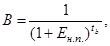
где B - коэффициент приведения;
tb - период времени приведения в годах;
Eн.п. = 0,8 - норматив для приведения равновременных затрат.
6.49. Если по сравниваемым вариантам капитальные вложения осуществляются в разные сроки или текущие затраты изменяются во времени, то сравнение вариантов следует производить приведением затрат более поздних лет к базисному году по формуле
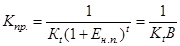
где Кпр. - затраты, приведенные к базисному году;
Kt - затраты в году.
В качестве базисного года может быть принят любой год. Для унификации расчетов следует в качестве базисного года принимать год начала эксплуатации насосной станции.
6.50. Если разница между капитальными вложениями и эксплуатационными затратами по вариантам менее 10 %, то без расчета приведенных затрат рекомендуется к строительству вариант с минимальной материалоемкостью и максимальной производительностью труда.
6.51. При сравнении вариантов конструкций (трубопроводы, каркасы зданий) из различных материалов показатели стоимости стальных конструкций должны быть приняты в соответствии с указанием директивных органов.
6.52. При технико-экономических расчетах, как правило, используется не сметная стоимость отдельных сооружений (локальные сметы, глава 2), а суммарные капиталовложения, учитывающие все виды затрат по главам сводной сметы. Сметная стоимость отдельных сооружений при технико-экономических расчетах может быть определена по проектам-аналогам, укрупненным показателям и для очень сложных сооружений - прямым счетом по чертежам с применением единичных расценок. При подсчете сметной стоимости сравниваемых вариантов возможная ошибка не должна превышать ±10 %. При определении капиталовложений необходимо учитывать поправки к стоимости металлоконструкций.
6.53. Следует учитывать, что величина ежегодных издержек производства (эксплуатационные расходы) состоит из следующих затрат:
амортизационные отчисления; расходы на амортизацию (восстановление и капитальный ремонт) сооружений, зданий и оборудования принимать по действующим «Нормам амортизационных отчислений» Госплана СССР;
стоимость электроэнергии, затраченной для подачи воды потребителю. Величина потребляемой электроэнергии определяется прямым счетом по графику водоподачи, а стоимость электроэнергии - по отпускной цене;
то же, на собственные нужды насосной станции (до 2 % от потребляемой электроэнергии на подачу воды);
затраты на содержание эксплуатационного персонала;
затраты на смазочные материалы и охрану труда.
6.54. При технико-экономических расчетах, как правило, пользуются понятием Qср.куб. (среднекубический расход), например, при определении экономичного диаметра напорных и самотечных трубопроводов, места расположения насосной станции и др. При расчете Qср.куб. необходимо учитывать реальный режим расходов (через одну нитку трубопровода или на канал).
6.55. Для определения экономичности запроектированных сооружений насосных станций должны быть разработаны нормативы удельных показателей как по отдельным сооружениям, так и по насосной станции в целом. Основными показателями эффективности являются:
а) удельные капиталовложения на 1 м3/с подачи (расхода)
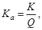
где К - стоимость строительства (глава 2) по отдельным сооружениям и насосной станции в целом, тыс. руб.;
Q - расчетная подача (без учета резервных агрегатов) насосной станции или расход рассматриваемого сооружения, м3/с;
б) ежегодные эксплуатационные расходы на 1 м3/с подачи (расхода) насосной станции или сооружения
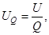
где U - сумма ежегодных затрат, тыс. руб.;
в) стоимость 1 м3 поднятой воды
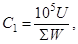
где ΣW - количество воды, поднятой насосной станцией в течение года, м3;
г) стоимость 1 тм поднятой воды
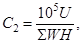
где ΣWН - сумма произведений подач воды, подаваемой насосной станцией, на напор по периодам за год, тм;
д) коэффициент использования установленного максимума мощности (α) или среднее число часов работы насосного агрегата в год (Тср.)
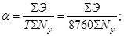
где ΣЭ - количество электроэнергии, потребляемой насосной станцией в год, кВт∙ч;
Т - количество часов в году;
ΣNy - максимальная установленная мощность электродвигателей насосов, подающих воду потребителю, кВт;
е) коэффициент полезного действия водопроводящих сооружений на участке аванкамера-здание-отводящий канал
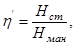
где Нст - расчетный статический напор (разность уровней воды в отводящем канале и перед аванкамерой);
Нман - манометрический напор (статический плюс потери напора при подаче нормального расхода);
ж) коэффициент полезного действия установки
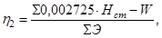
где ΣЭ - количество потребляемой электроэнергии за год, кВт∙ч, 0,002725 - переводной коэффициент;
ΣНстW - сумма произведений расчетных статических напоров насосной станции на соответствующие подачи.
СОДЕРЖАНИЕ